Agriculture et Agroalimentaire Canada (SISCan) — Transcription numérique haute fidélité
Table des matières (27 séries de sols répertoriées)
Etude Pédologique
du comté de Berthier
par
Gérard Godbout, pédologue
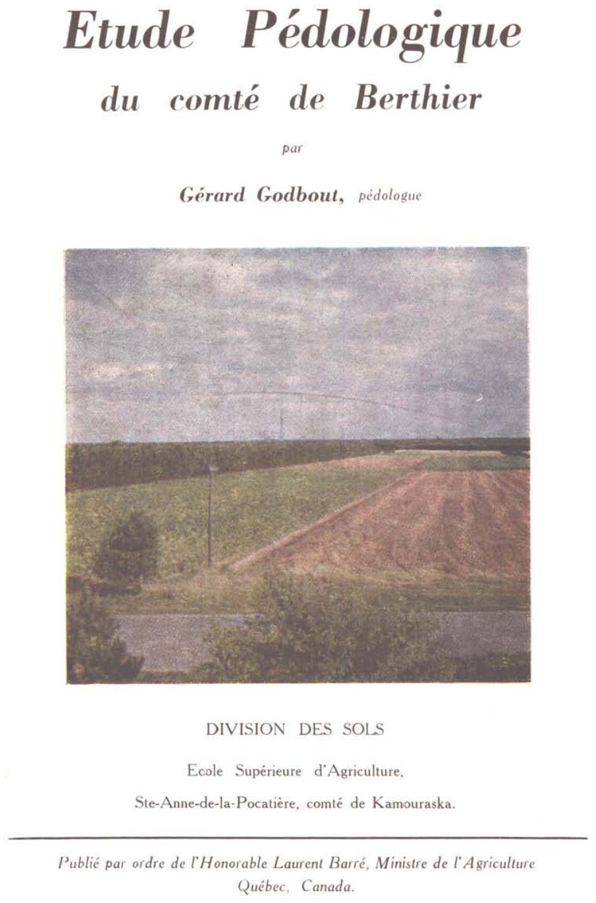
DIVISION DES SOLS
Ecole Supérieure d'Agriculture,
Ste-Anne-de-la-Pocatière, comté de Kamouraska.
Publié par ordre de l'Honorable Laurent Barré, Ministre de l'Agriculture
Québec, Canada.
Province de Québec — Ministère de l'Agriculture
Bulletin technique No 5Publié en 1957
Etude Pédologique
du comté de Berthier
par
Gérard Godbout
pédologue
DIVISION DES SOLS
Ecole Supérieure d'Agriculture,
Ste-Anne-de-la-Pocatière, comté de Kamouraska.
Cette publication est une contribution de la
DIVISION DES SOLS
Prof. AUGUSTE SCOTT, pédologue Chef
Service de la Grande Culture
André Auger, agronome
Directeur
Autres comtés classifiés
Cartes publiées avec ou sans rapport
Désignation du comté sur la carte-index
Nom du comté
Numéro du Bulletin
Publications
Année
Provincial
Fédéral
2
St-Jean
—
Carte avec notices explicatives
1942
8
Chambly
—
» » »
1942
9
Rouville
—
» » » »
1942
10
Verchères
—
» » » »
1942
12
St-Hyacinthe
—
» » » »
1942
13
Richelieu
—
» » » »
1942
5
Laprairie
—
» » » »
1943
5
Napierville
—
» » » »
1943
11
Iberville
—
» » » »
1943
66
L'Assomption
—
» » » »
1943
21-22 23-25
Stanstead—Sherbrooke Compton—Richmond
45
742 — Cartes — rapport
1943
15
Nicolet
1
Carte — rapport
1948
18-19 20
Shefford—Brome Missisquoi
—
Cartes — rapport
1948
3
Châteauguay
2
Carte — rapport
1950
72
Soulanges—Vaudreuil
—
Cartes — rapport
1950
14
Yamaska
3
Carte — rapport
1954
1-4
Huntingdon—Beauharnois
4
Cartes — rapport
1954
6-7
Laval—Montréal
—
Carte — rapport
1954
67-70
Terrebonne—Argenteuil
—
Cartes — rapport
1957
71
Deux-Montagnes
AVANT-PROPOS
Le présent rapport est une autre contribution à la Cartographie des Sols, soit la 5ième de la série de ses travaux d'études pédologiques.
Monsieur Auguste Scott, chef de la Division des Sols, par ses directives et ses suggestions dans l'étude des sols de la région fut, pour l'auteur, d'un très précieux secours dans la réalisation de cet ouvrage.
Monsieur Auguste Mailloux a travaillé avec l'auteur, à plusieurs reprises, dans la région. Il a contribué à la détermination des roches-mères et à l'élaboration de la nomenclature des sols.
Les résultats analytiques compilés ont été fournis par le personnel du Laboratoire de la Division des Sols, sous la direction de Monsieur Lucien Choinière.
Ont aussi apporté leur appui dans la préparation de ce rapport: Messieurs Roger Baril, P.C. Stobbe, Léonard Laplante comme conseillers techniques. Monsieur Georges-E. Foucher, agronome de Berthier, par ses précieuses indications sur l'agriculture; Messieurs Ernest Pageau, J. Leclerc et L. Dufour comme assistants de l'auteur sur le terrain même.
Ont également droit à la reconnaissance de l'auteur, Monsieur Henri-H. Bois, dessinateur à la Cartographie des Sols et Mlle Blandine Boulet, dévouée secrétaire à la Division des Sols.
À tous ces nombreux collaborateurs, l'auteur désire exprimer sa plus vive reconnaissance.
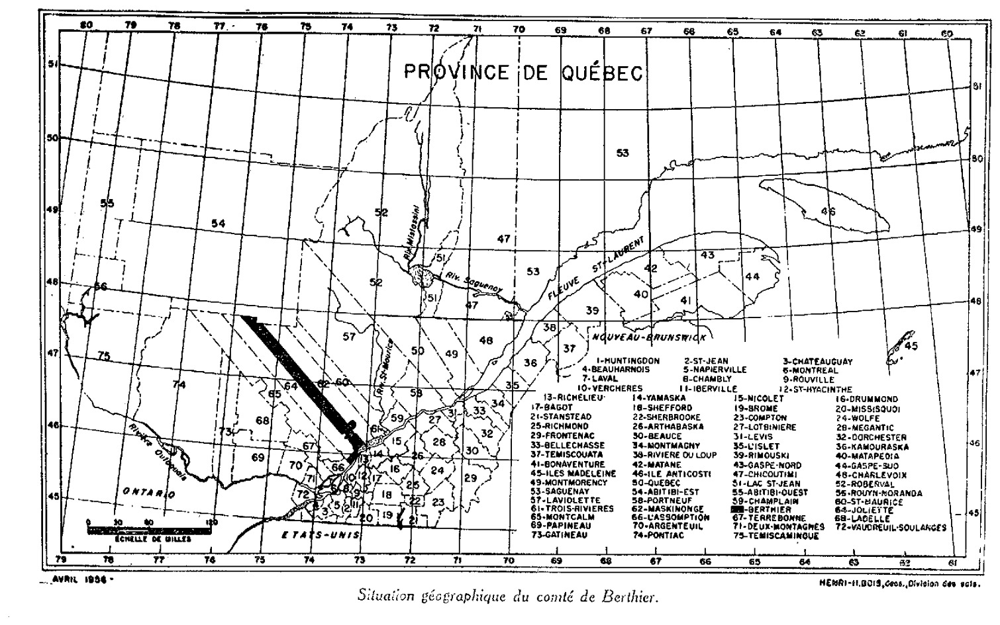
Situation géographique du comté de Berthier.
Liste des comtés
1-HUNTINGDON
2-ST-JEAN
3-CHATEAUGUAY
4-BEAUHARNOIS
5-NAPIERVILLE
6-MONTREAL
7-LAVAL
8-CHAMBLY
9-ROUVILLE
10-VERCHERES
11-IBERVILLE
12-ST-HYACINTHE
13-RICHELIEU
14-YAMASKA
15-NICOLET
16-DRUMMOND
17-BAGOT
18-SHEFFORD
19-BROME
20-MISSISQUOI
21-STANSTEAD
22-SHERBROOKE
23-COMPTON
24-WOLFE
25-RICHMOND
26-ARTHABASKA
27-LOTBINIERE
28-MEGANTIC
29-FRONTENAC
30-BEAUCE
31-LEVIS
32-DORCHESTER
33-BELLECHASSE
34-MONTMAGNY
35-L'ISLET
36-KAMOURASKA
37-TEMISCOUATA
38-RIVIERE DU LOUP
39-RIMOUSKI
40-MATAPEDIA
41-BONAVENTURE
42-MATANE
43-GASPE-NORD
44-GASPE-SUD
45-ILES MADELEINE
46-ILE ANTICOSTI
47-CHICOUTIMI
48-CHARLEVOIX
49-MONTMORENCY
50-QUEBEC
51-LAC ST-JEAN
52-ROBERVAL
53-SAGUENAY
54-ABITIBI-EST
55-ABITIBI-OUEST
56-ROUYN-NORANDA
57-LAVIOLETTE
58-PORTNEUF
59-CHAMPLAIN
60-ST-MAURICE
61-TROIS-RIVIERES
62-MASKINONGE
63-BERTHIER
64-JOLIETTE
65-MONTCALM
66-L'ASSOMPTION
67-TERREBONNE
68-LADELLE
69-PAPINEAU
70-ARGENTEUIL
71-DEUX-MONTAGNES
72-VAUDREUIL-SOULANGES
73-GATINEAU
74-PONTIAC
75-TEMISCAMINGUE
Étude pédologique du comté de Berthier
Description générale du comté
SITUATION ET ETENDUE
Situé à mi-chemin entre Montréal et Trois-Rivières, sur la rive nord du fleuve St-Laurent, le comté de Berthier forme une longue bande de territoire perpendiculaire au fleuve en direction nord-ouest sud-est.
Au sud-ouest, le comté est borné par celui de Joliette et au nord-est par celui de Maskinongé. Au nord-ouest, il atteint l'Abitibi. Il touche au fleuve non seulement sur toute sa largeur, mais aussi sur toute celle du comté de Joliette.
L'étendue du comté de Berthier lors du neuvième recensement (Québec 1951), est de 1,162,240 acres, superficie totale. On indique plus de 165 milles pour sa longueur et environ 10 milles pour sa largeur, sauf vis-à-vis St- Damien où la largeur augmente à 17 milles et au fleuve où elle atteint jusqu'à 25 milles. Quant aux latitudes, on les situe entre 45° 50' et 47° 50' et les longitudes de 73° 5' à 75° 55'.
LE RELIEF
Par sa position, le comté de Berthier occupe deux régions physiographiques bien distinctes: au sud, une vaste plaine appelée communément “les basses terres du St-Laurent”, au nord, le plateau laurentien qui origine à St-Norbert et s'étend jusqu'au comté limitrophe de l'Abitibi.
La Plaine.
Immédiatement en bordure du fleuve, d'un bout à l'autre du comté, on remarque une étroite frange d'alluvions récentes dont l'altitude ne dépasse guère 25 pieds. La faible élévation de toute cette surface plane pourrait facilement se confondre avec le niveau de base des affluents du fleuve qui drainent les terres de Berthier et de ses îles.
Faisant suite à cette tranche d'alluvions, nous avons plus au nord, en amont de Berthier, quelques gradins de terrasses mal définis et étagés à des niveaux successifs formant un relief qui, bien qu'uni dans l'ensemble, est toutefois marqué dans ses détails par des coteaux ondulés, des buttes et des cuvettes peu accentuées.
Ajoutons à ce modelé des basses terres, une longue dépression marécageuse englobant la petite rivière St-Jean.
A trois milles au nord de Berthier, c'est la vaste plaine d'argile Champlain mesurant approximativement 20 milles carrés et dont le relief est excessivement faible. Toute cette étendue débute par une terrasse de 100 pieds d'altitude. Celle-ci passe à 3/4 de mille au sud de St-Cuthbert et franchit les limites du comté de Joliette à une distance de 5 milles à l'ouest de Berthier. Cette même terrasse passe par les villages de St-Viateur, St-Barthélemy pour se continuer dans le comté de Maskinongé. La plaine d'argile s'allonge vers le nord et laisse ses derniers vestiges marins sous formes de légers gradins de terrasses à St-Norbert au rebord même du plateau Laurentien.
Etude pédologique du comté de Berthier
Le Plateau laurentien.
La deuxième unité physiographique contraste nettement avec celle que nous venons de décrire. Les basses terres de Berthier forment un plat et sans relief. Les Laurentides au contraire, occupent une région montagneuse sillonnée de vallées recouvertes de dépôts glaciaires, d'alluvions lacustres et fluviatiles. La ligne de démarcation entre ces deux zones passe à St-Norbert, à dix milles au nord du fleuve, et longe celui-ci parallèlement jusque dans Maskinongé.
Rebord des Laurentides.
Contrairement à ce que nous observons à quelques cent milles plus à l'est où la zone marginale du plateau laurentien présente un escarpement raide presque vertical, ici le rebord méridional du Bouclier présente une pente relativement douce, débutant par quelques affleurements rocheux de faible altitude alternant avec des dépressions remplies de sédiments récents. Graduellement la topographie s'accentue, et ce n'est qu'à quelques milles plus loin que tout le modelé prend définitivement l'allure de région montagneuse.
Dans cette première partie de la plate-forme laurentienne jusqu'à St-Gabriel, les sommets des collines rocheuses sont assez distants, et ne dépassent guère 750 pieds d'altitude. Le flanc de ces collines présente une pente relativement douce où s'accrochent des débris glaciaires de tous genres. L'amoncellement de ces matériaux disparates, à certains endroits, a été laissé tel quel par les glaciers.
A travers ces collines et massifs rocheux, circulent quelque huit à dix vallées par où dévalent autant de cours d'eau tributaires des rivières Bayonne et Chicot. Ces vallées très évasées et relativement profondes donnent, à l'ouest, dans le comté de Joliette et au sud dans la plaine de Berthier. Toute cette région, constituant le rebord de la plate-forme laurentienne, présente une légère déclivité vers le sud.
Bassins des lacs Maskinongé et Mandeville
Du sommet de la dernière colline, avant d'entrer dans St-Gabriel un paysage des plus saisissants apparaît aux voyageurs. En face, le lac Maskinongé, à gauche, la vallée du tronçon supérieur de la rivière Bayonne avec toutes ses ramifications, découpant le paysage en un fouillis de ravins très distincts et presque toujours à sec sauf lors des pluies. Plus au nord, de l'autre côté du lac, s'étend un vaste bassin dont la largeur atteint, à certains endroits plus de quatre milles et qui se prolonge jusqu'au lac Mandeville. Ce bassin est coupé longitudinalement par deux rivières: au sud-est, la Maskinongé, émissaire du lac portant le même nom; un mille plus au nord, la Mastigouche dont la berge abrupte sur le rebord sud, est souvent l'objet de glissement de terrain qui obstrue le lit de celle-ci. Cette rivière traverse la vallée jusqu'à Mandeville. De là, fait un brusque coude vers le nord où ses multiples ramifications vont vidanger l'eau d'un grande nombre de lacs perdus dans des ombilics glaciaires à l'intérieur des collines. Cette vallée renferme ici et là de petits eskers abandonnés par les fleuves sous-glaciaires.
Etude pédologique du comté de Berthier
Plus à l'est, s'étale le lac Mandeville ceinturé d'une petite plaine lacustre d'argile varvée très fertile et déployant une végétation luxuriante.
La dépression du lac Maskinongé, se prolonge à l'ouest vers le comté de Joliette. Vis-à-vis St-Damien, celle-ci se rétrécit, puis s'élargit au lac Matambin. Dans cette partie occidentale de la vallée glaciaire, s'étagent en niveaux successifs, de nombreux dépôts glacio-lacustres et fluvio-glaciaires (Eskers, Kames, terrasses de Kame, bassins d'épandage). La vallée qui coupe le comté de Berthier, de l'est à l'ouest, possède des terres de fertilité très variée suivant la nature des dépôts.
La vallée de la Rivière Noire
La vallée qui longe le rebord ouest du comté sur une longueur de quinze à vingt milles débute en forme d'auge assez évasée, puis se resserre entre deux parois rocheuses dressées droit au-dessus de la rivière. Ces escarpements verticaux où s'accrochent des conifères émerveillent l'homme de la plaine. La vallée s'élargit progressivement à quelques milles en aval de St-Zénon où elle communique avec celle de la rivière Kiagamac.
Cette dernière, très large vis-à-vis St-Zénon, se rétrécit, en aval aussi bien qu'en amont, et s'étend jusqu'à St-Michel des Saints. Le fond de la vallée glaciaire est tapissé de matériaux limono-sableux et d'alluvions fluviatiles très ravinées où se mêlent des bourrelets fluvio-glaciaires. Au nord de St-Zénon, à droite de la route qui conduit à St-Michel, s'étale une grande nappe de terrain sablo-limoneux.
La pénéplaine septentrionale du comté
La pénéplaine laurentienne va de la vallée du lac Maskinongé jusqu'en Abitibi. Cette partie de la plate-forme laurentienne englobe près des trois quarts du comté de Berthier. Toute cette région, inhabitée et à peu près inaccessible, présente une topographie localement accidentée. Cependant, contrairement aux rebords des laurentides, les massifs rocheux qui émergent de partout présentent des sommets plus rapprochés, les vallées sont moins excavées, des centaines de lacs, dont quelques-uns très profonds (ombilics glaciaires), disséminés partout reçoivent les eaux de toute cette immense superficie. Malgré la topographie accidentée, la ligne d'horizon présente dans l'ensemble une régularité remarquable.
En résumé, tout le secteur nord du comté de Berthier est une pénéplaine très irrégulière dans le détail, jalonnée de lacs aux contours capricieux, semée de monts ou saillies rocheuses que les glaciers ont raboté. Ils ont aussi abandonné des débris qui constituent un mince dépôt de sol hétérogène que les eaux ont, par la suite, délavé et entraîné par leur action érosive aux fonds des vallons.
Etude pédologique du comté de Berthier
Ce territoire âpre et rocheux est inculte. La forêt, maîtresse de toute cette superficie, devrait être respectée. La colonisation en cette contrée ingrate n'a certainement pas sa place.
HYDROGRAPHIE
Le réseau hydrographique du comté de Berthier est assez complexe. Comme deux régions physiographiques partagent le comté, voyons d'abord le réseau fluvial de la plaine, région naturelle, qui occupe toute la partie méridionale du comté. Celle-ci est drainée par trois principales rivières et par une infinité de ruisseaux formant un réseau dendritique dont les branches ramificatrices serpentent la plaine en tout sens.
Ces trois principales rivières, toutes trois tributaires du fleuve, sont de l'est à l'ouest: la Chaloupe, la Bayonne et la Chicot.
La rivière Chaloupe prend sa source dans le comté de Joliette un peu au nord-est de la ville du même nom. Elle décrit une série de sinuosités inégales et irrégulières avant d'être rejointe par les eaux de la rivière St-Thomas, sa rivière tributaire, sise à quelque quatre milles à l'ouest des limites du comté de Berthier.
La rivière Chaloupe, dès sa pénétration dans ce comté, d'oblique qu'elle était devient maintenant perpendiculaire au fleuve et s'y déverse à environ un mille et demi à l'ouest de Berthierville. Ce dernier trajet s'effectue à travers de nombreux méandres qui retardent considérablement son cours.
Plus importante que la précédente, la rivière Bayonne possède un bassin d'alimentation de 4 à 5 milles situé au sud-ouest de St-Gabriel de Brandon. Peu après sa pénétration dans le comté de Joliette, au nord-ouest de St-Cléophas, la rivière Bayonne reçoit les eaux de la rivière Berthier, ainsi que celles d'un grand nombre d'autres affluents de moindre importance.
Aux approches de St-Félix de Valois, ce cours d'eau forme un tronçon bien distinct qui va grossissant grâce aux apports de quelques autres tributaires dont le principal est le ruisseau St-Martin qui le rejoint à un mille au nord de Ste-Elisabeth. A cette denière localité, la Bayonne tourne brusquement vers l'est avant de pénétrer à nouveau dans le comté de Berthier. Elle décrit alors quelques boucles avant de recevoir les eaux de la rivière Bonaventure aux environs de Berthier, et de là constitue une ligne assez régulière jusqu'au St-Laurent où elle se jette aux limites de Berthierville.
Enfin, la rivière qui, par son importance, occupe le troisième rang dans le réseau de la plaine, c'est la Chicot. Elle est alimentée par les eaux du ruisseau St-André et par quelques autres cours d'eau encore inidentifiés auxquels vient se joindre l'émissaire du lac Dupras. La Chicot s'écoule perpendiculairement au fleuve en passant par St-Edmond Station, St-Cuthbert Station, puis au passage capte les eaux de la rivière Ste-Catherine pour finalement atteindre le St-Laurent à environ un mille à l'extrémité est de l'Ile St-Amand.
Etude pédologique du comté de Berthier
L'égouttement de la partie ouest du comté est assuré par la rivière St-Jean et la Petite Rivière. Celle-ci prend sa source près de St-Thomas de Joliette, coule vers l'est, décrit un demi-cercle, revient sur ses pas et pour finir se jette dans le fleuve à quelque 5 milles à l'ouest de Berthier-ville.
Quant à la rivière St-Jean, elle prend sa source dans la Tourbière de Lanoraie, coule vers l'ouest en longeant à distance la côte du St-Laurent et enfin y verse ses eaux à 2 milles des limites du comté de L'Assomption.
Ces deux rivières et leurs affluents assurent donc l'assainissement des terres de toute la partie ouest du comté.
La deuxième unité physiographique, c'est-à-dire la partie septentrionale du comté, possède plusieurs bassins hydrographiques dont le principal est celui de St-Gabriel de Brandon. Cet immense bassin de drainage est constitué du lac Maskinongé, mieux connu sous le nom de St-Gabriel, dont le principal affluent est la rivière Mastigouche qui est alimentée par les eaux des régions montagneuses du nord du comté. La rivière Maskinongé, émissaire du même lac, draine les terres de la grande vallée de Maskinongé.
Plus au nord, les autres bassins hydrographiques sont formés des rivières suivantes: la Matambin, la Rivière Noire, la Kiagamac, la Mattawin, la Therrien, la David, la Rivière des Aulnaies, etc...
On ne peut parler d'hydrographie dans Berthier sans souligner la présence, dans toute la région septentrionale, d'innombrables lacs, soit au-delà de cent seulement entre St-Gabriel de Brandon et St-Michel des Saints. Ils constituent pour l'habitant du nord une des principales sources de revenu, non pas à cause de l'assainissement d'une région peu propice à l'agriculture, mais plutôt par l'attrait touristique que présentent en toute saison la nature sauvage, le nombre et la beauté de ses lacs.
Etude pédologique du comté de Berthier
DRAINAGE DU SOL
L'égouttement du sol est une question fondamentale en agriculture; même les cultivateurs les moins avisés reconnaissent que la première amélioration à faire, sur une ferme, est de la débarrasser de son surplus d'eau, sans quoi aucune culture n'est possible.
Afin de compléter les données sur les divers réseaux hydrographiques du comté, et dans un but utilitaire plus immédiat, nous avons cru bon d'ajouter une carte illustrant les états de drainage du sol et leur répartition dans les différents secteurs du comté.
A cette fin, nous avons établi sept différentes classes couvrant à peu près tous les degrés de drainage du comté. (Voir carte en pochette.)
Toutefois, l'auteur désire mettre le lecteur en garde contre les données de certains secteurs. L'appréciation, ayant été faite selon une norme pédologique, peut parfois sembler s'écarter de l'appréciation de celui qui juge l'état d'assainissement d'un sol uniquement en fonction des besoins d'une culture particulière ou de son comportement en 'temps sec.
Ces dernières méthodes s'avèrent insuffisantes et soixantes fois erronées.
Ainsi, l'auteur a-t-il plus d'une fois constaté le mauvais drainage de certaines fermes à sol lourd. "Pourtant, de dire le cultivateur, c'est précisément cette partie de la terre qui souffre le plus des sécheresses." Ce fait paradoxal sur nos sols argileux est assez fréquent.
En effet, que se produit-il lorsque l'on sème des grains dans un sol mal égoutté, c'est-à-dire dont la nappe d'eau est trop près de la surface au printemps? La plantule en sortant de la graine forme des racines, qui descendent dans le sol jusqu'à ce qu'elles trouvent l'humidité nécessaire au développement de la plante; si elles rencontrent l'eau trop près de la surface, elles ne pénétreront pas en profondeur et s'étaleront horizontalement. Arrivent les sécheresses des mois d'été, les racines développées uniquement en surface manqueront d'eau et se dessécheront avant d'atteindre leur maturité. Dans un terrain bien drainé au contraire, où la nappe d'eau est abaissée dès le printemps, les racines se développeront en profondeur. Lorsque surviendra la sécheresse, les racines déjà installées en milieu continuellement humide pourront s'abreuver et poursuivre normalement leur croissance jusqu'à maturité complète.
Etude pédologique du comté de Berthier
Classes
Etat de drainage
Superficie en acres
I
Bon à excessif
4,851.20
II
Bon
42,329.60
III
Bon à imparfait
18,054.40
IV
Imparfait
27,686.40
V
Imparfait à mauvais
24,755.20
VI
Mauvais
15,315.20
VII
Mauvais à très mauvais
12,787.20
L'appréciation du pédologue est basée sur toutes une gamme de caractéristiques du profil de sol (présence d'un horizon de gley, de concrétions de mouchetures etc...)
Il peut arriver aussi qu'un type de sol faisant partie d'une classe ait été subséquemment assaini sur une certaine étendue. Dans une carte générale, il est impossible au pédologue d'inclure ces cas particuliers.
Le tableau ci-dessus donne les superficies couvertes par les différentes classes.
CLIMATOLOGIE
Les divers phénomènes climatiques qui prévalent dans une région donnée constituent un des facteurs limites de la production végétale ou de l'adaptabilité des différentes cultures à cette région. L'influence du climat joue en effet un rôle non négligeable sur la croissance des plantes, sur le choix des variétés et sur l'introduction de nouvelles cultures.
C'est aussi le climat (pédoclimat) qui a présidé aux divers processus de formation et d'évolution des sols de la région.
En dépit de ce rôle important dans l'économie agricole, le climat reste indépendant et inchangeable puisqu'il est et demeure fonction de la situation géographique ou des différentes unités physiographiques d'une région donnée ou d'un comté en particulier.
Cependant, même si l'animal et la plante sont subordonnés au climat, il importe d'en connaître les éléments les plus susceptibles d'influencer l'agriculture.
Berthier possède quatre stations météorologiques :
TABLEAU I
Fondé en
Lat. Nord
Long. Ouest
Alt.
Bassins hydrographiques
Berthier
1919
46°6'
73°11'
27
St-Laurent
Barrage Mattawin
1929
55°51'
73°52'
1200
Mattawin
St-Charles de Mandeville
1921
46°21'
73°20'
296
Maskinongé
St-Gabriel de Brandon
1919
46°17'
73°23'
605
Maskinongé
La situation géographique de ces diverses stations météorologiques représente assez fidèlement le climat des grandes régions naturelles du comté de Berthier.
Les tableaux qui suivent présentent quelques données recueillies à ces diverses stations: le tableau II illustre les périodes sans gelée pour trois stations qui représentent les terres basses sises en bordure du fleuve (station météorologique de Berthierville), le rebord du plateau (station météorologique de St-Gabriel de Brandon) et enfin les hautes terres qui couvrent toute la partie septentrionale du comté (le Barrage Mattawin).
Etude pédologique du comté de Berthier
Période sans gelée
TABLEAU II —
Date moyenne
Nom. de jours sans gelée Moy. Max. Min.
Période
Dernière gelée
Première gelée
Dernière gelée
Première gelée
Moy.
Max.
Min.
Stations
McGill
76 ans
24 mai
29 sept.
28 avr.
14 oct.
172
201
145
St-Laurent
19 ans
23 mai
13 sept.
8 mai
1 oct.
145
173
128
Macdonald
42 ans
3 juin
11 sept.
6 mai
3 oct.
150
176
119
Sherbrooke
10 ans
25 mai
14 sept.
17 mai
28 sept.
135
157
113
Hemmingford
10 ans
4 juin
13 sept.
20 mai
19 sept.
122
134
106
Ste-Martine
10 ans
1 juin
2 sept.
14 mai
17 sept.
126
139
113
Les Cèdres
15 ans
23 mai
25 sept.
8 mai
6 oct.
151
175
125
Gaspé
9 ans
12 juin
9 sept.
2 juin
15 sept.
104
118
91
Charlesbourg
5 ans
19 juin
7 sept.
31 mai
7 sept.
101
108
93
Amos
10 ans
25 juin
30 août
12 juin
11 sept.
91
106
70
Berthier
12 ans
21 mai
13 sept.
8 mai
22 sept.
137
167
123
St-Gabriel
6 ans
3 juin
4 sept.
16 mai
26 sept.
133
154
116
Barrage Mattawin
4 ans
26 juin
15 août
16 juin
4 sept.
80
112
64
Aux données de ces différentes stations nous avons inclus, pour fin de comparaison, celles de stations disséminées un peu aux quatre coins de la province.
On note une différence marquée entre les dates des dernières et premières gelées au printemps et à l'automne respectivement pour les différents secteurs du comté. Ainsi, à Berthier la date moyenne de la dernière gelée au printemps est le 8 mai. Celle du Barrage Mattawin est presque un mois plus tard, soit le 16 juin, donnant respectivement 137 et 80 jours sans gelée pour ces deux stations. Donc, une différence de 57 jours comme période de végétation entre le bas et le haut du comté.
Ce phénomène, il va sans dire, exerce sur l'agriculture une influence marquée. Ajoutant le facteur climat à celui de la pauvreté du sol du haut du comté, on comprend mieux l'état d'infériorité où se trouve l'habitant qui tente d'exploiter des terres dans les paroisses sises au nord du comté.
Le nombre de jours sans gelée (137) à Berthier est exceptionnellement élevé, soit la période la plus longue pour la province après la région métropolitaine.
La proximité du fleuve et surtout du lac St-Pierre expliquerait la douceur du climat des basses terres de Berthier. Le rôle modérateur de cette masse d'eau, n'est pas sans jouer considérablement sur la température de la région.
Notons toutefois, que le nombre d'années d'observation est très limité aux trois stations météorologiques de Berthier, St-Gabriel et Mattawin, soit 12, 6, et 4 ans respectivement. Peut-on considérer ces données comme vraiment significatives?
Étude pédologique du comté de Berthier
TABLEAU III — Précipitation aux diverses stations météorologiques du comté de Berthier
Mois
Berthier (1)
Barrage (1) Mattawin
St-Charles de (1) Mandeville
St-Gabriel de (1) Brandon
Décembre
3.13 *
2.64
2.88
3.18
Janvier
2.84
2.02
2.70
3.30
Février
2.29
2.12
2.29
2.62
Hiver
8.26
6.78
7.87
9.10
Mars
2.81
2.50
2.59
3.12
Avril
3.08
2.48
2.44
2.95
Mai
3.56
2.56
2.96
2.84
Printemps
9.45
7.54
7.99
8.91
Juin
3.23
3.55
3.07
3.83
Juillet
3.27
3.55
3.58
4.01
Août
3.35
3.34
3.43
3.50
Été
9.85
10.44
9.98
11.34
Septembre
3.47
3.32
3.34
3.36
Octobre
3.10
2.37
2.84
3.11
Novembre
3.28
2.63
3.00
3.37
Automne
9.85
8.32
9.18
9.84
ANNUELLE
37.41
33.08
35.02
39.19
Le tableau III donne la précipitation mensuelle et saisonnière aux mêmes stations. On remarque que la précipitation durant les trois saisons: hiver, printemps et automne, à Berthierville est la plus élevée. En été, la précipitation est près de 2 pouces inférieure à celle de St-Gabriel. C'est à cette dernière station que la précision annuelle est la plus élevée. En dépit de cet écart, on note par ailleurs que les pluies, pour la saison estivale, sont réparties uniformément dans tout le comté.
VOIES ET COMMUNICATIONS
Le comté de Berthier est desservi par trois principaux genres de communications d'importance variable: le fleuve St-Laurent et quelques rivières, trois lignes de chemin de fer, des tronçons du réseau provincial et des voies secondaires. La région côtière est plus favorisée que la partie septentrionale, où les routes serpentent dangereusement à travers des vallées profondes comme celle de la Rivière Noire.
Le fleuve et quelques bras baignent toute la partie inférieure du comté et ce, dans toute sa largeur. Cependant, on n'y rencontre aucun quai d'importance; seules quelques barges viennent accoster de temps à autre à celui de Berthierville pour y prendre des chargements de foin ou autres produits agricoles.
Quant aux rivières, aucune ne présente des facilités pour la navigation exception faite du canotage. Leur faible profondeur empêche le passage même des barges.
Les chemins de fer nationaux exploitent un des trois tronçons de voies ferrées circulant dans le comté. La ligne Montréal-Québec, propriété du C.P.R. le parcourt dans sa région centrale en passant par St-Barthélemy Jonction, St-Cuthbert et Berthierville; une section relie Berthierville à cette ligne principale.
Plus au nord, parallèlement à la précédente, on y retrouve une autre voie ferrée, exploitée cette fois par le C.N.R.. Venant du comté de Maskinongé elle relie, dans Berthier, St-Norbert à Ste-Elisabeth de Joliette. Et enfin une autre ligne, propriété du C.P.R., dessert le lac St-Gabriel de Brandon et ses environs pour aboutir à St-Félix de Valois.
Etude pédologique du comté de Berhier
Le réseau routier comprend quelques sections du système provincial, des routes secondaires et d'autres de moindre importance. La principale artère est, sans contredit, la route nationale No 2 reliant Montréal à Québec. Elle traverse tout le bas du comté dans le sens de sa largeur en passant par Lavaltrie, Lanoraie et Berthierville. C'est la voie où l'activité est la plus intense dans la province.
La route No 43 relie Berthierville à Ste-Emilie de l'Energie dans Joliette, en passant par les municipalités de St-Norbert, St-Gabriel de Brandon et enfin St-Damien.
A quelques milles en aval de Berthierville, la route No 2 se dédouble pour étendre une ramification vers le nord pour desservir St-Cuthbert, bifurque par la suite vers le nord-est jusqu'à St-Barthélemy, et de là pénètre dans le comté de Maskinongé.
Mentionnons en terminant d'autres routes de moindre importance telles que celles allant de St-Cuthbert à St-Edmond, de St-Gabriel à St-Charles de Mandeville, de Ste-Emilie à St-Michel des Saints, de Berthier-ville à St-Thomas de Joliette, etc...
La distribution de l'électricité est assurée par la Shawinigan Water and Power Co. Quelque sept postes télégraphiques disséminés le long des trois voies ferrées du C.N.R. et du C.P.R. desservent la population du comté. Enfin, la Cie de Téléphone Bell y assure les communications téléphoniques.
Etude pédologique du comté de Berthier
GEOLOGIE
L'enquête des sols du comté n'a signalé aucun sol résiduel cultivable; la présence de diverses formations géologiques, à des profondeurs variables, n'a rien changé à l'évolution du sol jusqu'à son stade actuel. Le quaternaire demeure le grand artisan dans l'édification de nos sols arables.
A titre documentaire, signalons tout de même trois régions géologiques dont les limites coïncident avec celles des régions physiographiques déjà établies.
Les couches paléozoïques forment une bande d'environ huit milles de largeur correspondant à la plaine. Elles appartiennent au Cambrien et à l'Ordovicien. La formation de Potsdam (Cambrien) affleure en certains endroits la bordure méridionale du Plateau. Les formations Beekmantown, Chazy, Black River, Trenton et Utica appartenant à l'Ordovicien sont généralement recouvertes d'un épais manteau d'alluvions. Les sédiments de la série St-Urbain reposent, en l'occurrence, sur du Trenton lequel confère à l'horizon C (roche-mère) une réaction alcaline. Le St-Urbain est localisé tout près de St-Barthélemy où l'on exploite une carrière de Trenton.
L'existence d'une faille, passant à St-Cuthbert, entre le Plateau précambrien et les Basses Terres paléozoïques est encore discutée; il est plausible cependant que des fractures se soient produites à la fin des temps précambriens (Dresser).
La classification du Précambrien situe effectivement le Plateau de Berthier et son contrefort dans la sous-province de Greenville; cependant, les études géologiques dans cette province sont très disséminées et n'apportent aucun détail pour la région concernée.
Le rebord du plateau renferme des syénites et des granites gneissiques, des grès, des quartzites et des porphyres granitiques. A mi-distance entre St-Norbert et St-Gabriel, le chemin traverse une inclusion feldspathique de couleur rose et mauve, ce qui est apparemment de l'orthose et de la microcline; ces porphyres renferment aussi de la hornblende comme troisième élément d'importance.
De St-Gabriel à St-Michel, les vallées sont plus étroites et aussi plus profondes. Les escarpements verticaux de la Rivière Noire atteignent jusqu'à deux cents pieds de hauteur; on devine aisément que l'érosion glaciaire n'a pu entamer ou éroder aussi fortement le socle cristallin.
Encaissée entre deux rangées de collines laurentiennes, cette vallée est, selon toute probabilité, une vallée préglaciaire. La composition de la roche semble changée considérablement dans cette troisième région, car les roches ont la couleur sombre typique des membres inférieurs de la famille des granites.
Etude pédologique du comté de Berthier
POPULATION ET ORIGINE ETHNIQUE
Le tableau IV nous fait voir que la population du comté de Berthier n'a guère changé depuis cent ans. Les légères fluctuations, de décennie en décennie ne semblent pas significatives sauf de 1941 à 1951 où l'augmentation a été assez sensible soit un surplus de 3,500 âmes.
Le tableau VI nous donne le dénombrement des 4 dernières décennies ainsi que la densité de la population au mille carré. Le pourcentage de la population rurale a sensiblement diminué dans le cours des 10 dernières années. Le nombre d'habitants au mille carré est faible soit 11.6 et 13.6 pour 1941 et 1951 respectivement. Ces chiffres n'ont cependant rien d'étonnant si l'on sait que, sur une superficie de 1,162,240 acres de terre, à peine 192,325 sont habitées, soit environ 16% du comté. Le reste du comté, soit plus de 84%, constitue un territoire actuellement inhabité et à peu près inhabitable à cause de la nature du terrain trop accidenté.
TABLEAU IV
POPULATION
ORIGINE ETHNIQUE
RELIGION
Année
Totale
Anglaise
Irlandaise
Ecos-saise
Française
Indienne
Autres races
Catholique
Autres
1851
16,380
17
34
6
16,301
—
22
16,221
159
1861
19,608
9
44
6
19,528
—
21
19,404
204
1871
19,804
131
113
91
19,435
6
28
19,650
154
1881
21,838
3
14
4
21,597
—
220
21,674
164
1891
19,836
17
8
3
19,639
—
169
19,702
134
1901
19,980
143
73
56
19,670
1
37
19,872
108
1911
19,872
116
56
32
19,620
—
48
19,767
105
1921
20,509
106
33
7
20,213
1
149
20,343
166
1931
19,506
112
27
31
19,277
—
59
19,437
69
1941
21,233
93
27
23
20,999
14
77
21,183
50
1951
24,717
289 §
§
§
24,280
5
143
§ Le chiffre contenu dans la colonne de la population d'origine anglaise pour 1951, soit 289, comprend aussi la population d'origine irlandaise et celle d'origine écossaise.
1851 — Avec le comté de Joliette.
1861 — Moins: St-Edmond, St-Damien, St-Charles, St-Zénon, St-Michel, St-Viateur
Île St-Ignace.
1871 — Comme 1861.
1881 — Moins: St-Edmond, St-Charles, St-Zénon, Ile St-Ignace, St-Vlateur.
1891 — Comme 1881.
1901 — Moins: St-Edmond, St-Charles, St-Viateur.
1911 — Comme 1901.
1921 — Moins: St-Edmond.
1931 — Toutes les paroisses.
1941 — Toutes les paroisses.
REFERENCES: — Recensements du Canada.
Étude pédologique du comté de Berthier
Population du comté de Berthier
TABLEAU V.—
Population totale
Population des fermes
Nombre de culti- vateurs
1941
1951
1941
1951
1951
Comté de Berthier
21,233
24,717
10,379
9,446
1,822
Lavaltrie
692
847
599
537
103
Île Dupas
396
429
278
211
42
St-Barthélemy
2,111
2,105
1,365
1,175
242
St-Charles de Mandeville
1,256
1,335
589
348
88
St-Cuthbert
1,792
1,779
1,310
1,348
228
St-Damien
1,007
1,093
607
649
103
St-Edmond
327
285
308
266
St-Gabriel
936
1,026
859
834
161
Berthierville
1,560
1,895
1,184
1,037
265
St-Ignace
1,102
1,401
486
514
56
Lanoraie
1,513
1,759
641
700
158
St-Michel
1,225
1,652
442
389
84
St-Norbert
977
970
827
747
156
St-Viateur
284
271
227
202
49
St-Zénon
1,000
1,179
657
482
87
Non organisé
23
7
REFERENCES: — 8ième recensement du Canada (1941)
9ième recensement du Canada (1951)
Enquête économique par Prof. J.-R. Fournier.
Étude pédologique du comté de Berthier
TABLEAU VI —
Dénombrement décennal de la population
1921
1931
1941
1951
Total
20,509
19,506
21,233
24,717
Par mille carré
11.2
10.7
11.6
13.6
Rurale
16,649
15,237
16,552
17,503
Rurale %
81.1 %
78.1 %
77.9 %
70.8 %
Nombre de cultivateurs
1,822
RÉFÉRENCES:— 6ième recensement agricole du Canada (Québec)—1921—Vol. V
7ième recensement agricole du Canada (Québec)—1931—Vol. VIII
8ième recensement agricole du Canada (Québec)—1941—
On peut subdiviser le comté de Berthier en trois régions physiographiques distinctes. La Plaine, le Rebord des Laurentides et le Plateau Laurentien. Ces trois grandes unités basées sur la topographie, sur les formes et modes de dépôts, coïncident incidemment avec la nature minéralo-pétrographique des roches-mères qui recouvrent le comté.
La connaissance de cette roche-mère est d'importance primordiale. C'est elle qui a présidé à l'évolution et qui a engendré les sols dont l'étude fera le principal objet de ce rapport.
Ces trois grandes divisions nous aideront à étudier et à mieux comprendre la nature et les grandes caractéristiques des groupes ou associations des sols qui recouvrent le comté de Berthier.
LA PLAINE
La Plaine de Berthier, dont le substrat est constitué de couches paléozoïques horizontales, longe la rive nord du fleuve St-Laurent sur une distance de plus de 25 milles. Sa profondeur atteint respectivement 5 et 10 milles vis-à-vis Lavaltrie et Berthier. Elle occupe donc toute la partie méridionale du comté, soit une superficie d'environ 175 milles carrés.
Cette première région, ou unité naturelle, adossée aux premiers contreforts des Laurentides, présente un relief très uni interrompu par une seule terrasse d'importance sise au milieu de la dite plaine.
Alluvions fluviatiles récentes:
Immédiatement en bordure du fleuve, une étroite bande d'alluvions récentes s'étend de l'est à l'ouest sur toute la largeur du comté. Ajoutons à cette tranche les quelque vingt-cinq îles à l'est de Berthierville. L'altitude de ces dépôts est faible, soit environ 25 pieds au-dessus du niveau des eaux du fleuve.
Ces alluvions, superposant les argiles Champlain, sont principalement constituées de limons, ceux-ci auraient vraisemblablement été déposés par le fleuve et ses tributaires à l'époque où toutes ces eaux, ralenties et chargées de fins débris en suspension, réintégraient le lit actuel du fleuve à la faveur du recul marin. Le même phénomène se répète de nos jours à l'époque des inondations printanières dues à la fonte des neiges et à la crue des eaux. Celles-ci, en reprenant leur lit, abandonnent et garnissent nos platières d'éléments fins. Ces limons de débordement, dernier vestige des eaux colmatantes du fleuve, reposent à quelques pieds de profondeur sur un substrat argileux.
Les séries de sols développées aux dépens de ce manteau alluvionnaire sont: les séries de la Chaloupe, de Beaudette, de Berthier et de Dupas. Nous traiterons celles-ci en détail au chapitre des sols.
Alluvions fluviatiles finimarines:
Faisant suite à cette première tranche d'alluvions, nous avons, plus au nord et en amont de Berthierville, quelques coteaux ou légers gradins de terrasses irrégulières et découpées en longues ondulations formant dans l'ensemble un relief quelque peu échancré.
La mosaïque de ce coin du comté est constituée d'un épais manteau de sable dont la sédimentation, selon toute probabilité, s'est effectuée lors de la régression marine, phase contemporaine au relèvement continental.
Etude pédologique du comté de Berthier
Ce soulèvement saccadé communiqua une recrudescence d'érosion. La compétence des cours d'eau ainsi accrue, les matériaux plus grossiers (sables) furent entraînés aux embouchures temporaires des cours d'eau formant des plages et des deltas. A une date ultérieure, le niveau de base ayant baissé, les eaux retrouvant de la pente, vinrent de nouveau altérer la nappe alluviale préalablement déposée en l'éventrant et en la découpant en bandes ou en longs coteaux parallèles au fleuve. De cette façon, de nouveaux chenaux furent formés; ainsi la petite Rivière St-Jean et ses tributaires sont effectivement le résultat de ce nouvel arrangement.
Ce remodelage du pays, subséquemment édifié par les eaux, est bien celui qui s'offre à nos yeux aujourd'hui dans les paroisses de Lavaltrie, Lanoraie et Berthier.
Sur ces revêtements de sables de grosseurs variées naissent les séries de sols suivantes: St-Jude, Achigan, St-Samuel, St-Amable, St-Thomas, Lanoraie et Uplands.
Dépôts marins argileux.
La plaine d'argile qui commence à quelque trois milles au nord de Berthierville et qui s'étend vers le nord jusqu'aux premiers contreforts des Laurentides occupe une superficie de près de vingt milles carrés. Cette étendue, en terrain très plat, englobe la presque totalité des paroisses de St-Norbert, St-Cuthbert, St-Viateur et St-Barthélemy.
La sédimentation de ces argiles (débris détritiques des calcaires ordoviciens) remonte à l'époque Champlain. Constituées de particules très fines ces argiles ont été entraînées en suspension dans les eaux calmes et salées de la mer Champlain. A la faveur d'électrolytes marins, ces fines particules se sont floculées puis précipitées en bancs massifs comblant ainsi l'immense cuvette (crypto-dépression) du lac St-Pierre. Incidemment, la plaine de Berthier repose dans cet ancien ombilic glaciaire.
Ce manteau d'argile qui recouvre un substratum ordovicien, atteint une très grande profondeur. Quelques sondages effectués ci et là indiquent des profondeurs pouvant atteindre jusqu'à 550 pieds (à Berthierville).
Au sud de la paroisse de St-Barthélemy, en contre-bas de la terrasse et à trois pieds de la surface, l'argile devient calcaire faisant effervescence au contact de l'acide chlorhydrique. Ce caractère particulier confère au sol une richesse remarquable. La position quelque peu déprimée de cette argile calcaire favorise l'accumulation de débris végétaux (humus). Cette particularité n'est pas sans importance dans les sols lourds; la structure devient plus grumeleuse et moins compacte.
L’horizontalité de cette étendue rend difficile l’assainissement de toutes ces argiles. Le plan d’eau qui se maintient à très faible profondeur retarde et endommage parfois les cultures au printemps et lors des précipitations abondantes et trop prolongées.
L’argile calcaire constitue la roche-mère de la série de St-Urbain, (nommée d’après la localité de St-Urbain de Châteaugauguay), tandis que l’argile non calcaire qui occupe le haut de la terrasse a donné naissance aux séries de Ste-Rosalie, en terrain plat et imparfaitement drainé, et de Rideau là où le relief est plus accidenté, sur les berges à pente raide ainsi que sur toutes les buttes surplombant la plaine. (1)
Dépôts éoliens.
Après s’être déposée, la nappe d’alluvions sableuses qui recouvrent la majeure partie des paroisses de Lavaltrie, Lanoraie et Berthier, a subi le travail du vent en ses parties les plus vulnérables. La nouvelle érosion éolienne redéplaça le sable le plus fin et l’édifia en dunes ou en buttes mobiles. Ces monticules chevauchants ou lambeaux blanchâtres balayés sans merci émergent ici et là, le long de la route nationale, entre Lavaltrie et Berthierville.
Un peu plus au nord, dans les rangs St-Jean-Baptiste et St-Henri, nous rencontrons des formations d’anciennes dunes qui, à la longue, furent immobilisées et envahies par des bétulaies et des peuplements de conifères.
Les sables fins récemment fixés ont permis aux agents tant biologiques qu’atmosphériques d’opérer chez-eux un début de migration des bases et colloïdes (processus de podzolisation). Cette légère transformation morphologique a donné naissance au sol que nous avons identifié et cartographié aujourd’hui comme série de Lanoraie. Notons que ce nouveau type de sol faiblement développé, aux horizons encore peu marqués, se rencontre toujours en association avec son congénère plus âgé, plus évolué et mieux développé, la série St-Thomas.
Ces deux derniers types constituent dans la région les sols à tabac jaune. L’exploitation très intense de cette culture durant les deux dernières décennies a donné à la région, devenue presque désertique, un regain de prospérité sans précédent. Ajoutons, toutefois, que cette ère de prospérité a semblé ralentir au cours des dernières années et pour cause, la mévente du tabac.
(1)—Une étude plus complète sur la nature et la structure de ces argiles nous est fournie dans le Bull. Tech. No 4 “Etude pédologique des comtés de Huntingdon et de Beauharnois” p. 99.
Etude pédologique du comté de Berthier
Un danger perpétuel menace cette zone ensablée : la dénudation excessive, suscitée par des cultures sarclées trop répétées et sans reconstitution d'apports organiques appropriés et suffisants. L'appauvrissement de ces sols étant très rapide, il faut prévenir la dissipation du peu d'humus péniblement formé. Il importe donc d'y maintenir continuellement une couverture végétale. Détruire complètement la forêt sur ces sables est donc imprudent, on risque d'y créer un désert.
Accumulations tourbo-marécageuses.
Ajoutons au modelé de la plaine, précédemment décrite, une longue dépression marécageuse composée de tourbe dont la périphérie est en partie constituée de terre noire plus ou moins bien décomposée.
Cette accumulation tourbo-marécageuse se situe à quelques milles du fleuve dans les paroisses de Berthier, Lanoraie et Lavaltrie. Ce bas-fond, parallèle au fleuve, forme une enclave ou bande sinueuse qui bifurque à maints endroits, étale des langues ou bras isolant des coteaux et bancs de sable en les circonscrivant.
L'origine et le processus de développement de cette tourbière sont déjà connus. L'absence d'émissaires libres dans cette longue dépression ou cuvette en a fait jadis un lac. Les eaux ainsi emprisonnées dans ce bas-fond ont graduellement été envahies par la végétation dont l'empiétement graduel finit par combler l'espace occupé par l'ancien lac.
La superficie globale de la tourbière est approximativement de 15,500 acres.
Alluvions non-différenciées.
Ces alluvions dites non-différenciées sont des dépôts récents, hétérogènes abandonnés le long des cours d'eau du comté. Une légère bande couvre aussi le littoral du fleuve en amont de Lavaltrie. Ceux-ci occupent une superficie totale de 15,888.00 acres dans le comté.
La texture de ces matériaux est très variable. On y rencontre du sable, du limon et de l'argile et souventes fois les trois en mélange. Les sols qui en résultent sont donc très hétérogènes, formant un tout parfois très complexe et non différenciable comme le nom l'indique.
LE REBORD DES LAURENTIDES
Dépôts de till.
Immédiatement en bordure de la plate-forme laurentienne, apparaissent les premiers dépôts de till finiglaciaire. Le flanc des collines dans ce secteur présente une pente relativement douce où se sont accrochés les débris glaciaires. L'amoncellement de ces matériaux hétéroclites, dont l'ensemble est constitué d'un mélange de sable, limon, argile et fragments de cailloux anguleux, a été abandonné tel quel par les glaciers.
Ainsi adossé aux saillies rocheuses, le till glaciaire ne semble pas avoir épousé de formes définies. Les glaciers semblent l'avoir abandonné à tout hasard sur le versant des collines et un peu partout dans un dédale de vallées et de bas-fonds. Rarement pouvons-nous identifier dans ce secteur une moraine frontale, latérale ou un drumlin typique.
Généralement le till présente une masse informe très cohérente et assez dure. Les cailloux anguleux encastrés dans cette masse sont parfois très gros et proviennent surtout de formations ignées et métamorphiques. Ces dépôts ont donné naissance à la série Ste-Agathe, appartenant au groupe génétique des podzols.
L'étendue de cette série formée sur till est très considérable dans le comté; elle couvre approximativement 91,000 acres.
Dépôts fluvio-glaciaires et deltaïques.
Les dépôts fluvio-glaciaires et deltaïques dans le comté se localisent principalement dans la paroisse de St-Gabriel de Brandon et de St-Damien.
En effet, qui n'a pas remarqué, en arrivant à St-Gabriel de Brandon au sommet de la dernière colline, l'immense dépôt de gravier, au sud-ouest du lac, que l'on exploite depuis nombre d'années pour la confection des routes? Ce coteau qui a la forme d'un croissant quelque peu échancré et dont l'extrémité ouest pénètre dans le comté de Joliette couvre une superficie de quelque 4,000 acres de terrain.
Etude pédologique du comté de Berthier
L'origine de ce dépôt de gravier calibré et interstratifié de sable a soulevé diverses hypothèses. Toutefois, celle qui semble la plus plausible et la plus généralement admise serait que ces matériaux d'ablation accélérée auraient, à l'époque finiglaciaire, été entraînés et déposés à l'embouchure d'un torrent infraglaciaire coulant dans un tunnel, ou un torrent intraglaciaire (crevasse ouverte du glacier). Les matériaux ont donc été calibrés et disposés en lits obliques et entre-croisés, structure encore bien en évidence aujourd'hui. Ces caractères structuraux sont tout à fait typiques des dépôts fluvio-glaciaires deltaïques.
A ce mode de dépôt, nous avons rattaché des îlots gravelo-caillouteux stratifiés (kames et eskers) semés ici et là dans la paroisse de St-Damien. Ces monticules dominent généralement les croupes morainiques de till glaciaire.
Ces collines de graviers constituent la roche-mère de la série de sol de St-Gabriel.
Dépôts lacustro-marins.
Les dépôts lacustro-marins tapissent le fond de nombreuses vallées glaciaires et des grands bassins hydrographiques du lac St-Gabriel et Mandeville.
La plus grande superficie des alluvions lacustro-marines se localise dans la partie supérieure du tronçon de la rivière Bayonne. Là se rencontrent les sols les plus fertiles des Laurentides.
La double origine de ces dépôts, comme le nom l'indique, proviendrait de la sédimentation effectuée en eau douce et en eau saumâtre dans un ancien lac glaciaire à l'époque Champlain. Comme l'altitude de ces dépôts ne dépasse pas 600 pieds et qu'aucun verrou et barrage morainique n'est venu intercepter l'eau saumâtre de la mer à l'entrée des vallées et des bassins eux-mêmes, la mer aurait donc mêlé ses eaux aux eaux douces des lacs. La sédimentation s'est donc effectuée tant en eaux douces qu'en eaux salées. La présence d'argile varvée et de fossiles marins en sont des témoins irréfutables.
On distingue trois principales séries de sols, formées aux dépens de ces dépôts: a) l'argile de Brandon, couvrant le fond des vallées et des bassins: elle est riche en matière organique et est d'égouttement très difficile; b) l'argile de Chapeau qui occupe le rebord des cours d'eau, les buttes et les endroits mieux drainés; c) le loam de Pontiac, sol mince qui coiffe ci et là nos argiles de la série de Chapeau.
Étude pédologique du comté de Berthier
L'origine de ce limon qui coiffe nos buttes argileuses suscite un point d'interrogation. En effet, par quel exploit la nature a-t-elle réussi à percher d'une façon aussi fantaisiste, du limon sur ces élévations qui émergent dans les vallées et les bassins de nos Laurentides? Serait-ce là un simple phénomène de lessivage (migration d'argile à travers le profil), laissant en surface les matériaux les plus grossiers (limons)? Cette couche de limon ne serait-elle pas plus vraisemblablement le produit d'eau colmatante déposée lors du retrait définitif des eaux?
Dépôts alluvionnaires fluvio-marins.
Il existe au centre du bassin hydrographique entre le lac Maskinongé et le village de Mandeville de vastes nappes de sable qui recouvrent une argile varvée dont la profondeur varie entre 6 et 15 pieds.
Le relief est marqué de cordons onduleux, de gradins de terrasses et de buttes sableuses. Ce revêtement de matériaux accumulés à l'est du lac Maskinongé s'étend de chaque côté de la rivière Mastigouche et sur le replat des terrasses supérieures aux flancs des montagnes.
Ces débris arrachés des montagnes, broyés et triturés par le glacier ont subséquemment été entraînés par des courants fluvio-glaciaires, puis ont été déposés à l'embouchure de ceux-ci sur le littoral marin. Les irrégularités du relief que l'on observe aujourd'hui dans ce secteur auraient été façonnées par l'action érosive des cours d'eau d'époque post-marine.
Les nombreux sols qui tirent leurs origines de ces matériaux ne sont pas particulièrement fertiles; au contraire, formés d'éléments arrachés aux durs affleurements de la pénéplaine, ils sont dépourvus de principes fertilisants. Dans ces terres légères plus de 7 séries de sols ont été identifiées et cartographiées: séries de Mandeville, de Déligny, de St-Louis (trois membres d'une catena de drainage), de St-Zénon, de St-Michel, de Ivry (contiennent plus de limon) et de Matambin (beaucoup plus graveleuse que les précédentes). Une description détaillée de ces séries sera donnée au chapitre suivant.
Étude pédologique du comté de Berthier
Sols squelettiques et roches en place.
Le glacier a garni le rebord de la plate-forme laurentienne d'un revêtement de matériaux meubles peu épais mais à peu près continu.
De ces dépôts nous avons, dans les paragraphes qui précèdent, extrait et classé tout ce qui, à notre sens, comportait une roche-mère pouvant faire naître un sol distinct et cartographiable. Il reste donc un complexe de sols squelettiques et la roche en place. Ces derniers comprennent des étendues de terrain excessivement accidentées et impropres aux cultures. Nous avons inclus sous ce titre: des sols minces résiduels (très peu) reposant sur roc; des sols ou plutôt des amas de matériaux plus épais, très hétérogènes et disposés en buttes ou en digues où dominent un mélange de cailloux de grosseurs variées (ceux-ci sont disséminés à la surface et emballés dans tout le régolithe); de petites enclaves tourbo-marécageuses; des alluvions abandonnées dans des dépressions complètement fermées; d'innombrables débris rocheux; des dépôts colluviaux au bas des collines; et enfin, la roche en place qui a été l'objet d'intense rabotage de la part des glaciers. Ces squelettes rocheux émergeant du manteau de débris, apparaissent usés, polis et présentent des contours arrondis et luisants.
Cette association très complexe de matériaux meubles et en place, édifiés à des époques reculées et contemporaines caractérisent le paysage du rebord et de toute la plate-forme laurentienne.
Ces terrains qui occupent la plus grande superficie du comté ont été nommés “St-Colom'ban”. Ce type de terrain (land type) est en partie recouvert de forêt.
Étude pédologique du comté de Berthier
LE PLATEAU LAURENTIEN
Le Plateau Laurentien, dernière unité physiographique, occupe toute la partie septentrionale du comté. Le rempart de collines, quelque peu ébréché, sis au nord de St-Gabriel marque brusquement les premiers contreforts du rebord méridional de la plate-forme laurentienne.
De ce point, les massifs rocheux se succèdent à perte de vue, présentant des sommets plus rapprochés et moins profondément disséqués. Toutes les hauteurs s'égalisent. Les vallées semblent moins excavées et le creusement glaciaire plus discret.
Les débris glaciaires et alluvionnaires accumulés soit au fond des vallées soit sur le rebord des saillies rocheuses ou au creux des ombilics glaciaires ont été classés sous le même titre que ceux déjà rencontrés sur le rebord du plateau. Ce type de terrain que nous avons décrit dans une subdivision précédente se nomme: St-Colomban.
Pédologie
PROCESSUS DE FORMATION DES SOLS (1)
D'après le mode d'altération et la nature des migrations des éléments dans le sol, on distingue, sous notre climat, deux principaux processus de formation des sols: la podzolisation et la gleyification.
Podzolisation
La podzolisation est la migration "per descensum", au travers du sol, des bases alcalino-terreuses et des colloïdes (sesquioxydes, humus, argile), et leur accumulation à une certaine profondeur.
Par suite du phénomène de lessivage, il apparaît dans le profil du sol des horizons superficiels appauvris, lessivés (éluviaux) et acides. Il se forme, à un niveau inférieur, des horizons d'accumulation (illuviaux).
Si les phénomènes de lessivage agissent au maximum, et si les horizons résultant sont bien caractérisés, le sol correspondant est le podzol (du russe, sol cendreux, à cause de son horizon A2 complètement blanchi, couleur de cendre).
On appelle sols podzoliques, ceux où se manifeste le phénomène de podzolisation.
Gleyification
La gleyification est le mécanisme par lequel les oxydes ferriques du sol sont réduits en sels ferreux (partiellement solubles) par l'action d'une nappe phréatique élevée et en présence de matière organique (élément réducteur). Les mouvements alternatifs de descente et de remontée du plan d'eau, l'air circulant à travers les crevasses du sol et les canaux laissés par les racines forment des horizons tachetés de rouille sur fond gris ou olive.
Ces horizons sont appelés horizons de gley, et les sols où prédominent les phénomènes de gleyification portent le nom de sols à Gley.
(1) Les descriptions et définitions qui suivent ont été tirées de « Étude pédologique des sols des comtés de Huntingdon et de Beauharnois », par Auguste Mailloux et Gérard Godbout.
Étude pédologique du comté de Berthier
UNITES TAXONOMIQUES ET CARTOGRAPHIQUES
La classification génétique des sols (système américain), a pour base les différents groupes ou types génétiques. Tous ceux qui présentent la même architecture de profil, c'est-à-dire, qui comportent le même nombre d'horizons et sont le siège des mêmes phénomènes (en valeur et en intensité) font partie d'un même type génétique (v.g. les podzols). Les autres catégories sont dans l'ordre de classement: la série, le type et la phase.
Série
Dans une même série, tous les sols sont issus d'une roche-mère semblable et possèdent des horizons génétiquement identiques. Les caractéristiques de profil, c'est-à-dire, l'arrangement, la succession, la couleur des horizons... etc., sont à peu près similaires v.g. argile de Ste-Rosalie.
Le nom de la série lui vient du nom d'une localité ou d'un lieu géographique où ce sol a été identifié. La série de sol mérite un nom, et comme unité (ou individu) dans un système de classification, et comme unité de paysage.
Type
Chaque série est divisée en un ou plusieurs types suivant la texture de l'horizon supérieur (A). C'est la plus petite unité pédologique dans le système de classification, v. g. l'argile sableuse de Ste-Rosalie.
Phase
La phase est une subdivision du type. On l'emploie généralement pour indiquer une particularité du sol qui n'a aucune influence sur le caractère morphologique du profil, v.g. le degré d'érosion, l'épaisseur du sol sur la roche de fond, la présence et la quantité de pierres, les couches contrastantes dans le substrat.
Complexe
Association de sols (séries, types, phases) dont les membres trop en mélange sur le terrain n'apparaissent pas séparément sur la carte à l'échelle utilisée.
Sous nos conditions de climat, la surface topographique, selon qu'elle est horizontale ou subhorizontale (ou inclinée), convexe ou concave, provoque des processus pédologiques différents et délimite divers stades d'évolution du sol. C'est ainsi qu'on observe une succession topographique
Étude pédologique du comté de Berthier
(sommet ou replat de coteau, pente, bas de pente ou dépression) de sols issus d'une roche-mère semblable, mais montrant des profils différents (profil en S) par suite de la position topographique (toposéquence) et, liées à celle-ci, des conditions hydrologiques (hydroséquence).
Cette séquence de sols liés entre eux "comme des anneaux dans une même chaîne" s'appelle une chaîne de sols ou catena (topocatena, topocatène — catena, du latin: chaîne).
On appelle lithocatena ou pétrocatena la séquence topographique d'une même roche-mère qui donne naissance à une chaîne de sols.
La catena n'entre pas comme telle dans un système de classification, mais cette notion aide à mieux saisir les liens de parenté qui unissent les divers individus (membres). C'est une méthode qui permet "de rassembler en un même bloc des éléments génétiquement liés" (Aubert).
En plus de montrer la filiation des sols, la notion de catena constitue, encore, un instrument précieux, en cartographie des sols, pour repérer sur le terrain les divers unités pédologiques, en fonction des conditions topographiques et hydrologiques. Ce qui évite souvent au pédologue des prospections inutiles.
La catena s'exprime dans un tableau où tous les sols issus d'une même roche-mère sont rangés suivant leur état de drainage (voir exemple page 65).
CLASSEMENT DES SOLS D'APRES LA ROCHE-MERE ET L'ETAT DU DRAINAGE (catena)
Pour une région restreinte, la seule considération du "type génétique" s'avère insuffisante pour permettre une classification "pratique" des sols au point de vue agricole. Il faut alors faire appel à une classification plus détaillée. Pour cela on a recours à des unités taxologiques et cartographiques plus petites telles que la série, le type et la phase. Les séries, comme on le sait, sont déterminées d'après les caractères morphologiques du profil.
Le classement utilisé consiste à mettre ensemble tous les sols dont les roches-mères se sont déposées de la même façon, v.g. les sols sur alluvions Champlain. Puis ces sols de même origine géologique sont eux-mêmes divisés d'après la nature de leur roche-mère, v.g. les sols dérivés de sables siliceux et les sols dérivés d'argile.
Enfin, les sols issus de roche-mère semblable sont à leur tour divisés suivant leur degré de drainage, v.g. les sols dérivés de sables siliceux sont subdivisés en sols à drainage bon (Sorel) et en sols à drainage mauvais (St-Samuel).
A la suite du tableau montrant leur classification, nous donnerons pour chaque série ou type, son origine, son étendue, sa répartition, la description de son profil pédologique et, sous le terme général "d'utilisation" nous indiquerons les cultures préférées, les améliorations possibles, etc.
Des résultats analytiques, physiques et chimiques accompagnent chaque série ou type de sol.
Étude pédologique du comté de Berthier
I.—LA PLAINE DE BERTHIER
Abr.Type génétique
A.—Sols sur sédiments fluviatiles
1.—Sols dérivés de limon récent (de débordement).
a) Drainage imparfait
1.—Loam limoneux de Chaloupe
Ce G.
2.—Loam Limono-argileux de Beaudette
Bd G.
b) Drainage imparfait à mauvais
1.—Loam Limono-argileux de Berthier
Bh All.
2.—Loam sablo-argileux sur sable de Dupas
Dp All.
3.—Loam sur sable de Dupas, phase mince
Dp-M All.
B.—Sols sur dépôts éoliens
1.—Sols dérivé de sable éolisé.
a) Drainage bon
1.—Sable fin de Lanoraie
L P
C.—Sols sur alluvions Champlain et deltaïques
1.—Sols dérivés de sable siliceux.
a) Drainage excessif
1.—Sable de Sorel
S P
b) Drainage bon
1.—Sable fin de St-Thomas
Th P
2.—Sable moyen de Uplands
Up P
c) Drainage imparfait
1.—Sable de St-Jude
J P.G.
2.—Sable fin de l'Achigan
Ac P.G.
d) Drainage mauvais
1.—Loam sableux de St-Samuel
Sml S.T.
e) Drainage excessif à mauvais
1.—Sable de St-Amable (complexe)
Am
P.—P.G.
S.T.
2.—Sols dérivés de sédiments argileux.
a) Drainage modérément bon
1.—Argile de Rideau
Ri G.
b) Drainage imparfait
1.—Argile de Ste-Rosalie
R G.
2.—Argile sableuse de Ste-Rosalie
Rs G.
3.—Sols dérivés de sédiments argileux calcaires.
a) Drainage mauvais
1.—Argile de St-Urbain
U G. — S.T.
II.—REBORD DES LAURENTIDES.
A.—Dépôts lacustro-marins
1.—Sols dérivés de loam et d'argile limoneuse.
a) Drainage bon à modérément bon
1.—Loam de Pontiac
Pc P. (faible)
2.—Argile limoneuse de Chapeau
Cp G.
b) Drainage imparfait à mauvais.
1.—Loam limono-argileux de Brandon
B G.
Etude pédologique du comté de Berthier 43
B.—Sols sur dépôts fluvio-glaciaires et deltaïques
2.—Sols issus de sédiments sablo-gravelo-caillouteux.
a) Drainage bon à excessif
1.—Sable graveleux à sable limono-graveleux de St-Gabriel G P.
b) Drainage imparfait
1.—Sable limono-graveleux de Matambin Mb P. — P.G.
C.—Sols sur dépôts fluvio-marins et deltaïques
1.—Sols issus de sable limoneux.
a) Drainage bon
1.—Sable loameux de Morin Mo P.
b) Drainage imparfait
1.—Sable loameux de Déligny De P.G.
c) Drainage mauvais
1.—Sable loameux de St-Louis Lu S.T.
2.—Sols issus de loam limoneux à loam sableux.
a) Drainage bon
1.—Loam limoneux à loam sableux d'Ivry If P. (faible)
2.—Loam sableux de St-Zénon Ze P.
b) Drainage bon à imparfait
1.—Loam limoneux de St-Michel M P. — P.G.
III.—LE PLATEAU (Collines)
A.—Sols sur till
1.—Sols dérivés de matériaux granitiques et gneissiques, etc...
a) Drainage bon à excessif
1.—Loam sablo-caillouteux de Ste-Agathe Ag P.
Sols organiques
1.—Sols tourbeux T
2.—Sols semi-tourbeux et terre noire T.N.
Divers
1.—Alluvions récentes non différenciées All.
2.—Sols minces et très pierreux de St-Colomban Cb
3.—Dunes de sable Du
4.—Terrains marécageux et tourbo-marécageux *
5.—Affleurements rocheux (granite, gneiss, anorthosite, pegmatite, etc...) A
Étude pédologique du comté de Berthier
SOLS DÉRIVÉS DE LIMONS RÉCENTS
Une bande étroite en bordure du fleuve s’étend à quelque 2 milles en aval de Lavaltrie et va s’élargissant graduellement vis-à-vis de Lanoraie jusqu’à Berthier pour atteindre quatre milles de profondeur à l’intérieur des terres à l’extrémité est du comté. Outre cette bande qui couvre quelques acres en superficie, cette alluvion englobe la presque totalité des Îles de Berthier.
Ces matériaux limoneux récemment déposés proviennent, selon toute probabilité, de trois sources différentes. Le fleuve St-Laurent, avant de réintégrer son lit actuel, a abondamment sédimenté dans tout ce secteur. La crue printanière des eaux qui immergent partiellement ces terres y laisse une couche d’alluvion. La répétition saisonnière de cet événement a fini par accumuler une bonne couche de ces matériaux fins. Ajoutons à ces dépôts ceux abandonnés par les rivières Chaloupe, Bayonne et Chi-cot dont le niveau de base rencontre presque celui des terres environnantes. L’épaisseur de cette couche alluvionnaire varie de quelques pouces à plusieurs pieds suivant sa position. Le tout repose sur un substratum d’alluvion marine Champlain. L’altitude de toute cette région peut varier entre 15 à 40 pieds au-dessus du niveau du fleuve.
La texture est aussi très variable, les sols de la série Dupas se sont développés sur un loam reposant sur sable Champlain. Tandis que la série de Berthier, de texture plus fine, repose sur une argile Champlain parfois calcaire. Sur coteaux bas, à dos légèrement arrondi, la série Chaloupe domine avec une texture limoneuse à la surface et sableuse en profondeur.
Loam limoneux de Chaloupe (7,731 acres)
La série de Chaloupe, de superficie assez restreinte, forme une lisière étroite le long du fleuve entre Lavaltrie et Berthierville. Il existe bien quelques petites étendues isolées à l’intérieur des terres, soit à quelques milles au nord de Berthier sur la route de St-Norbert, ainsi qu’une légère bande sur l’Ile Dupas, mais elles sont d’importance négligeable. L’altitude de ces alluvions récentes ne dépasse guère 25 pieds au-dessus du niveau du fleuve.
La surface du sol est un loam limoneux, cependant, la texture devient beaucoup plus sableuse à la base du solum. Le tout repose sur sable Champlain dont l’épaisseur peut varier de quelques pieds à 20 pieds et plus. Ce sol possède une belle structure granulaire en surface, devenant feuilletée en B jusqu’à la roche-mère parfois. La texture fine de la surface (30 à 60% limon) gêne passablement l’infiltration des eaux, cependant, cette particularité est à l’avantage de ce type puisque le sous-sol étant poreux l’infiltration serait peut-être trop rapide aux endroits soulevés qui longent la route nationale entre Berthierville et Lavaltrie. Cependant, le drainage de ce sol reste imparfait sur sa plus grande étendue.
Ajoutons à ces caractères de base, des inclusions où le type devient plus sableux à la surface et où toute la structure feuilletée tend à disparaître.
DESCRIPTION DU PROFIL (Série de Chaloupe)
Horizons
Profondeurs
Descriptions
Ac
0–8"
Loam limoneux brun (7.5 YR 5/4) à brun rouge foncé (5 YR 5/2) et brun gris très foncé (10 YR 3/2) à l'état humide. Structure granulaire, consistance friable. pH: 5.8 à 6.2.
Bg
8–14"
Loam limoneux, moucheté de rouille (10 YR 6/3) parfois rouge, jaune (5 YR 4/6) sur fond gris clair (10 YR 7/1) avec trainées blanchâtres, diminuant d'intensité en profondeur. Structure feuilletée. pH: 6.0.
C1g
14–22"
Loam limoneux à loam sableux de teinte plus pâle que l'horizon supérieur. Structure feuilletée en lamelles plus épaisses et grossières que celle de Bg. pH: 6.4 (variable)
C2
22"+
Sable à sable loameux très fin, gris clair (10 YR 7/1) avec taches de mouchetures rouilles, brun pâle (10 YR 6/3). Structure parfois grossièrement feuilletée, consistance assez compacte. pH: 6.6 à 7.0.
Bien que la réaction de ces sols soit légèrement acide et qu'à plusieurs endroits le drainage laisse à désirer, le potentiel de fertilité reste néanmoins assez bon dans l'ensemble. Certains cultivateurs ont réussi grâce à un bon système de culture, à rendre ces sols productifs.
La grande culture et la culture mixte conviennent très bien à ces sols. La culture maraîchère est déjà très en vogue. En effet, nombre de cultivateurs pratiquent d'une façon intensive la culture des carottes et de la chicorée. Ce sont les fermes de ce secteur qui alimentent la conserverie la “Ferlandière” et celle de la “Dominion Chicorée”. Notons en passant, que la Ferlandière met, chaque année, près de 100,000 caisses de produits maraîchers en conserves, tels que les carottes, la macédoine, les pois, la soupe, etc... La Dominion Chicorée de son côté, absorbe entre 500 et 600 tonnes de chicorée chaque année, cultivée, par quelque 45 producteurs sur le loam limoneux de Chaloupe.
Loam limoneux de Beaudette (1,004 acres)
C'est dans L'Assomption, comté limitrophe de Berthier, que l'on rencontre surtout cette série. Ce sol pénètre quelque peu dans Berthier, le long du fleuve et à l'extrémité sud-ouest du comté. Ce type de sol, dont la superficie est fort restreinte, ne dépasse guère 25 pieds d'altitude. Le relief est légèrement ondulé.
La surface du sol est constituée de limon, la roche-mère varie de limon à argile limoneuse. Parfois de minces lits de sable sont intercalés dans le profil. Tout le solum, de quelques pieds d'épaisseur, repose sur argile Champlain. Le drainage est imparfait à mauvais. Les taches de rouille que l'on rencontre dans tout le profil indiquent nettement que l'eau séjourne dans le sol. La structure est granulaire en surface et feuilletée dans l'horizon B.
DESCRIPTION DU PROFIL (Série Beaudette)
Horizons
Profondeurs
Descriptions
Ac
0–8"
Loam limoneux, brun gris à brun gris foncé (2.5 Y 5/2 — 4/2), structure granulaire, friable, pH: 5.3.
Bgl
8–12"
Loam à loam limoneux brun gris (10 YR 4/2 — 5/2), structure feuilletée. Consistance un peu friable, pH: 5.5.
Bg2
12–28"
Loam à loam sableux brun (7.5 YR 4/2) nombreuses grosses taches de rouille (7.5 YR 4/4 — 5 YR 5/6). Structure grossièrement feuilletée, pH: 6.0.
C
28+
Loam argileux à loam sableux, tacheté de rouille, brun (7.5 YR 5/4). Consistance quelque peu massive pH: 6.6.
La texture de la surface présente quelques variations. Le limon devient plus lourd en certains endroits.
UTILISATION
Ce sol est fertile. La surface est acide et son drainage défectueux. Malgré ces défauts cependant corrigibles on y pratique avantageusement la grande culture. On obtient sur certaines fermes des rendements de 30 à 40 minots d'avoine à l'arpent.
Loam limono-argileux de Berthier (5.628 acres)
Tout comme la série précédente, celle de Berthier s'est développée sur une alluvion récente ou fluviatile. Elle s'étend en plaine très unie et à très faible altitude (moins de 25 pieds). Ce dépôt, sur le littoral du fleuve, forme une lisière d'un demi à un mille de largeur sur une longueur de sept milles allant de Berthierville à l'ouest jusqu'au comté de Maskinongé. Quelques centaines d'acres de ce type se retrouvent aussi sur l'Ile du Milieu.
Cette superficie de quelque six milles carrés fait partie de la région où chaque année, la crue des eaux printanières transforme cette plaine en un immense lac, inondant une centaine de granges. Certaines années, les eaux mettent beaucoup de temps à se retirer. Inutile de dire que ces terres restent assez longtemps gorger d'eau (parfois jusqu'au 15 juin). Le colmatage apporte une couche de matière organique sur le terrain cerné.
Cette série de Berthier est donc un sol très bien pourvu en humus. Il n'est pas rare, là où le terrain se déprime, d'y découvrir un bon pied de matière organique à la surface (granular mor). L'horizon (A) est légèrement acide, en profondeur la réaction est alcaline et même calcaire. Ce type appartient au groupe génétique que l'on appelle « Sols alluvionnaires ». Le profil de teinte foncée, n'est pas développé (présol) et présente un aspect uniforme et homogène de haut en bas.
DESCRIPTION DU PROFIL (Série de Berthier)
Horizons
Profondeurs
Descriptions
Ac
0–8”
Loam limono-argileux gris olive (5 Y 5/3 – 3/2), riche en matière organique bien décomposée, structure granulaire friable. pH: 5.8 – 6.2.
Bg
8–22”
Loam limono-argileux, brun rouge (5 YR 4/3) à gris olive (5 Y 4/2). Structure en bloc (blocky structure), avec mouchetures de rouille. pH: 6.7 – 7.2.
C
22” +
Argile gris foncé (5 Y 4/1) à gris olive (5 Y4/2). Consistance plastique (en savon). Structure colonnaire à l'état sec. pH: 6.7 – 7.2 parfois calcaire).
Résultats analytiques
Paroisse et numéro de l'échantillon
Lavaltrie (8)
Type
Loam limono-argileux de Beaudette
No de laboratoire
22735
22736
22737
Horizon
Ac
Bg
C
pH
5.80
7.05
7.60
Analyse
%
%
%
Détritus
0.5
0.5
0.5
Sable
16.0
24.0
15.0
Limon
60.5
59.6
68.6
Argile
23.5
16.4
16.4
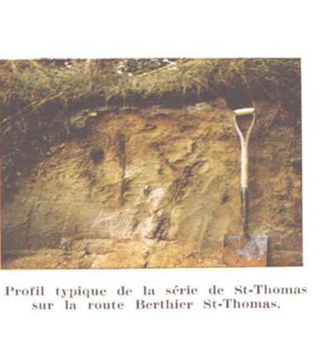
Profil typique de la série de St-Thomas sur la route Berthier St-Thomas.
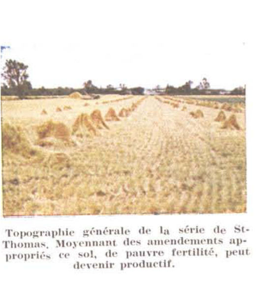
Topographie générale de la série de St-Thomas. Moyennant des amendements appropriés ce sol, de pauvre fertilité, peut devenir productif.Podzol développé sur sable graveleux de Ste-Agathe, Cté Berthier.
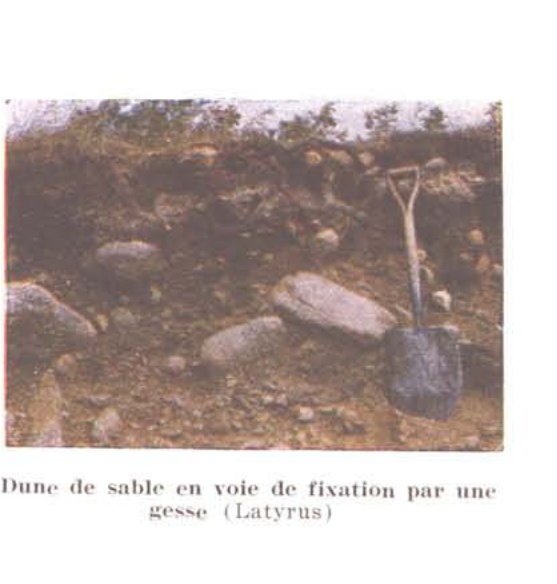
Dune de sable en voie de fixation par une gesse (Lathyrus)
(Photos: Aug. Scott)
Résultats analytiques
Paroisse et numéro de l'échantillon
Berthier (18)
St-Barthélemy (20)
Berthier
Berthier
Berthier
St-Barthélemy
St-Barthélemy
St-Barthélemy
Type
Loam limono-argileux de Berthier
No de laboratoire
24145
24146
24147
24151
24152
24153
Horizon
A
G
C
Ac
Bg
C
Analyse
%
%
%
%
%
%
Détritus
0.0
0.0
0.0
0.5
0.0
0.0
Sable
9.6
35.6
67.0
28.0
6.0
4.0
Limon
54.6
49.2
24.6
46.4
49.0
45.5
Argile
35.8
15.2
8.4
25.6
45.0
50.5
Humidité
2.9
1.1
0.6
Perte au feu
7.5
2.5
1.7
C organique
2.84
0.71
0.64
Matière organique
4.90
1.22
1.11
P2O5
.37
.28
.24
N
.23
.07
.04
pH
5.8
6.7
4.8
6.2
7.2
7.4
Bases échangeables (m.e. par 100 grs. de sol)
Bases totales
17.3
8.0
3.6
Ca
11.15
5.45
2.40
Mg
5.60
2.30
0.91
Mn
0.09
0.02
0.08
K
0.23
0.07
0.10
Hydrogène
4.3
0.3
0.5
(livres par acre)
Ca
4460
2180
960
Mg
1360
560
220
Mn
52
12
42
K
180
60
80
Eléments assimilables
P2O5
.0078
.0078
.0107
Le pourcentage de limon et d'argile, comme l'indique l'analyse, est à peu près équivalent, soit 45% — 45%, et 38% — 34% respectivement sur deux échantillons. Cependant, il arrive assez souvent de rencontrer dans le profil un lit de sable de quelques pouces ou une argile interlaminée de sable.
UTILISATION
L'étendue presque totale de ce type est en prairie. On y cultive du foin depuis des générations. Certaines de ces prairies n'ont pas été levées depuis au-delà de 40 ans. Aussi, le rendement, au dire du cultivateur, va sans cesse diminuant. Comme le troupeau ne comprend que quelques têtes, chez la plupart des fermiers, le foin est exporté.
Nous considérons ce sol comme étant un des types qui possèdent le plus haut degré de fertilité naturelle de la province. S'il était plus rationnellement exploité, nous aurions là des rendements très élevés.
Loam sablo-argileux de Dupas (11,476 acres)
Le loam sablo-argileux de la série Dupas est une alluvion récente reposant sur sable grossier Champlain. Ce dépôt alluvionnaire ne forme qu'une mince couche d'épaisseur variant dans les limites de un à deux pieds.
Là où le dépôt superficiel n'a que quelques pouces à un pied d'épaisseur, une phase a été établie (série Dupas phase mince, Dp-M), sur la carte des sols. Dans les lignes qui suivent, les deux, série et phase, seront décrites comme faisant partie d'une seule unité taxonomique. Toutes deux, d'ailleurs, possèdent des caractères morphologiques communs. Seule l'épaisseur des horizons supérieurs diffère la série de sa phase.
Ce type de sol est localisé du côté est de la rivière Bayonne où il occupe une profondeur de près de 2 milles. De là, il s'étend en bande longeant la route nationale jusqu'au comté limitrophe de Maskinongé. À cet endroit, cette lisière n'a plus que quelques dixièmes de milles de largeur. À cette superficie, il faut ajouter l'Ile aux Castors, Dupas, St-Ignace, etc...
Cette région fait partie de l'immense plaine située en contre-bas de la première terrasse qui sectionne le comté dans toute sa largeur. Tout comme la série de Berthier, celle de Dupas est située à très faible altitude et est submergée annuellement par la crue des eaux du printemps. Le drainage est imparfait à mauvais. La réaction de la surface est acide (pH: 5.4 — 5.6). Le sable sous-jacent est légèrement acide (pH: 6.0 — 6.2).
DESCRIPTION DU PROFIL
Horizons
Profondeurs
Descriptions
Ac
0–8"
Loam sablo-argileux brun foncé (7.5 YR 4/2). Riche en matière organique, structure granulaire, consistance friable, pH: 5.4 — 5.6.
D1g
8–16"
Sable, brun très pâle (10 YR 7/3) à gris olive clair (5 Y 6/2), sans structure, contient beaucoup de mouchetures rouille. Consistance assez compacte durant les périodes de sécheresse. pH: 6.1.
D2g
16"—24"
Sable gris avec nombreuses mouchetures de rouille. pH: 6.0 — 7.0.
Etude pédologique du comté de Berthier
La texture de cette série peut varier de loam sablo-argileux à loam argileux. L'épaisseur de la couche alluviale peut aussi varier entre 8 pouces et deux pieds (plutôt exceptionnelle).
Ce sol est entièrement déboisé. Cependant, de nombreux frênes noirs et rouges s'alignent avec les clôtures. De fertilité naturelle moyenne, cette série de sol s'est révélée très productive là où le cultivateur l'a améliorée par des amendements calcaires et des fumures généreuses.
Notons que le drainage de ces terres a été grandement amélioré par de nombreux cours d'eau effectués par le Ministère de l'Agriculture.
Résultats analytiques
Paroisse et numéro de l'échantillon
Ile Dupas (22)
Type
Loam de Dupas
No de laboratoire
26452
26453
26454
Horizon
Ac
D1
D2
Analyse
%
%
%
Détritus
0.5
0.0
0.0
Sable
54.0
85.5
88.0
Limon
23.6
9.7
7.4
Argile
22.4
4.8
4.6
Perte au feu
4.33
0.05
0.19
C organique
2.53
0.03
0.11
P2O5
.26
.22
.15
N
0.25
0.01
0.02
pH
5.4
6.1
6.0
Bases échangeables
(m.e. par 100 grs. de sol)
Bases totales
12.6
4.2
3.5
Ca
8.7
2.2
2.2
Mg
3.5
1.8
1.1
K
0.33
0.13
0.13
(livres par acre)
Ca
3500
880
880
Mg
880
440
260
K
260
100
100
Éléments assimilables
P2O5
.009
.016
.010
Étude pédologique du comté de Berthier
Résultats analytiques
Paroisse et numéro de l'échantillon
Lavaltrie (2)
Type
Sable fin de Lanoraie
No de laboratoire
22716
22717
22718
Horizon
A1
B
C
Analyse
%
%
%
Détritus
0.2
0.5
1.0
Sable
87.0
95.4
96.8
Limon
7.8
2.4
1.7
Argile
5.2
2.2
1.5
Humidité
0.7
0.2
0.1
Perte au feu
2.7
1.0
0.5
C organique
1.14
0.15
0.13
Matière organique
1.96
0.26
0.22
P2O5
.19
.16
.10
N
.07
.01
.01
pH
5.45
5.85
6.35
Bases échangeables (m.e. par 100 grs. de sol)
Bases totales
0.5
0.2
0.3
Ca
0.30
0.10
0.25
Mg
0.00
0.00
0.00
Mn
0.03
0.01
0.00
K
0.10
0.05
0.05
Hydrogène
2.7
0.4
0.0
(livres par acre)
Ca
120
40
200
Mg
tr.
tr.
tr.
Mn
14
4
2
K
80
40
40
Eléments assimilables
P2O5
.0087
.0096
.0050
Etude pédologique du comté de Berthier
UTILISATION
Si en général, ce sol souffre encore d'égouttement, le cultivateur en a amélioré de grandes superficies par le labour Richard. Le coefficient de fertilité en certains endroits est élevé et on y pratique des cultures assez diversifiées. Ce sol convient très bien à la grande culture et à la culture maraîchère. Le chaulage qui a doublé les rendements sur certaines fermes doit être généralisé sur toute l'étendue de cette série. Trop de cultivateurs, s'adonnent presqu'exclusivement à la culture du foin. Il y aurait probablement avantage d'intensifier l'industrie laitière et l'élevage. Les revenus nets à l'acre seraient, de cette façon, beaucoup plus élevés.
SOLS SUR DEPOTS EOLIENS
Sous cette dénomination, nous excluons le sable “poudreux” qui subit encore l'influence du vent, Contrairement à l'instabilité de ces sables poudreux, le sable “poudré” a été fixé par l'intervention de l'homme, soit par le reboisement ou différentes cultures propres à cette fin.
Ces sables déposés par les rivières et la mer Champlain ont été par la suite, grâce à leur finesse et leur aridité, entraînés par le vent et amoncelés en une suite de molles ondulations.
Les sols développés sur ces sables sont évidemment très jeunes. Ce sont des lithasols ou des sols très peu évolués, (le temps, le climat et la végétation vont graduellement les transformer en podzol). La rapidité des processus d'évolution est favorisée par le micro-relief et par la perméabilité du sable. Une seule série a été identifiée dans ces sols, c'est la série de Lanoraie.
Sable fin de Lanoraie (8,434 acres)
Le sable fin de Lanoraie donne à l'analyse 48%, 49% et 67% de sable fin (.5 — .25 mm) respectivement pour les horizons A, B et C. Ajoutons à ceci un faible pourcentage de sable très fin (.10 — .05mm). C'est donc dire que la finesse de ce sable le distingue nettement de ceux ordinairement rencontrés dans la plaine du St-Laurent.
Au point de vue génétique cette série se classe dans le groupe des lithosols. On le rencontre généralement associé aux dunes de sable, qui en langage pédologique ne sont pas des sols.
La série de Lanoraie est bien drainée et présente beaucoup d'uniformité dans tout le profil. Etant très jeune, l'action des divers agents d'évolution ou formateurs de sols n'ont encore qu'insensiblement participé à son développement.
Ces amas de sable sont surtout localisés au nord de Lanoraie dans les rangs de St-Henri et de St-Jean-Baptiste. Nous en retrouvons quelques milliers d'acres à l'ouest de Berthier et une légère bande à quelque distance du fleuve entre Berthier et Lanoraie.
Là où la végétation semble suivre son cours normal, c'est-à-dire, sans l'intervention de l'homme, le bouleau gris et le pin rouge et blanc se sont implantés partout.
Etude pédologique du comté de Berthier
Description du profil
Horizons
Profondeurs
Descriptions
A00
0–2"
Débris de feuilles et d'aiguilles de pin non décomposées, brun rouge foncé (5 YR 3/4).
A0
2–3"
Débris de matière organique partiellement décomposée, gris olive (5 Y 5/2).
A1
3–6"
Sable fin, brun (10 YR 5/2) à brun gris (2.5 Y 5/2) pH: 5.4
B21
6–9"
Sable fin, brun pâle (10 YR 6/3) à brun jaune (10 YR 5/6) pH: 5.8
B22
9–15"
Sable fin, jaune pâle (2.5 Y 7/4) à jaune brun (10 YR 6/6). Cette teinte à l'état humide devient olive (2.5 Y 4/4), pH: 5.8.
C
15"+
Sable fin plus compact que les horizons précédents, brun pâle (10 YR 6/3) à gris clair (10 YR 7/2) à l'état humide. pH: 6.3.
La surface de ces sols est fortement acide, cependant, la roche-mère ne l'est que faiblement. L'épaisseur de l'horizon A et sa teneur en M.O. varient suivant les façons culturales auxquelles cette couche a été soumise.
Utilisation
Le sable de Lanoraie représente pour la région, avec celui de St-Thomas, le sol idéal pour la culture du tabac à cigarettes. Aussi, ces sols sont-ils en grande partie consacrés à la culture du tabac jaune. Lorsque les pluies sont bien réparties durant la saison de végétation, les rendements sont très élevés. La fertilité de ces sables étant relativement faible, on ne saurait difficilement les utiliser à d'autres fins. Un généreux apport de matière organique sous forme de fumier ou d'enfouissement d'engrais vert augmentera leur rendement..
Notons aussi qu'une superficie de plusieurs mille acres a été reboisée par du pin blanc, rouge et Sylvestre. Ce mode d'utilisation de ces sables constitue un placement ou investissement, lequel vaudra pour l'exploitant, dans quelques années, un revenu probablement supérieur à toute autre exploitation sur ce type de sable.
Etude pédologique du comté de Berthier
SOLS SUR ALLUVIONS CHAMPLAIN ET DELTAIQUES
Si l'on fait exception de la tranche de terrain fluviatile longeant le littoral du fleuve de l'est à l'ouest du comté, les alluvions Champlain couvrent à peu près toute la plaine en amont et en aval de Berthier, s'étendant du chemin de fer jusqu'au rebord des Laurentides.
Les sols provenant des sédiments Champlain ont été groupés suivant un ordre déterminé par leur texture, résultant de leur mode de dépôt. Les sols dérivés de sable siliceux, situés au nord des paroisses de Lanoraie et Lavaltrie se sont déposés selon toute probabilité, lors du dernier stage de la mer Champlain. Les sols argileux de la série de Ste-Rosalie, qui recouvrent la grande plaine (app. 20 milles carrés), sise au nord de la terrasse reliant St-Cuthbert, St-Viateur, St-Barthélemy et Maskinongé, se sont accumulés en eau calme et profonde. De même origine, les argiles riches en matière organique et calcaires à 3 pieds (série St-Urbain) occupent une lisière au sud des villages de St-Cuthbert, St-Viateur et St-Barthélemy.
Sols dérivés de sable siliceux
(quartz, feldspaths, ferromagnésiens, etc...)
Les sols formés aux dépens de sables siliceux comprennent huit types, dont la différenciation des profils est surtout liée à la topographie et à la finesse du sable. Ces divers types de sols appartiennent aux groupes génétiques suivants : podzol, podzol à gley et semi-tourbeux.
Sable de Sorel (83.00 acres)
Le sable de Sorel, identifié dans la paroisse de Lanoraie, ne couvre que trois petites étendues isolées, soit une superficie de 83.00 acres en tout. La topographie vallonnée et la nature sableuse (90%) de ce sol lui donne un drainage excessif et de très pauvre fertilité. En terrains déboisés, ces sols deviennent facilement la proie du vent et donnent naissance aux dunes.
La valeur agricole et la faible étendue de cette série nous dispense de la décrire davantage. Pour de plus amples détails et descriptions du profil, voir rapport des sols du comté de Châteauguay, page 67.
Sable fin de St-Thomas (4.922 acres)
Le sable fin de St-Thomas se rencontre principalement dans les derniers rangs situés au nord des paroisses de Lavaltrie et Lanoraie. Il est habituellement associé aux sables fins de la série de Lanoraie. Ces sols ont été formés aux dépens des dépôts deltaïques abandonnés par des ri-
Etude pédologique du comté de Berthier
vières lors du retrait de la mer Champlain. Ces dépôts uniquement constitués de sable siliceux, forment une plaine unie à légèrement ondulée, dont l'altitude se maintient aux environs de 75 pieds. Le drainage externe en raison de sa texture sableuse, est plutôt rapide tandis que le drainage effectif est bon. On note toutefois, que la texture fine (80% et plus 25 - .10mm.) favorise un bon pouvoir de rétention de l'eau. L'érosion éolienne présente toujours un danger pour ces sables fins.
Cette série appartient au groupe génétique des podzols. Le profil est très bien développé. L'épaisseur de l'horizon A2 dénote un lessivage intense. La teinte rouge des horizons inférieurs indique une bonne circulation d'air et une nappe d'eau loin de la surface.
Notons que la plus grande superficie de ce type de sol est déboisée. Cependant, là où il n'y a pas eu de défrichement, la végétation arborescente est surtout constituée de pins et de bouleaux gris avec un peu d'épinettes.
Résultats analytiques
Paroisse et numéro de l'échantillon
St-Cuthbert (24)
Type ....................
Sable de Sorel
No de laboratoire ........
26460
26461
26462
26463
26464
Horizon ....................
A
B2-1
B2-2
B2-3
C
Analyse ....................
%
%
%
%
%
Détritus ....................
2.5
0.5
9.0
24.0
1.0
Sable ....................
83.5
90.5
93.6
93.5
94.2
Limon ....................
13.4
5.7
4.6
5.3
4.0
Argile ....................
3.1
3.8
1.8
1.2
1.8
pH ........................
6.0
6.5
6.5
6.3
6.4
Étude pédologique du comté de Berthier
Résultats analytiques
Paroisse et numéro de l'échantillon
Lanoraie (1)
Type
Sable de St-Thomas
No de laboratoire
22712
22713
22714
22715
Horizon
A1
B21
B22
C
Analyse
%
%
%
%
Détritus
0.5
0.0
0.0
0.2
Sable
88.5
92.4
93.4
96.8
Limon
6.9
4.2
4.2
1.6
Argile
4.6
3.4
2.4
1.6
Humidité
0.7
0.6
0.4
0.2
Perte au feu
2.4
2.0
1.3
0.6
C organique
0.95
0.56
0.31
0.26
Matière organique
1.64
0.96
0.53
0.45
P2O5
.24
.30
.30
.17
N
.05
.03
.02
.01
pH
5.50
6.05
6.25
6.55
Bases échangeables
(m.e. par 100 grs, de sol)
Bases totales
0.9
0.8
0.6
0.4
Ca
0.60
0.60
0.50
0.30
Mg
0.04
0.04
0.00
0.00
Mn
0.02
0.01
0.01
0.01
K
0.10
0.05
0.05
0.05
Hydrogène
1.8
1.1
0.3
0.0
(livres par acre)
Ca
240
240
200
120
Mg
10
10
Mn
8
6
4
4
K
80
40
40
40
Eléments assimilables
P2O5
.0090
.0121
.0114
.0071
Étude pédologique du comté de Berthier
DESCRIPTION DU PROFIL
Horizons
Profondeurs
Descriptions
A00
1–2"
Litière de feuilles et d'aiguilles de pin, de débris de végétaux non décomposés. Brun Foncé (7.5 YR 3/2) à brun gris très foncé (10 YR 3/2).
A0
½–1" —
Débris de matière organique bien décomposés, brun très foncé. Sable fin, brun foncé (7.5 YR 3/2) à brun gris
A1
1–8"
très foncé (10 YR 3/2). pH: 5.5. Sable fin, blanc à gris cendré.
A2
1" +
B21
1"—3"
Sable fin, brun foncé (5 YR 4/4) à rouge jaune (5 YR 4/8) avec légère concrétion de orstein. pH: 6.0
B22
6"—7"
Sable fin, jaune olive (2.5 Y 5/6) à jaune rouge (7.5 YR 6/6).
C1
3"—5"
Sable fin à moyen, jaune brun (10 YR 6/6) à olive pâle (5 Y 6/4). pH: 6.5.
C2
24" + —
Sable fin à moyen, gris pâle (2.5 Y 7/2) à olive (5 Y 5/4) pH: 6.5.
Ce sable est homogène dans toute l'épaisseur du profil et ne contient pas de cailloux. La réaction de la surface est fortement acide tandis que la roche-mère est faiblement acide.
UTILISATION
Le sable fin de St-Thomas contient très peu de colloïdes minéraux et est généralement dépourvu de matière organique. C'est donc dire qu'il ne peut convenir qu'à certaines cultures spécialisées. Dans la région concernée, ce type de sol a été sensiblement amélioré par de bonnes doses de fumier et d'enfouissement d'engrais vert. La culture du tabac jaune s'est implantée dans cette région depuis quelques années. La qualité et les rendements obtenus sur ces sols ont révolutionné l'économie agricole de toute cette région. De ces vastes champs incultes et désolés, les cultivateurs en ont fait une région des plus prospères et des plus productives, grâce à la culture du tabac jaune. Cependant, le danger d'érosion éolienne qui menace toujours ces sols exige beaucoup de précaution de la part du cultivateur. On a réussi à maintenir ce sol en place en y incorporant le plus possible de matière organique, en y établissant la culture en damier et au moyen de brise-vent appropriés.
Sable moyen de Uplands (1,132 acres)
Les sables de la série Uplands occupent une superficie de 1,132 acres aux limites ouest de la paroisse de Lavaltrie. Ce sable moyen fait suite aux sables plus fins de la série de Lanoraie et de St-Thomas.
Le relief de ces dépôts sableux présente de légères ondulations. L'altitude ne dépasse pas 75 pieds. Le drainage en raison de la perméabilité du sable, est bon. Les eaux de précipitation s'infiltrent facilement dans
le sable et se perdent dans les eaux souterraines. Les quelques spécimens de végétation primitive de ces sols, comme dans tous les sables, indiquent que les essences forestières se composaient autrefois, surtout de pins, de bouleaux, de sapins, de chênes et de pruches. Les vents desséchants soulèvent les sables. Ce sont ces dunes que l'on observe le long de la route entre Lanoraie et Lavaltrie.
Ces sables ont été considérablement lessivés. Ils appartiennent au groupe des Podzols.
DESCRIPTION DU PROFIL
Horizons
Profondeurs
Descriptions
Ac
0–6"
Sable moyen, assez riche en matière organique, teinte brun rouge foncé (5 YR 3/2) à gris foncé pâle (5 Y 6/3), pH: 6.0.
A2
trace
B21
6–10"
Sable moyen, meuble, brun (7.5 YR 5/2) à brun rougeâtre pH: 5.6.
B22
10–17"
Sable grossier, meuble, brun vif (7.5 Y 5/6) à jaune olive (2.5 Y 6/6), pH: 5.9.
C
17"+
Sable grossier, brun jaune (10 YR 5/6) à olive pâle (5 Y 6/3), pH: 6.0.
Les différentes teintes des horizons ont été observées lorsque le sol était humide. Le mica abonde dans ces sables. On remarque exceptionnellement des concrétions ferrugineuses discontinues dans la zone d'accumulation (B21). Ces sols, très ouverts, ne contiennent pas toujours autant de matière organique que l'indique la description précédente. La surface est très acide et souffre parfois d'excès d'égouttement.
Résultats analytiques
Paroisse et numéro de l'échantillon
Lavaltrie (3)
Lavaltrie (4)
Type
Sable de Uplands
No de laboratoire
22719
22720
22721
22722
22723
22724
22725
Horizon
Ac
B21
B22
C
Ac
B
C
Analyse
%
%
%
%
%
%
%
Détritus
0.0
3.0
2.5
0.5
2.0
0.3
2.0
Sable
83.5
86.5
90.4
92.4
84.0
92.4
92.6
Limon
9.3
6.7
5.0
4.6
10.1
4.6
4.0
Argile
6.2
6.8
4.6
3.0
5.9
3.0
3.4
pH
5.25
5.70
8.95
6.05
5.30
5.60
6.00
UTILISATION
Les sables de Uplands étant naturellement pauvres, leur exploitation requiert beaucoup de soin et d'engrais tant organique qu'inorganique. Encore ne peuvent-ils être adaptés qu'aux cultures spécialisées telles que le tabac, les patates et autres cultures maraîchères. La grande culture ne convient pas à ces sols, les rendements sont trop faibles.
Sable de St-Jude (2,454 acres)
Les sols de la série de St-Jude dérivent de sables siliceux résultant de dépôts fluvio-marins. Ces sables de drainage imparfait se localisent presqu'en entier à l'ouest du comté, près du fleuve.
De grosseur moyenne ces sables ont été très lessivés. Le profil est très développé. L'horizon A2 est épais, il atteint parfois jusqu'à 7 pouces de profondeur. Le relief présente l'allure d'une plaine presqu'horizontale. On le rencontre aussi dans des endroits plus déprimés. La présence d'argile à quelques pieds de profondeur contribue à maintenir la nappe d'eau assez élevée.
La série de St-Jude est le membre catenaire imparfaitement drainé des séries de Sorel, Ste-Sophie et St-Samuel. Les essences forestières qui peuplent ce type de sol sont assez complexes. On y rencontre le bouleau, la plaine, l'aulne, le hêtre et la plupart des conifères.
DESCRIPTION DU PROFIL
Horizons
Profondeurs
Descriptions
Ao
0 — ½"
Horizon principalement constitué de mousses et d'humus. (mor.)
A1
½ — 3"
Horizon peu minéralisé, texture sableuse, constitué d'un humus acide (mor) de teinte noire. pH: 5.4.
Sable brun jaune foncé (10 YR 4/4), humide, Horizon localement durci en un "Ortstein" ferrugineux, brun jaunâtre (10 YR 5/4, humide) grenu. pH: 5.8 — 6.0.
B22—g2
12 — 20"
Sable rouillé, brun jaune pâle à gris clair (10 YR 6/8 et 10 YR 7/2, humide) moins de taches de rouille que ci-dessus, grenu. pH: 6.5 — 6.9.
Cg
20 — 30"
Roche-mère: sable, gris clair (10 YR 7/1), avec des traînées plus foncées, dues à la présence de mica noir et autres ferromagnésiens. Horizon meuble et perméable. pH: 6.5 — 7.0.
D
30" et plus
Substratum: argile gris bleuté, neutre à calcaire, de consistance très plastique et imperméable.
UTILISATION
Ce sable mal égoutté et peu fertile présente peu d'importance économique pour le comté. D'ailleurs, presque toute la superficie de ce sol est encore actuellement boisée.
Sable fin de L'Achigan (3,184 acres)
Le sable fin de la série de L'Achigan couvre une superficie de 3,184 acres dans les paroisses de Lanoraie et de Lavaltrie. Il forme une bande de largeur variable aux abords presque immédiats du fleuve entre ces deux paroisses. On ne le rencontre pas ailleurs dans le comté. Il est toujours en association avec les séries de sables fins de Lanoraie et de St-Thomas. La topographie est celle d'une plaine unie à légèrement déprimée. Le drainage est imparfait. C'est le membre caténaire imparfaitement drainé de la série de St-Thomas.
La formation de ces étendues de sable fin remonte vraisemblablement à l'époque du retrait de la mer Champlain. Ce sont des dépôts fluvio-marins ou deltaïques. La végétation naturelle dans les parties non déboisées se compose d'érables, mélèzes, pruches, hêtres, amélanchiers, etc...
DESCRIPTION DU PROFIL
Horizons
Profondeurs
Descriptions
A0
0–2"
Débris de feuilles mortes partiellement décomposées. pH: 4.1.
A1
2–6"
Sable, brun rouge (5 YR 3/3) foncé, sans structure. pH: 4.2.
A2
6–7"
Sable gris rose, n'existe parfois qu'à l'état de trace, mais pouvant parfois atteindre de 4 à 6" d'épaisseur. Se présente aussi en poches très irrégulières.
B21
7–14"
Sable brun rouge (5 YR 4/4) "orterde" podzol humique, devenant dur lorsque sec On y rencontre parfois une structure nuciforme. pH: 4.9.
B2G
14–22"
Sable rouge jaune (5 YR 5/8) contenant beaucoup de taches de gley, sans structure. pH: 5.2.
C
22" +
Sable gris clair (10 YR 7/2). pH: 5.5.
La réaction fortement acide et la déficience en colloïdes minéraux de ces sables en font un sol extrêmement pauvre.
UTILISATION
Ce sol est demeuré en grande partie boisé. On a replanté en pin Sylvestre les étendues antérieurement défrichées.
Cependant, quelques-unes de ces terres sont actuellement exploitées avec plus ou moins de succès. Ces sables ont besoin de chaulage et d'une forte application d'engrais de ferme ou d'enfouissement d'engrais vert. Le drainage est aussi recommandé. Ajoutons toutefois, qu'un drainage excessif dans ce type de sol y provoquerait la formation d'un banc dur qui gênerait la circulation de l'air, l'infiltration de l'eau et la pénétration des racines.
Étude pédologique du comté de Berthier
Résultats analytiques
Paroisse et numéro
de l'échantillon
Lavaltrie
(23)
Type ............................
Sable de L'Achigan
No de laboratoire ..................
26455
26456
26457
26458
26459
Horizon ...........................
Ao
A1-A2
B2-1
B2-g
C
Analyse ...........................
%
%
%
%
%
Détritus ......................
0.0
0.5
0.0
0.0
0.0
Sable .........................
M.0
86.0
92.8
95.4
96.2
Limon .........................
—
10.0
3.7
2.4
2.1
Argile ........................
—
4.0
3.5
2.2
1.7
Humidité ......................
8.0
0.7
0.8
0.5
0.3
Perte au feu ..................
56.5
4.3
2.8
1.5
0.9
C organique ...................
32.37
3.01
1.10
0.49
0.25
Matière organique .............
55.81
5.20
1.91
0.84
0.43
P₂O₅ ..........................
.30
.06
.14
.12
.11
N .............................
1.67
.12
.04
.02
.01
pH ............................
4.1
4.2
4.9
5.2
5.5
Bases échangeables .................... (m.e. par 100 grs. de sol)
Bases totales ...............
13.09
0.5
0.4
0.4
0.4
Ca ......................
10.25
0.30
0.25
0.20
0.25
Mg ......................
0.81
0.08
0.00
0.00
0.00
Mn ......................
0.02
0.00
0.00
0.01
0.01
K .......................
1.67
0.07
0.10
0.10
0.07
Hydrogène .....................
7.0
6.4
6.1
2.2
0.7
(livres par acre)
Ca ..........................
4100
120
100
80
100
Mg ..........................
440
20
tr.
tr.
tr.
Mn ..........................
12
0
2
4
4
K ...........................
1300
60
80
80
60
Éléments assimilables
P₂O₅ ........................
.0076
.0085
.0125
.0104
.0100
Loam sableux de St-Samuel (7,597 acres)
Le loam sableux de St-Samuel couvre une superficie de 7,597 acres dans le comté de Berthier. Ce type est issu d'une roche-mère sableuse. On le rencontre dans les paroisses sises aux abords du fleuve (Lavaltrie, Lano-raie et Berthier) ainsi que l'Île Dupas et St-Ignace de Loyola.
Ces dépôts de sable Champlain recouvrent une plaine sub-horizontale ainsi que des dépressions où l'eau séjourne pendant presque toute l'année.
Le drainage est donc mauvais. Ce type de sol appartient au groupe génétique des semi-tourbeux.
La composition végétale aux endroits non déboisés comprend le bouleau gris, le cédre, le sapin, le mélèze, l'aulne, etc...
Sable moyen à grossier, gris à olive pâle (5 Y 6/3) avec taches de gley brun jaune (10 YR 5/6). Ces taches sont parfois disposées en lit. pH: 6.0 – 7.0.
Cg
18 et plus
Sable grossier, gris (5 Y 5/1), sans structure, parfois tassé. pH: 6.3 – 7.0.
D
—
Substratum d'argile alcaline Champlain à quelques pieds.
La réaction de la roche-mère est neutre à alcaline. Cette particularité de la série de St-Samuel est exceptionnelle et ne s'est rencontrée, à date que dans le comté de Berthier.
UTILISATION
L'épaisseur de la matière organique à la surface est très variable. La couche sous-jacente est très mal égouttée. La valeur agricole est faible et le drainage reste à la base de toute amélioration de ce type de sol.
Les sables du complexe de St-Amable (1,075 acres)
Les sables du complexe de St-Amable occupent une très faible superficie, soit 1,075 acres dans le comté de Berthier. Deux îlots de ces sables ont été observé au nord de la paroisse de Lavaltrie. Ajoutons à ceci, quelques petites étendues dans la paroisse de Berthier et de St-Barthélémy.
Résultats analytiques
Paroisse et numéro de l'échantillon
Berthier (6)
Ile Dupas (21)
Berthier (7)
22729
22730
22731
24154
24155
24156
24157
22732
22733
22734
Type
Loam sableux de St-Samuel
No de laboratoire
22729
22730
22731
24154
24155
24156
24157
22732
22733
22734
Horizon
Ac
G
C
Ac
Bg
G
C
Ac
G
C
Analyse
%
%
%
%
%
%
%
%
%
%
Détritus
0.1
0.0
0.0
0.0
0.0
0.0
0.0
0.0
0.0
0.0
Sable
69.0
85.0
68.0
65.0
81.0
73.0
91.0
46.0
80.0
88.5
Limon
22.2
11.4
25.8
24.0
12.1
20.3
5.6
43.6
15.6
8.5
Argile
8.8
3.6
6.2
16.8
6.9
6.7
3.4
10.4
4.4
3.0
Humidité
1.1
0.2
0.5
Perte au feu
5.2
0.7
1.2
C organique
2.59
0.06
0.38
Matière organique
4.41
0.10
0.66
P2O5
.27
.18
.21
N
.18
.01
.02
pH
5.75
6.15
6.20
5.5
6.6
7.3
6.3
6.75
6.85
7.15
Bases échangeables .................... (m.e. par 100 grs. de sol)
Bases totales
6.0
1.4
4.3
Ca
4.00
0.95
2.45
Mg
1.56
0.16
1.56
Mn
0.07
0.01
0.01
K
0.33
0.20
0.15
Hydrogène
3.7
0.0
0.0
(livres par acre)
Ca
1600
380
980
Mg
380
40
380
Mn
38
6
6
K
260
160
120
Eléments assimilables
P2O5
.0085
.0067
.0078
Sable fin de la série de St-Thomas. Le long de la route Berthier-Joliette. (Page 55)Sable très mal égoutté de la série de St-Louis. Paroisse de St-Charles de Mandeville. (Page 89)
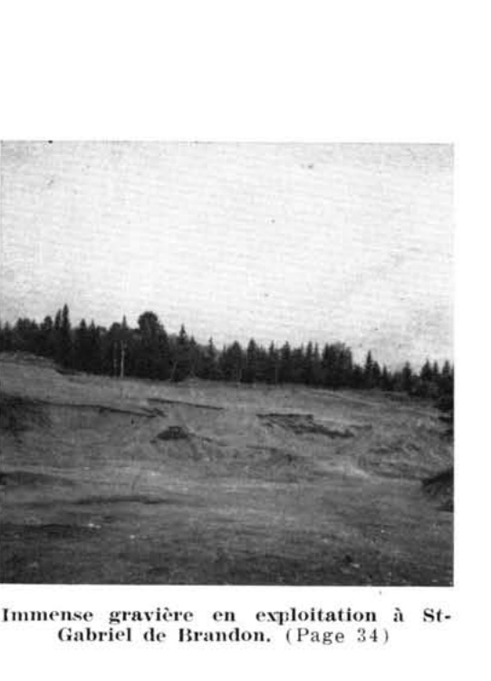
Immense gravière en exploitation à St-Gabriel de Brandon. (Page 34)Glissement de terrain le long de la rivière Mastigouche, illustrant dépôt de sable grossier (série Morin) reposant sur argile varvée. St-Charles de Mandeville. (Page 84)
Etude pédologique du comté de Berthier
Fig. 8 — INFLUENCE DE LA TOPOGRAPHIE ET DU PLAN D'EAU SUR L'ÉVOLUTION DES SOLS SABLONNEUX
CONVEXEPENTEHORIZONTALECONCAVE
Sols du complexe de St-Amable.
Sable de SOREL (PODZOL)
Sable Limoneux de Ste-SOPHIE (PODZOL)
Limon Sableux de St-JUDE (PODZOL A GLEY)
Sable Humifère de St-SAMUEL (SEMI-TOURBEUX)
Ce complexe groupe quatre séries de sol dont les limites très diffuses rendent leur délimitation à peu près impossible sur le champ. Les caractères morphologiques de ces différentes séries étant essentiellement différentes, il va de soi que la topographie et le drainage de ces sables varient sensiblement d'un endroit à l'autre. Le drainage est bon sur les élévations et mauvais dans les dépressions.
La texture de ces sols est très sableuse. La teneur en colloïdes minéraux fait presque totalement défaut dans ces sols. La réaction de la surface est fortement à moyennement acide.
La figure (8) illustre les caractères morphologiques de divers types qui composent ce complexe. Les trois premiers (Sorel, Ste-Sophie et St-Jude) appartiennent au groupe génétique des podzols, caractérisés par l'horizon A2 bien développé et fortement décalifié. Le dernier (St-Samuel) est classé comme semi-tourbeux. Riche en humus, plus mal égoutté, ce type de sol est moins acide que les précédents.
UTILISATION
Ces sables de pauvre fertilité sont peu propices à la grande culture. Moyennant de généreux apports de fumier, chaux et engrais chimique, il est possible d'améliorer leur potentiel de productivité et ainsi en faire des sols très bien adaptés à bon nombre de cultures spécialisées.
Sols dérivés de sédiments argileux non calcaires
Les éléments fins argileux non calcaires déposés au sein de la mer Champlain ont donné naissance à deux séries de sol selon le modelé topographique : la série de Ste-Rosalie et la série de Rideau.
La roche-mère de ces sols est nettement argileuse (70% à 80% d'argile). La série de Ste-Rosalie occupe les espaces les plus planes de la plaine au sud des Laurentides, tandis que la série de Rideau côtoie ou occupe les rebords ravinés des ruisseaux et des rivières de cette même plaine.
En raison du pouvoir de rétention d'eau très prononcé, la nappe phréatique est toujours à faible profondeur de sorte que l'argile demeure constamment humide.
Ces sols appartiennent au groupe génétique des « gley ». Leur richesse en colloïdes argileux, en bases échangeables et en humus bien décomposé classent ces sols parmi les plus fertiles du comté.
Résultats analytiques
Paroisse et numéro de l'échantillon
St-Barthélemy (15)
Type
Argile de Rideau
No de laboratoire
24132
24133
24134
Horizon
Ac
Bg
C
pH
5.4
5.6
6.5
Analyse
%
%
%
Détritus
0.5
0.0
0.0
Sable
28.0
10.0
7.0
Limon
32.0
25.0
22.0
Argile
40.0
65.0
71.0
Argile de Rideau (11,206 acres)
L'argile de Rideau occupe le rebord de cette terrasse qui longe le rang d'York et relie les villages de St-Cuthbert, St-Barthélemy pour se perdre dans Maskinongé. Cette terrasse est fortement entaillée par une suite de ravins ou coulées profondes qui s'enfoncent à l'intérieur des terres et pénétrent jusqu'au rang de St-Joachim. L'argile a donc, dans cette partie, un relief très accidenté. Cependant, une bande étroite de Rideau borde les Laurentides à une altitude de 200 à 250 pieds. A cet endroit, la topographie est moins vallonnée et moins accidentée.
Cette argile lourde comme celle de Ste-Rosalie est un dépôt de la mer Champlain. Sa situation topographique en fait un sol très sujet à l'érosion. Chaque printemps entraîne des tonnes de sols arables, élargissant les coulées, creusant les ravins. Quantité de terre fertile est ainsi entraînée et perdue chaque année. Aussi l'argile de Rideau contient relativement peu d'humus.
La texture très fine de ce sol lui donne un drainage interne plutôt lent, cependant, le drainage externe ou de surface est rapide. Ce sol ne souffre donc pas, en général, d'égouttement.
Ces terres sont toutes déboisées, sauf quelques lisières de feuillus (ormes, senelliers, aulnes, etc...) en bordure des coulées.
DESCRIPTION DU PROFIL
Horizons
Profondeurs
Descriptions
Ac
0–6"
Argile faiblement humifère, de teinte gris clair (2.5 Y 7/2), structure granulaire, consistance moyennement friable. pH: 5.4 — 5.7.
A2
trace
Argile faiblement lessivée. Structure granuleuse.
B2g
6–24"
Argile très lourde, de teinte gris-brun clair (2.5 Y 6/2) à olive (5 Y 4/2). Avec traînée blanchâtre et faiblement mouchetée de rouille à la base, consistance compacte. pH: 5.6 — 6.0.
C
24" et plus
Argile très lourde (roche-mère), gris brun clair (2.5 Y 6/2) à gris olive (5 Y 5/2), structure polyédrique grossièrement développée, consistance très plastique. pH: 6.4. — 6.6.
Ce sol se dessèche facilement, forme des mottes et devient très compact et imperméable. On remarque habituellement des traînées blanchâtres dans la partie supérieure du profil. Sa texture fine est constante sauf au rebord immédiat des terrasses et sur une légère bande du rebord des Laurentides où nous tolérons une légère variation dans la texture de la surface de cette série. A l'intérieur des terres, le drainage est plus lent; la forte teneur en argile (60%) retient l'eau et la partie inférieure du sol devient bleu verdâtre (gley).
UTILISATION
Ces terres possèdent une bonne valeur agricole pour la grande culture et l'industrie laitière. Cependant, la surface de ce sol étant fortement acide et déficiente en humus, le chaulage et l'enfouissement d'engrais vert ou un bon apport de fumier de ferme amélioreraient grandement la fertilité et l'état physique de ce sol.
Argile de Ste-Rosalie (9.619 acres)
La série de Ste-Rosalie est une argile lourde d'origine Champlain. Ce sédiment argileux occupe toute la partie haute de la plaine de Berthier s'étendant du rebord des Laurentides, au niveau de 175 pieds, jusqu'à la terrasse qui traverse le comté en passant par les villages de St-Cuthbert, St-Viateur et de St-Barthélemy.
Cette série se trouve en plaine unie quelque peu ondulée et légèrement inclinée vers le fleuve. Le drainage est très lent parfois mauvais, à cause de l'horizontalité du terrain et du sous-sol compact et imperméable; la nappe phréatique est élevée et le solum gorgé d'eau; tout le profil est bariolé de taches rouilles. Les sols à l'état vierge sont à peu près inexistants. Les quelques vestiges d'arbres conservés sont l'érable, le frêne, le tilleul et l'orme.
DESCRIPTION DU PROFIL
Horizons
Profondeurs
Descriptions
Ac
0–7"
Argile brun gris foncé (2.5 Y 4/2) à gris foncé (10 YR 4/1), humifère, structure granuleuse, consistance friable devenant très compacte à l'état sec. pH: 6.0 — 7.0.
A2g
7–11"
Argile lourde, gris clair (10 YR 7/1) mouchetée de rouille. Consistance plastique.
B2g
11–18"
Argile lourde, de teinte gris brun clair (10 YR 6/2) à olive (5 Y 5/3), structure massive, beaucoup de mouchetures de rouille à la partie supérieure, consistance très plastique. pH: 6.8 — 7.0.
C
18"
Roche-mère: argile très lourde, gris olive (5 Y 5/2 — 4/2) à grise (10 YR 6/1). Structure massive consistance très plastique. Constamment humide. pH: 7.0 — 7.3.
Il existe de légères variations dans la teneur en matière organique suivant qu'on la rencontre dans les parties un peu déprimées ou au sommet des ondulations. A quelques endroits, le sol arable est plus sableux.
Etude pédologique du comté de Berthier
Cette série comprend donc deux types. Le premier, celui qui recouvre la plus grande superficie, est une argile lourde. L'autre, dont la roche-mère est semblable, contient dans son solum des couches interstratifiées de sable. Sur la carte, nous l'avons noté par abréviation Rs.
Le pH est assez élevé dans tout le profil, celui de l'horizon A peut varier entre 6.0. — 7.0. Les horizons inférieurs ont une réaction alcaline comme l'indique les résultats analytiques. Ce sol lessivé est riche en bases échangeables et en éléments assimilables.
UTILISATION
Toute cette vaste plaine convient très bien à la grande culture et à l'industrie laitière. Les quelques essais sur la betterave à sucre semblent donner de très bons résultats. Les cultures de choux-de-Siam, de blé-d'Inde fourrager, de lin donnent aussi d'excellents résultats.
Il importe avant tout, dans cette argile lourde, d'améliorer les conditions de drainage au moyen de labour en planches rondes (labour Richard) ou par l'établissement de drains souterrains.
L'enfouissement d'engrais vert et l'application de fumier et de chaux amélioreraient beaucoup l'état physique de cette terre lourde. Le phosphore étant l'élément le plus déficient de ces sols, ils bénéficieraient d'une application périodique de cet engrais. Le travail du sol doit aussi se faire en temps opportun: il doit être ni trop sec ni trop humide.
Résultats analytiques
Paroisse et numéro de l'échantillon : St-Norbert (13) — St-Barthélemy (14)
Type : Argile de Ste-Rosalie
No de laboratoire
24126
24127
24128
24129
24130
24131
Horizon
Ac
Bg
C
Ac
Bg
C
Analyse
Détritus
0.0
0.0
0.0
1.5
0.0
0.0
Sable
16.0
12.0
8.0
24.0
13.0
11.0
Limon
45.0
28.0
27.0
50.0
33.0
29.0
Argile
39.0
60.0
65.0
26.0
54.0
60.0
Humidité
2.3
2.7
2.3
Perte au feu
7.8
3.6
3.3
C organique
3.04
0.36
0.20
Matière organique
5.24
0.62
0.34
P2O5
.25
.31
.33
N
.22
.04
.04
pH
6.0
7.0
7.3
7.6
6.9
7.0
Bases échangeables (m.e. par 100 grs. de sol)
Bases totales
14.0
22.9
22.2
Ca
8.40
9.55
8.70
Mg
5.10
11.90
11.90
Mn
0.04
0.02
0.01
K
0.30
0.51
0.79
Hydrogène
4.1
0.0
0.0
(livres par acre)
Ca
3360
3820
3480
Mg
1200
2900
2900
Mn
20
10
6
K
240
400
620
Eléments assimilables
P2O5
.0029
.0045
.0060
Argile sableuse de Ste-Rosalie (4,192 acres)
Cette argile possède à peu près les mêmes caractéristiques que celle de l'argile de Ste-Rosalie. Elle n'en diffère que par une texture plus sableuse de l'horizon de surface. Nous rencontrons une dizaine d'îlots de cette argile sableuse éparpillés çà et là dans cette plaine qui englobe les paroisses de St-Cuthbert, St-Viateur, St-Barthélemy et Berthier.
La présence du sable confère au sol des propriétés physiques désirables; le sol est plus ouvert, plus meuble, moins sujet au retrait. Bref, il est plus facile à travailler que l'argile lourde et convient mieux aux cultures sarclées.
Sols dérivés de sédiments argileux calcaires
Les sols dérivés de sédiments argileux calcaires ont, comme les deux séries précédentes, une texture très fine. La caractéristique fondamentale et aussi celle qui les distingue des précédentes, c'est leur haute teneur en carbonate de calcium. Ces sols font habituellement effervescence au contact de l'acide chlorhydrique à trois pieds de profondeur. Une seule série a été identifiée dans ces dépôts Champlain: la série de St-Urbain.
Argile de St-Urbain (6,592 acres)
La série de St-Urbain est constituée d'une argile très lourde et très riche en matière organique. Cette alluvion, d'origine Champlain, couvre une partie de la plaine située à l'est de Berthier. Cette large bande d'argile, d'une superficie d'environ dix milles carrés, s'étend de St-Cuthbert en passant au sud des villages de St-Viateur et St-Barthélemy, pour se perdre dans le comité limitrophe de Maskinongé. Ceci englobe toutes les terres humifères situées entre la route nationale et la première terrasse sise aux limites mêmes des villages ci-haut mentionnés.
Toute cette étendue constitue une plaine unie ou légèrement déprimée dont l'altitude ne dépasse guère 25 pieds, celle du fleuve. Conséquemment, le sol possède un drainage externe mauvais. La forte teneur en argile et l'imperméabilité du sous-sol empêche l'infiltration de l'eau et rend l'égouttement nécessairement très lent et très difficile.
L'épaisse couche humifère et friable possède une réaction légèrement acide à alcaline. Le sous-sol est compact et calcaire.
Toutes ces terres sont déboisées. On voit quelques ormes seulement au fronteau des terres et le long des clôtures. Cette argile ne contient aucune pierre et est homogène dans toute l'épaisseur du profil.
DESCRIPTION DU PROFIL
Horizons
Profondeurs
Descriptions
Ac
0—9"
Argile brun gris très foncé (2.5 Y 3/2) à noire (10 YR 5/1), fortement humifère, structure granuleuse, consistance très friable et très meuble. pH: 6.6 — 6.9.
G
9—26"
Argile très lourde, gris foncé (5 Y 4/1) à gris olive (5 Y 5/2), structure massive, consistance compacte. Fait parfois effervescence à la base de cet horizon. pH: 7.4.
Cca
26" et plus
Roche-mère: argile très lourde, gris olive (5 Y 4/2) à gris clair (5 Y 7/1), calcaire. Structure massive, très plastique. Réagit presque toujours au contact du HCl dilué: pH: 7.5 — 8.3.
Résultats analytiques
72
Paroisse et numéro de l'échantillon
St-Barthélemy (12)
St-Viateur (11)
Type
Argile de St-Urbain
No de laboratoire
24123 24124 24125
24120 24121 24122
Horizon
Ac G(B)
Ac G(B) C
Analyse
% % %
% % %
Etude pédologique du comté de Berthier
Détritus
0.0 0.0 0.0
0.0 0.0 0.0
Sable
28.0 9.0 5.0
34.0 5.0 6.0
Limon
30.0 13.0 13.0
35.0 25.0 21.0
Argile
41.0 78.0 82.0
31.0 70.0 73.0
Humidité
3.5 2.0 2.0
Perte au feu
17.8 4.1 4.4
C organique
8.94 0.71 0.47
Matière organique
15.4 1.22 0.81
P₂O₅
.27 .22 .24
N
.22 .04 .04
pH
6.9 7.2 7.7
6.6 7.7 7.7
Bases échangeables
(m.e. par 100 grs. de sol)
Bases totales
28.8 20.0 21.7
Ca
23.00 10.25 13.15
Mg
5.10 6.70 6.70
Mn
0.03 0.01 0.01
K
0.46 0.59 0.89
Hydrogène
4.6 0.0 0.0
(livres par acre)
Ca
920 5000 5200
Mg
1240 1640 1640
Mn
14 6 4
K
360 460 700
Eléments assimilables
P₂O₅
.0095 .0076 .0069
Etude pédologique du comté de Berthier
Ce profil est assez typique de toute la région concernée. Cependant, nous avons noté que la teneur en matière organique est plus forte dans toute la partie nord de cette étendue. Une couche de matière organique épaisse de 10" à 13" s'observe à quelques dixièmes de mille au sud de St-Barthélemy et de St-Viateur. Par contre, la couche calcaire est toujours pius près de la surface en direction du sud près de la route nationale. Dans le rang de Ste-Thérèse, le sol contient un lit de sable gris, froid, de trois à huit pouces d'épaisseur à quelque 12" de la surface. L'épaisseur de ce lit est très variable. On le rencontre aussi à différentes profondeurs, parfois entre 2 et 3 pieds de la surface.
La description de ce profil indique l'absence de zones d'accumulation. C'est donc un sol qui n'a à peu près pas été lessivé. Les horizons sont très peu différenciés. Le profil montre un horizon à gley parsemé de traînées de rouille.
La forte saturation, la teneur élevée en éléments assimilables et en bases échangeables (surtout en calcium) indiquent un sol à potentiel de fertilité très élevé. Il possède aussi un fort pourcentage d'azote. Il convient donc d'équilibrer ces principaux éléments par des apports appropriés de phosphore et peut-être de potasse. De faibles quantités de chaux favoriseraient aussi l'assimilabilité de l'azote.
UTILISATION
Au point de vue agricole, nous avons là le sol le plus fertile de tout le comté. Il se prête très bien à la grande culture, aux légumineuses en particulier, et aux cultures sarclées comme par exemple la betterave à sucre et aux cultures maraîchères en général. Cependant, la pratique ou l'établissement du labour Richard ou autres travaux d'assainissement seraient fort recommandables dans toute cette région. Il existe déjà quelques cours d'eau artificiels mais ils nous semblent encore insuffisants pour l'égouttement adéquat de ces terres fertiles.
DEPOTS LACUSTRO-MARINS
Nous rencontrons ces dépôts à des niveaux jouant entre les côtes de 300 à 600 pieds. Ces matériaux fins situés dans les vallées glaciaires et dans les bassins lacustres ont été déposés dans des lacs glaciaires et les eaux marines. Le sous-sol de toute cette superficie est en partie constitué d'une argile varvée lacustre.
Sols dérivés de limon et de loam argileux
Les sols issus de ces dépôts lacustro-marins comprennent trois différentes séries. Celles-ci se distinguent par leurs caractères topographiques, morphologiques et hydrographiques. Au point de vue génétique, ce sont des sols à gley à substratum argileux.
Loam de Pontiac (8.242 acres)
Le loam de Pontiac tire son nom du comté de Pontiac. Ici, dans Berthier, ce type de sol occupe surtout la région de St-Gabriel de Brandon. On le retrouve, en particulier, en bordure des ravins, des nombreuses ramifications du tronçon supérieur de la rivière Bayonne. Le relief est donc accidenté. Cette position topographique lui confère un bon drainage. La surface est constituée de limon de teinte rouge sombre à jaune brun. Cette première couche, d'épaisseur assez variable, repose sur des matériaux plus fins (argile — à — argile limoneuse) de teinte brun clair à olive. Les sols de cette série ont tous été déboisés et sont en culture aujourd'hui.
Étude pédologique du comté de Berthier
Résultats analytiques
Paroisse et numéro de l'échantillon
St-Norbert (26)
Type
Loam de Pontiac
No de laboratoire
26471
26472
26473
26474
Horizon
A1
Bg1
Bg2
C
Analyse
%
%
%
%
Détritus
6.0
0.5
0.0
0.0
Sable
48.0
44.0
36.0
34.0
Limon
39.0
38.4
30.0
37.0
Argile
13.0
17.6
24.0
29.0
Humidité
3.4
1.8
1.5
1.5
Perte au feu
11.1
4.2
2.8
2.2
C organique
4.84
1.11
0.22
0.17
Matière organique
8.44
1.90
0.43
0.29
P2O5
.44
.37
.30
.29
N
.36
.08
.03
.01
pH
5.2
5.3
5.3
5.6
Bases échangeables
(m.e. par 100 grs. de sol)
Bases totales
4.5
1.7
3.8
10.1
Ca
3.40
1.25
2.50
6.30
Mg
0.49
0.16
0.91
3.37
Mn
0.09
0.01
0.01
0.02
K
0.38
0.20
0.20
0.25
Hydrogène
15.0
7.2
3.8
0.7
(livres par acre)
Ca
1360
500
1000
2520
Mg
120
40
220
820
Mn
50
4
6
8
K
300
160
160
200
Eléments assimilables
P2O5
.0107
.0107
.0118
.0090
DESCRIPTION DU PROFIL
Horizons
Profondeurs
Descriptions
Ac
0–6"
Loam rouge sombre (2.5 YR 3/2), structure granulaire très friable. pH: 5.2.
B2
6–12"
Loam à loam argileux, rouge jaune (5 YR 5/6), structure granulaire à nuciforme, quelques taches de rouille à la base. pH: 5.4.
B2g
12–18"
Loam argileux brun clair (7.5 YR 6/4), structure nuciforme avec taches de rouille, compacte. pH: 5.3.
D
18" +
Loam argileux lourd à argile gris brun clair (10 YR 6/2) structure grossièrement feuilletée et prismatique très compacte. pH: 5.6.
Comme l'indique cette description, ce sol révèle un profil fortement acide. Sa teneur en matière organique est plutôt faible. Cependant, le potentiel de fertilité reste assez élevé.
UTILISATION
Le relief plutôt accidenté de ce sol présente le principal inconvénient à la pratique agricole. Cependant, l'état physique et le bon égouttement de celui-ci le rendent très propre à la grande culture et à la culture maraîchère. Toutefois, il est exposé à l'érosion. Il bénéficierait aussi de fortes doses de matière organique et de chaux.
Argile limoneuse de Chapeau (6.163 acres)
L'argile limoneuse de Chapeau est le type dominant des bassins et des vallées glaciaires laurentiennes. A peu près toutes les vallées en amont de St-Norbert contiennent dans leurs flancs et leurs fonds de ce sédiment argileux. Ce dernier recouvre en particulier le bassin des lacs Maskinongé et Mandeville.
Ce lit argileux semble très profond, au delà de 35 pieds aux endroits où il nous a été possible d'observer des coupes. La topographie est légèrement vallonnée à ondulée, parfois fortement érodée par l'eau aux abords de la rivière Bayonne. Ce relief dénivelé, en dépit de la compacité et de l'imperméabilité de l'argile, confère à celle-ci un drainage que l'on peut qualifier de modérément bon.
Cette argile présente beaucoup d'analogie avec celle de Rideau que nous rencontrons dans la plaine. Cependant, l'argile de Chapeau en diffère par sa constitution minéralogique et sa structure. C'est une argile d'origine lacustre caractérisée par les varves. L'argile de Rideau est une alluvion marine Champlain. Comme celle-ci, elle contient relativement peu d'humus et tend à durcir et à se fendiller lorsque elle se dessèche trop. Appartenant au groupe de “sol à gley”, l'homogénéité de tout son profil indique que ce sol est pédologiquement jeune.
La végétation originale devait, selon toute probabilité, être composée de chênes rouges et d'érables.
Étude pédologique du comté de Berthier
Résultats analytiques
Paroisse et numéro de l'échantillon
St-Charles de Mandeville (31)
Type .........................................................................................
Argile limoneuse de Chapeau
No de laboratoire ..........................................................................
Argile limoneuse, brun (7.5 YR 5/2) à brun rouge (5 YR 4/4) structure granulaire, friable. pH: 5.0 — 5.5.
Bg
7—15"
Argile limoneuse, brun pâle (10 YR 6/3) avec quelques mouchetures de rouille, structure feuilletée, parfois en bloc, consistance compacte, très dure lorsque sec. pH: 6.0.
C
15" +
Argile grise (2.5 Y 6/0), avec mouchetures de rouille, structure fragmentaire, très compacte et plastique au printemps. pH: 6.3 — 6.5.
Comme l'indique l'analyse, la surface de ce sol est très acide.
UTILISATION
Ce type de sol, comme nous l'avons dit précédemment est partout cultivé. Sa nature argileuse le rend très convenable à l'exploitation de l'industrie laitière. La culture des céréales et des fourragères donnent de très bons rendements. Cependant, un bon système de rotation, de fortes doses d'engrais organique et un chulage approprié s'imposent sur toutes ces terres si l'on veut maintenir sa fertilité et réhabiliter un état physique qui pèche par excès de compacité.
Loam limono-argileux de Brandon (1,085 acres)
La série de Brandon est la “terre forte” des Laurentides. Elle correspond à l'argile de Ste-Rosalie de la plaine du St-Laurent. Mais la série de Brandon en diffère par une structure plus massive, une constitution minéralogique quelque peu différente, un relief plus accusé et une altitude beaucoup plus élevée. Le Brandon que l'on rencontre au rebord et dans les Laurentides, occupe des dépressions fermées ou cuvettes lacustres et le fond de certaines vallées glaciaires. Presque toujours en association avec la série de Chapeau, la série de Brandon en est le membre caténaire mal drainé.
La nappe d'eau élevée, l'imperméabilité et la position topographique de cette argile lacustre entravent d'une façon préjudiciable son assainissement. En conséquence, ces sols ont une forte teneur en matière organique. La surface du sol labouré est très foncé, caractère qui le distingue nettement de son associé la série de Chapeau, dont la surface du labour présente une teinte grise presque claire. Les sols de cette série sont partout en culture.
DESCRIPTION DU PROFIL
Horizons
Profondeurs
Descriptions
Ac
0–8"
Loam limono-argileux gris très foncé (2.5 Y 3/2), humifère, structure granulaire, consistance très friable. pH: 5.7.
Bg
8–18"
Argile, brun gris (2.5 Y 5/2 à 5/4) à olive claire, structure en bloc (coarse blocky), consistance compacte, nombreuses taches de moucheture. pH: 6.6.
G
18–26"
Argile, de même teinte que l'horizon précédent contenant encore plus de gley, consistance plastique. pH: 7.0.
C
22" +
Argile, brun gris foncé à olive (2.5 Y 4/2 à 5/4). Consistance très plastique. Cette argile est souvent fois varvée à cette profondeur et presque toujours à 5 pieds et plus. pH: 7.1.
Étude pédologique du comté de Berthier 79
Résultats analytiques
Paroisse et numéro de l'échantillon
St-Norbert (27)
St-Gabriel (38)
Type
Loam limono-argileux de Brandon
No de laboratoire
26475
26476
26477
29359
29360
29361
29362
Horizon
A
Bg
C
Ac
G1B
G2
C
Analyse ......................................
%
%
%
%
%
%
%
Détritus ..................................
1.5
0.0
0.0
0.0
0.0
0.0
0.0
Sable .....................................
20.0
28.0
16.0
19.2
7.2
6.2
6.2
Limon .....................................
55.0
46.0
40.8
52.4
33.0
46.0
33.0
Argile ....................................
25.0
26.0
43.2
28.4
49.8
47.8
57.8
Humidité ..................................
2.0
1.3
2.0
4.0
2.9
2.0
2.5
Perte au feu ..............................
6.8
1.9
2.3
13.7
2.8
2.0
2.4
C organique ...............................
2.95
0.24
0.33
7.41
0.42
0.26
0.32
Matière organique .........................
5.09
0.41
0.57
12.78
0.72
0.45
0.55
P2O5 .....................................
.28
.27
.35
.37
.31
.33
.38
N .........................................
.17
.01
.02
.32
.02
.01
.01
pH ........................................
5.0
6.0
6.3
5.7
6.6
7.0
7.1
Bases échangeables ..........................
(m.e. par 100 grs. de Sol)
Bases totales .............................
5.7
8.8
16.1
23.1
22.1
17.7
19.3
Ca ....................................
3.70
5.30
8.60
15.00
12.50
9.35
10.75
Mg ....................................
1.40
3.12
6.70
7.40
8.70
7.40
7.40
Mn ....................................
0.07
0.03
0.02
0.02
0.02
0.01
0.01
K .....................................
0.38
0.20
0.51
0.41
0.53
0.59
0.74
Hydrogène ...............................
7.9
0.0
0.0
9.6
0.3
0.0
0.0
(livres par acre)
Ca ........................................
480
2120
3440
6000
5000
3740
4500
Mg ........................................
346
760
1640
1800
2120
1800
1800
Mn ........................................
36
14
10
10
8
6
6
K .........................................
300
160
400
320
420
460
560
Eléments assimilables
P2O5 .....................................
.0083
.0110
.0114
.0085
.0114
.0121
.0118
Résultats analytiques
Paroisse et numéro de l'échantillon
St-Gabriel (37)
Loam sablo-graveleux de St-Gabriel
No de laboratoire
26520
26521
26522
26523
26524
26525
Horizon
Ac
A2
B21
B22
B23
C
Analyse
%
%
%
%
%
%
Détritus
7.0
15.0
34.0
67.0
49.0
47.0
Sable
72.5
75.5
73.0
92.0
95.0
94.9
Limon
23.3
21.3
22.8
5.8
3.7
3.8
Argile
4.2
3.2
4.2
2.2
1.3
1.8
Humidité
1.7
0.6
3.4
1.0
0.4
0.3
Perte au feu
5.7
2.6
9.5
2.3
0.8
0.5
C organique
2.95
1.60
4.41
0.92
0.49
0.36
C organique
5.09
2.48
7.60
1.49
0.84
0.62
Matière organique
.20
.09
.66
.26
.17
.23
P2O5
.15
.07
.15
.04
.01
.01
pH
5.3
5.1
4.9
5.6
5.6
5.8
Bases échangeables (m.e. par 100 grs. de sol)
Bases totales
0.6
0.8
1.3
0.3
0.2
0.2
Ca
0.45
0.60
0.85
0.20
0.10
0.10
Mg
0.04
0.04
0.08
0.00
0.00
0.00
Mn
0.03
0.02
0.01
0.00
0.00
0.00
K
0.10
0.10
0.28
0.07
0.05
0.05
Hydrogène
7.1
4.3
23.3
4.9
0.9
0.6
(livres par acre)
Ca
180
240
340
80
40
40
Mg
10
10
20
tr.
tr.
tr.
Mn
14
8
6
2
2
2
K
80
80
220
60
40
40
Eléments assimilables
P2O5
.0056
.0042
.0110
.0107
.0065
.0073
Etude pédologique du comté de Berthier
On observe assez souvent des lits de sable intercalés dans le profil. Puisque toutes ces terres ont été déboisées, nous observons qu'exceptionnellement des ormes et du frêne, en bordure des clôtures.
UTILISATION
Ces sols lourds sont très fertiles et conviennent admirablement bien pour les fourragères et les céréales. Cependant, comme nous l'avons déjà indiqué, l'égouttement de ces terres sera toujours le principal inconvénient pour l'obtention de rendement maximum.
SOLS SUR DEPOTS FLUVIO-GLACIAIRES ET DELTAIQUES
Sols issus de sédiments gravelo-caillouteux
Les sols issus de dépôts fluvio-glaciaires et deltaïques occupent les buttes arrondies (Kames), les cordons sinueux (Eskers) et un certain nombre de terrasses (dépôts deltaïques). Tous ces dépôts sont constitués de gravier et de sable disposés en lits horizontaux ou obliques suivant la provenance et le mode de dépôts. Ces sédiments sont constitués de matériaux granatiques, gneissiques et anorthosiques, etc... La roche-mère a donné naissance à des profils de sols assez hétérogènes. La surface peut varier de loam sablo-graveleux à sable graveleux. Dans l'ensemble, le gravier de tout le profil et même du régolith est de grosseur assez uniforme, on y rencontre exceptionnellement de gros cailloux.
Ces dépôts engendrent deux séries, la série de St-Gabriel et la série de Matambin. Au point de vue génèse, notons que les sols de ces séries appartiennent au groupe des Podzols et des Podzols à Gley respectivement.
Résultats analytiques
Paroisse et numéro de l'échantillon
Berthier (17)
Type
Loam sablo-graveleux de St-Gabriel
No de laboratoire
24140
24141
24142
24143
24144
Horizon
A
A2
B21
B22
C
pH
5.8
6.6
6.3
6.1
6.6
Analyse
%
%
%
%
%
Détritus
0.5
0.5
0.0
70.0
81.0
Sable
91.0
90.0
95.0
89.6
91.5
Limon
5.9
7.4
2.7
6.0
4.5
Argile
3.1
2.6
2.3
4.4
4.0
Étude pédologique du comté de Berthier
Sable graveleux à sable limono-graveleux de St-Gabriel (4,595 acres)
Cette série occupe surtout les buttes et coteaux situés dans les paroisses de St-Gabriel et de St-Damien.
L'altitude moyenne de ces amas de gravier varie de 500 à 650 pieds. Le relief assez accentué et la porosité des couches inférieures confèrent au sol un drainage interne très rapide. Cependant, comme la texture de la surface est parfois assez limoneuse (jusqu'à 22% de limon), le pouvoir de rétention de l'eau est convenable. Le drainage effectif est bon.
La topographie est légèrement ondulée sur le replat des terrasses pour devenir très vallonnée ou en buttes ou cordons lorsque ces dépôts prennent la forme d'Esker ou de Kame.
La végétation arborescente est surtout composée de bouleaux gris, trembles, érables et quelques variétés de conifères.
Loam sablo-graveleux, gris rose (5 YR 6/2). pH: 5.1 (Horizon parfois absent).
B21
4–11"
Gravier limono-sableux, noir rouge (10 YR 2/1), (accumulation humique) distribution en poches très irrégulières, souvent absent, structure un peu nuciforme, consistance parfois très compacte. pH: 4.9.
B22
11–19"
Gravier sableux jaune brun (10 YR 5/8), sans structure. pH: 5.6.
C1
19–29"
Gravier à gravier sableux brun pâle (10 YR 6/3). Modérément compact. Avec quelques gros cailloux.
C2
29" +
Gravier ou sable, gris clair (10 YR 7/2). Présence de cailloux. pH: 5.8.
UTILISATION
Bien que le profil que nous venons de décrire soit assez uniforme et représentatif des sols de cette catégorie, il convient de souligner que la texture du sol arable, la topographie ainsi que la fréquence de gros cailloux présentent des écarts assez marqués dans la physionomie générale de cette série. Toutefois, ces caractères extérieurs n'altèrent pas le profil même du sol. Comme il était pratiquement impossible de délimiter d'une façon adéquate chacune de ces différences au total de faible superficie, toutes ces variations ont été groupées dans la même série de sol.
Etude pédologique du comté de Berthier
Plusieurs de ces gravières sont, exploitées pour la confection des routes. Cette source de revenu ainsi que celle des produits forestiers sont peut-être encore la meilleure utilisation économique de ces dépôts.
Ces buttes et cordons de gravier sont en partie cultivés. Cependant, le niveau actuel de fertilité est très faible.
Sable limono-graveleux de Matambin (496 acres)
Les sols de la série de Matambin ont été formés sur dépôts deltaïques et dans les bassins fluvio-glaciaires en bordure des lacs de Matambin et de Déligny. Ces dépôts, localisés presqu'au même niveau que les lacs, couvrent une très faible superficie, soit 496 acres en tout. La surface
du sol est composée d'un sable limono- graveleux. Le sol devient plus graveleux en profondeur. Le relief est très peu accusé et le drainage est imperfect. A quelques pouces de la surface, le sol devient très compact dû à la couche de concrétion ferrugineuse qui devient très dure en séchant. Cette couche, en dépit de sa texture grossière, devient imperméable à l'eau d'infiltration. Celle-ci provoque, surtout aux endroits plus déprimés, l'accumulation de la matière organique.
Cette série est le membre caténaire imparfaitement drainé de la série de St-Gabriel.
Gravier sableux, fin à moyen, rouge foncé (2.5 YR 3/6), très compact, concrétions ferrugineuses. pH: 5.3.
B22g
20–27"
Gravier sableux, fin à moyen, brun rouge foncé (2.5 YR 3/4), taches de gley. pH: 5.4
C
27" +
Roche-mère: gravier sableux, jaune olive (2.5 Y 6/8), très compact. pH: 5.7.
Il existe assez de variations dans la texture de la surface. La teneur en matière organique varie aussi suivant les accidents de relief. La réaction de tout le profil est fortement acide.
UTILISATION
Ce type de sol présente peu d'importance au point de vue agronomique en raison de son étendue très limitée et de sa compacité. Cette dernière propriété entrave la pénétration des racines des plantes.
Un bon chaulage rendrait ces terres aptes au pacage.
SOLS SUR DÉPÔTS FLUVIO-MARINS ET DELTAÏQUES.
Ces divers dépôts constituent la presque totalité des sols localisés sur les terrasses supérieures adossées aux flancs des collines et sur les terrasses des lacs Maskinongé et Mandeville ainsi que celles qui longent les rivières, particulièrement la Maskinongé, la Mastigouche et la Kiagamac.
Sols issus de sable limoneux
Les sols issus de ces amas de sable occupent le replat des plus hautes terrasses au nord et à l'est du lac St-Gabriel. Ces mêmes matériaux recouvrent aussi les terrasses localisées au nord de St-Zénon.
Cette couche de sable repose sur argile varvée à une profondeur très variable. (Ces variations, où nous les avons observées, sont dans l'ordre de 6 à 20 pieds). Les trois séries identifiées dans ces sables sont toutes membres d'un même catena de drainage. L'altitude de ces dépôts varie entre 500 et 1700 pieds au-dessus du niveau du fleuve.
Sable loameux de Morin (2,725 acres)
Le sable loameux de Morin a surtout été cartographié sur le sommet des terrasses ou sur la partie la mieux égouttée des dépôts fluvio-marins. La topographie est, dans l'ensemble, légèrement ondulée. Le drainage est bon.
Étude pédologique du comté de Berthier - Résultats analytiques
Aux flancs des terrasses, ces sols sont un peu érodés. Sur les parties les plus élevées et les plus exposées, le vent amoncelle ces sables en dunes. En général, le profil est très bien développé. L'horizon A2 lessivé, épais est suivi d'une zone d'accumulation très marquée avec des concrétions ferrugineuses. Tout le profil est à consistance meuble et perméable à l'eau d'infiltration. Le sable est de texture moyenne à grossière, avec lits de gravier fin intercalés à la base du profil.
La végétation sur ces sols est surtout composée de conifères. C'est sur ce type unique que nous avons rencontré des groupements de pins gris. Le bouleau abonde aussi sur ces sols.
Sable gris rose (5 YR 7/2). Se présente souvent en poches et peut parfois atteindre jusqu'à 4" d'épaisseur. pH: 4.9.
B21
4–9"
Sable limoneux rouge (2.5 YR 4/3), sans structure. pH: 5.4.
B22
9–15"
Sable grossier jaune rouge (7.5 YR 7/8), présence occasionnelle de lits de gravier fin. Assez compact. pH: 5.7.
C
15" +
Sable grossier jaune (10 YR 7/8) avec lits de gravier fin. pH: 5.9.
UTILISATION
La plus grande superficie de ces sols n'a pas été mise en culture. En terrains déboisés, les sols sont fréquemment dénudés et des dunes naissent. Leur degré de fertilité étant plutôt bas, leur importance économique agricole semble négligeable. Aussi, convient-il de lui conserver son couvert forestier. En plus de prévenir l'érosion par le vent et par l'eau, les produits forestiers fourniront encore la plus belle part du revenu de leur exploitation.
Sable loameux de Déligny (660 acres)
Tout comme la série précédente, le sable loameux de Déligny occupe le replat des hautes terrasses à l'est du lac Maskinongé. Située aux endroits déprimés de celle-ci, la série de Déligny est en association avec celle de Morin qui fait partie de la même catena. La série de Déligny est le membre imparfaitement drainé et appartient au groupe génétique des Podzols à gley.
Ce type a comme correspondant, dans la plaine, la série de St-Jude. Ces deux séries sont issues de roches-mères sableuses et très perméables. Cependant, elles diffèrent par leur mode de déposition et leur constitution minéralogique. A cause de leur position topographique, le drainage interne est très lent.
Ces sols ne contiennent pas de pierres et la végétation arborescente est surtout composée de conifères et de bouleaux gris.
Sable gris rose (7.5 YR 7/2). Se présente en poches. pH: 5.6.
B21
10–15"
Sable rouge très sombre (10 R 2/2). Podzol humique, structure parfois nuciforme. Epaisseur très variable. pH: 5.6.
B22
15–21"
Sable rouge foncé (10 R 3/6) avec quelques taches de gley à la base. pH: 5.7.
G
21–27"
Sable jaune rouge (5 YR 6/8) avec nombreuses mouchetures de rouille. Texture plus grossière dans cet horizon. pH: 5.9.
C
27" +
Sable gris brun clair (10 YR 6/2), plus fin. pH: 5.9.
On note de fortes concrétions ferrugineuses dans l'horizon B2. Des raies horizontales foncéess alternent avec des raies plus pâles à certains endroits dans le profil.
La description du profil indique que la surface de ces sols a été très lessivée et appauvrie en minéraux autant qu'en éléments assimilables.
L'humus, surtout composé de résidus conifères, est fortement acide. Tout le profil manque de colloïdes argileux et s'avère très pauvre en bases échangeables.
UTILISATION
Ces sols, tout comme ceux que nous venons de décrire, sont en grande proportion laissés en bois. Aussi, peut-on se demander si ce n'est pas là la meilleure politique à suivre à l'endroit de ces sols. Car pour les mettre en valeur, il faudrait d'abord les égoutter, les chauler et puis les fumer abondamment. Encore là, ces sols ne peuvent être adapter qu'à certaines cultures spécialisées. Vu la distance des marchés, nous croyons qu'il est peut-être encore préférable de les laisser en forêt et même de reboiser la partie qui a déjà été mise en culture.
Sable loameux de St-Louis (322 acres)
Le sable loameux de St-Louis qui s'étend près de St-Charles de Mandeville est le membre caténaire mal drainé des deux séries que nous venons de décrire. On les rencontre toujours en association. Vu sa faible superficie et sa transition imperceptible avec les séries de Morin et de Déligny, il nous a été impossible de cartographier cette série séparément.
C'est un sol formé de matériaux siliceux dont la surface est fortement humifère. Il occupe généralement les endroits les plus déprimés des ter-
Résultats analytiques
Paroisse et numéro de l'échantillon : St-Charles de Mandeville (30)
Type : Sable loameux de Déligny
No de laboratoire
26486
26487
26488
26489
26490
36491
Horizon
A1
A2
B21
B22
G
C
Analyse
%
%
%
%
%
%
Détritus
2.0
2.0
1.0
1.0
1.0
0.0
Sable
79.0
77.0
92.0
92.8
95.0
82.0
Limon
17.8
19.9
5.2
5.0
3.4
17.0
Argile
3.2
3.1
2.9
2.2
1.6
1.0
Humidité
1.3
0.2
0.9
1.2
0.3
0.2
Perte au feu
6.3
0.6
3.1
3.5
1.0
0.7
C organique
3.68
0.56
1.56
1.56
0.59
0.40
Matière organique
6.34
0.97
2.69
2.69
1.02
0.69
P2O5
.10
.04
.14
.16
.11
.38
N
.18
.02
.06
.05
.02
.01
pH
5.4
5.6
5.6
5.7
5.9
5.9
Bases échangeables
(m.e. par 100 grs. de sol)
Bases totales
2.4
0.7
1.7
1.2
0.5
0.4
Ca
2.00
0.55
1.30
0.90
0.40
0.25
Mg
0.24
0.08
0.24
0.16
0.04
0.00
Mn
0.05
0.00
0.00
0.00
0.00
0.00
K
0.10
0.05
0.15
0.13
0.10
0.10
Hydrogène
8.9
1.0
9.1
9.6
2.8
1.9
(livres par acre)
Ca
800
220
520
360
160
100
Mg
60
20
60
40
10
tr.
Mn
26
2
2
2
2
2
K
80
46
120
100
80
80
Eléments assimilables
P2O5
.0029
.0013
.0085
.0048
.0060
.0083
Etude pédologique du comté de Berthier
Résultats analytiques
Paroisse et numéro de l'échantillon
St-Charles de Mandeville (35)
Type
Loam limoneux d'Ivry
No de laboratoire
26511
26512
26513
26514
Horizon
Ac
B2
G
C
Analyse
Détritus
0.0
0.0
0.0
0.0
Sable
34.0
63.5
89.5
84.0
Limon
57.4
31.0
8.2
15.8
Argile
8.6
5.5
2.3
2.3
Humidité
3.0
1.0
0.4
0.3
Perte au feu
9.8
2.1
0.7
0.5
C organique
4.32
0.43
0.32
0.13
Matière organique
7.45
0.74
0.55
22.4
P2O5
.26
.27
.29
.31
N
.29
.03
.01
.01
pH
5.4
5.7
5.9
6.0
Bases échangeables (m.e. par 100 grs. de sol)
Bases totales
1.4
0.4
0.2
0.2
Ca
0.90
0.20
0.05
0.10
Mg
0.24
0.00
0.00
0.00
Mn
0.04
0.01
0.00
0.00
K
0.23
0.15
0.07
0.10
Hydrogène
0.6
2.0
0.0
0.0
(livres par acre)
Ca
360
80
20
40
Mg
60
tr.
tr.
tr.
Mn
20
4
2
4
K
180
120
60
40
Eléments assimilables
P2O5
.0045
.0107
.0087
.0080
rasses, ou des dépôts deltaïques. La nappe phréatique se maintient toujours très près de la surface. Le drainage effectif est donc mauvais et même très mauvais. Ce type de sol, partout où nous l'avons observé, est boisé de bouleaux, d'aulnes et de conifères rabougris.
Le profil, comme l'indique la description suivante, est très peu développé et appartient au groupe de sol "semi-tourbeux (half-bog)".
DESCRIPTION DU PROFIL
Horizons
Profondeurs
Descriptions
A0 + 1
0—10"
Sable loameux, humifère, rouge très sombre (2.5 YR 2/2). Horizon très peu minéralisé. L'humus est graisseux (mor) et acide. pH: 5.1.
G
10—20"
Sable rouge jaune (5 YR 4/8), riche (imprégné) de limonite ou ocre jaune, teinte uniforme, la base contient des taches de rouille. pH: 5.7.
C
20" +
Sable gris clair (10 YR 7/1) avec rares taches de moucheture. pH: 5.2.
L'épaisseur de la couche humifère est variable et souventes fois la matière organique est très mal décomposée.
UTILISATION
Comme ces sols occupent les endroits quasi marécageux et que le drainage est très défectueux on peut les considérer comme impropre à la culture.
Sols issus de loam limoneux à loam sableux
Les sols issus de cette roche-mère occupent certaines terrasses inférieures au nord-est du lac Maskinongé et les vallées découpées et profondément ravinées des rivières Kiagamac et Red Pine sises en amont et en aval de St-Zénon. Ces dépôts reposent sur argile varvée ou sur sable laminé. La nature et les caractères morphologiques de ces matériaux fins nous ont permis de les diviser en trois séries distinctes: les séries d'Ivry, de St-Zénon et de St-Michel.
Loam limoneux d'Ivry (1,254 acres)
Cette série n'occupe qu'une très faible superficie dans le comté. Identifiée au nord-est du lac de Maskinongé, elle recouvre la première terrasse, qui surplombe le lac de quelques pieds seulement. L'altitude, comparativement au niveau de la mer est de 485 pieds. Le terrain présente un léger micro-relief et est faiblement incliné vers le lac. Le drainage, bon dans l'ensemble, devient occasionnellement imparfait aux endroits déprimés. La surface composée de matériaux plus fins offre un bon pouvoir de rétention d'eau. Cependant, comme la base du profil est nettement sableuse, l'eau s'infiltre facilement pour atteindre, à 8 pieds et plus, un substratum d'argile varvée. Le profil, assez bien développé, présente à certains endroits, une mince couche de podzol.
Presque partout déboisés, ces sols ne supportent que quelques essences forestières comme le bouleau gris, le pin et les épinettes.
Étude pédologique du comté de Berthier
Résultats analytiques
Paroisse et numéro de l'échantillon
St-Gabriel de Brandon (29)
Type
Sable loameux de St-Louis
No de laboratoire
264832648426485
Horizon
A0+A1GC
Analyse
%
%
%
Détritus
0.0
0.0
0.0
Sable
81.0
95.4
96.8
Limon
14.6
3.1
2.0
Argile
4.4
1.5
1.2
Humidité
1.2
0.2
0.1
Perte au feu
8.9
0.3
0.1
C organique
6.60
0.22
0.31
Matière organique
11.4
0.43
0.53
P2O5
.14
.19
.21
N
.21
.01
.01
pH
5.1
5.7
5.2
Bases échangeables(m.e. par 100 grs. de sol)
Bases totales
1.4
0.2
0.2
Ca
1.05
0.10
0.05
Mg
0.08
0.00
0.00
Mn
0.01
0.00
0.00
K
0.23
0.07
0.07
Hydrogène
8.1
0.8
0.4
(livres par acre)
Ca
420
40
20
Mg
20
tr.
tr.
Mn
6
2
2
K
180
60
60
Éléments assimilables
P2O5
.0041
.0061
.0075
Étude pédologique du comté de Berthier
Résultats analytiques
Paroisse et numéro de l'échantillon
St-Zénon (39)
Type ....................................
Loam limoneux de St-Michel
No de laboratoire ........................
29363
29364
29365
29366
Horizon .................................
Ac
B21
C1
C2
Analyse .................................
%
%
%
%
Détritus ..............................
0.0
0.0
0.0
0.0
Sable .................................
22.2
18.2
11.0
6.2
Limon .................................
65.0
68.2
74.8
79.6
Argile ................................
12.8
13.6
14.2
14.2
Humidité ..............................
3.0
2.3
0.9
1.0
Perte au feu ..........................
7.7
3.6
1.7
1.5
C organique ...........................
3.17
0.67
0.18
0.17
Matière organique .....................
5.47
1.18
0.31
0.30
P2O5 ..................................
.43
.41
.33
.38
N .....................................
.19
.04
.01
.01
pH ....................................
5.9
6.0
6.8
6.2
Bases échangeables ................................... (m.e. par 100 grs. de sol)
Loam sableux, brun vif (7.5 YR 5/8). Cette teinte est variable. Consistance meuble. pH: 5.7.
B22
13–21"
Sable brun jaune clair (2.5 Y 6/4) avec quelques mouchetures de rouille, rouge jaune (5 YR 5/8). pH: 5.9.
C
21—+
Sable fin gris clair (10 YR 7/2). pH: 6.0.
La teneur en limon est variable et souventes fois celui-ci pénètre assez avant dans le profil.
UTILISATION
Ces sols sont plutôt pauvres et manquent surtout de matière organique. Cependant, l'addition d'engrais organiques, chimiques et de chaux pourrait rendre ces terres productives et bien adaptées aux cultures maraîchères.
Loam sableux de St-Zénon (2,508 acres)
Les sols développés sur le loam sableux de St-Zénon occupent la vallée de la Kiagamac, près de St-Zénon. Cette vallée profonde et très découpée est jalonnée de terrasses et de deltas formés d'alluvions très ravinées. Cette topographie accidentée confère aux sols un bon drainage sans être excessif. L'altitude moyenne de la vallée est de 1,400 pieds tandis que les collines qui en forment les cadres peuvent atteindre et même dépasser 2,000 pieds d'altitude.
Le profil de ce sol est bien développé et le loam sableux de tout le profil repose sur un substratum sableux. Ce dépôt de sable est très épais et bien lité.
Ces sols constituent, avec ceux de la série St-Michel, les seuls propres à la culture dans la région. Ils sont presque tous déboisés et du fait, fortement exposés à l'érosion.
Sable brun gris pâle (10 YR 7/3), structure laminée très compacte à l'état sec. pH: 5.6.
Utilisation
La haute teneur en limon (30%) et la nature même du sol arable lui confère un bon potentiel de fertilité, très convenable pour la plupart des cultures. Cependant, la productividad de toutes ces fermes sont, en général, faible en raison de la difficulté à les cultiver. Les profondes rainures d'érosion rendent prohibitif l'accès des principales machines aratoires.
Notons toutefois, que l'addition de matière organique et le chaulage de ces terres les rendraient très bonnes pour le pacage.
Résultats analytiques
Paroisse et numéro de l'échantillon
St-Zénon (34)
Type
Loam sableux de St-Zénon
No de laboratoire
26506
26507
26508
26509
26510
Horizon
Ac
B21
B22
C1
C2
Analyse
%
%
%
%
%
Détritus
2.0
0.5
1.0
2.0
5.0
Sable
63.2
67.5
67.5
73.2
85.5
Limon
32.2
28.6
28.8
24.4
13.0
Argile
4.8
3.9
3.7
2.6
1.5
Humidité
1.7
1.8
1.3
0.6
0.2
Perte au feu
5.6
5.0
3.5
1.6
0.4
C organique
2.76
1.92
1.23
0.75
0.35
Matière organique
4.76
1.59
2.12
1.29
.60
P2O5
.27
.40
.33
.28
.21
N
.14
.09
.06
.03
.01
pH
5.5
5.2
5.5
5.6
5.9
Bases échangeables (m.e. par 100 grs. de sol)
Bases totales
1.7
1.2
0.4
0.3
0.2
Ca
1.45
1.05
0.30
0.20
0.05
Mg
0.04
0.00
0.00
0.00
0.00
Mn
0.04
0.02
0.01
0.01
0.00
K
0.13
0.13
0.10
1.07
0.07
Hydrogène
8.6
9.9
5.4
2.1
10.9
(livres par acre)
Ca
580
420
520
80
20
Mg
2
tr.
tr.
tr.
tr.
Mn
26
12
4
4
2
K
100
100
8.0
60
60
Eléments assimilables
P2O5
.0095
.0098
.0095
.0101
.0078
Loam limoneux de St-Michel (1,510 acres)
A quelques milles en amont du village de St-Zénon, nous rencontrons, dans la vallée de la rivière Red Pine, de nombreux dépôts fluvio-marins, deltaïques et des terrasses échelonnées à partir du rebord de la rivière pour atteindre le versant rocheux des collines. Les sols issus de ces dépôts alluvionnaires présentent de nombreux caractères analogues à ceux de la série St-Zénon. La topographie est identique, la vallée est découpée en une série de ravins profonds donnant naissance à une infinité de buttes disparates aux pentes abruptes et quasi inaccessibles. La texture du sol est limoneuse (79.6% limon). Le sous-sol est varvé et très compact, presque imperméable à l'eau d'infiltration. Effectivement, le drainage est, en général, bon à imparfait. Notons toutefois, que ce dernier varie suivant la position du sol.
Le profil est moins développé que celui de la série de St-Zénon. Cependant, comme cette dernière, le sol arable est pauvre en matière organique.
Loam limoneux brun jaune foncé (10 YR 4/4). Un peu de mouchetures de rouille à la base, compact. pH: 6.8.
C2
18"+
Loam limoneux (67 à 81% limon) brun gris foncé (2.5 Y 4/2), avec teinte olive, structure lamellée et consistance très compacte. La pelle y pénètre très difficilement. pH: 6.2.
Nous relevons souvent la présence de lamelles à 12" de la surface. Tout le profil à l'exception de la surface, présente une teinte assez homogène. Les horizons inférieurs sont mal définis et très compacts.
UTILISATION
La vocation culturale de cette série de sol se rapproche beaucoup de celle de St-Zénon. Toutefois, le sol de St-Michel semble mieux pourvu en éléments fins et en colloïdes argileux. De fertilité moyenne, ces sols pourraient devenir très productifs moyennant les améliorations ordinaires, c'est-à-dire, application de fumier ou enfouissement d'engrais vert, chulage et fertilisation chimique. Encore ici, le relief accidenté du terrain est le cauchemar du cultivateur et l'inconvénient capital à la culture motorisée.
Etude pédologique du comté de Berthier
SOLS SUR TILL GLACIAIRE
Les sols formés sur till glaciaire occupent la plus grande superficie du comté. Ces amas glaciaires s'étendent de St-Norbert au sud, jusqu'à l'extrême limite nord du comté. Ces dépôts recouvrent les versants des collines ainsi que certaines dépressions. Les sols issus de till glaciaire sont presque toujours associés aux affleurements rocheux et aux sols très pierreux de St-Colomban.
Ils sont facilement reconnaissables à leur surface caillouteuse et à l'hétérogénéité texturale de tout le profil. La nature minéralogique et pétrographique des matériaux qui constituent la roche-mère est très complexe. Les éléments constituants sont surtout des granites, des gneiss, des anorthosites, des gabbros, des basaltes, des grès, etc... La proportion de ces matériaux varie sur de très faibles distances.
Toute la région occupée par cette accumulation de drifts glaciaires n'a pas été défrichée et s'avère à peu près inaccessible dans toute la partie nord entre St-Gabriel de Brandon et St-Michel des Saints. Ceci explique pourquoi la seule série identifiée sur ces dépôts (série de Ste-Agathe) n'a pas été isolée ou cartographiée séparément sur la carte. Presque partout nous l'avons mise en complexe avec le type de terrain (land type) de St-Colomban.
Sols dérivés de matériaux granitiques et gneissiques
Les sols issus de ces matériaux transportés par les glaciers, en dépit de leur grande superficie, offrent au point de vue agricole aucun intérêt particulier. Leur relief et leur nature très rocheuse les rendent inaccessibles, particulièrement aux machines aratoires et impropres à toute exploitation agricole.
Une seule série a été identifiée et cartographiée à même ces dépôts de till glaciaire: la série de Ste-Agathe.
Loam sablo-caillouteux de Ste-Agathe (55,029 acres)
Les sols de Ste-Agathe dérivent de till glaciaire et couvrent une bonne partie de la région des Laurentides. L'épaisseur de ces dépôts peut varier entre 3 et 30 pieds. Nous en avons cartographié 55,029 acres entre St-Norbert et St-Michel des Saints. La texture est assez variée, cependant le loam et le loam sableux fin semblent dominer à peu près partout comme texture de surface. Cette série est toujours en association avec celle de St-Colomban. L'altitude de ces dépôts varie entre 400 et 2000 pieds. Le relief est très accidenté et le sol très sujet à l'érosion dans les parties déboisées. Notons cependant, que presque toute cette région est encore à l'état vierge. Le drainâge externe est rapide tandis qu'à l'intérieur du sol, l'eau s'infiltre difficilement en raison de la compacité du sol.
La végétation naturelle dans toute la partie sud du comté est très variée, nous rencontrons l'érable, le merisier, le hêtre, le bouleau, le frêne mêlés aux conifères. Au nord, nous observons presque exclusivement des conifères.
Résultats analytiques
Paroisse et numéro de l'échantillon : St-Cuthbert (16) | St-Gabriel de Brandon (28) Type : Loam sablo-caillouteux de Ste-Agathe
No de laboratoire
24135
24136
24137
24138
24139
26478
26479
26480
26481
26482
Horizon
A1
B21
B22
C1
C2
Ao
B21
B22
B23
C
Analyse
Détritus
3.0
17.0
30.0
10.0
18.0
6.0
9.0
22.0
16.0
12.0
Sable
69.6
75.0
73.0
72.0
78.0
64.5
74.0
73.0
75.0
Limon
24.6
20.7
23.0
23.7
19.4
31.7
22.0
22.9
72.6
Argile
5.8
4.3
4.0
4.3
2.6
4.0
4.0
4.1
2.4
Humidité
1.9
1.8
0.9
0.5
0.2
4.5
3.8
2.1
1.4
0.3
Perte au feu
9.9
4.9
2.5
1.1
0.4
29.6
10.44
5.5
3.6
0.6
C organique
5.62
1.95
0.92
0.40
0.25
20.67
4.48
2.34
1.31
0.31
Matière organique
9.49
3.26
1.49
0.69
0.43
35.6
7.72
4.03
2.26
0.53
P2O5
.20
.32
.14
.17
.15
.24
.25
.17
.16
.18
N
.29
.11
.04
.02
.01
.22
.21
.11
.07
.01
pH
6.3
5.4
5.6
6.2
6.5
4.9
5.3
5.4
5.4
5.9
Bases échangeables (m.e. par 100 grs. de sol)
Bases totales
13.5
1.2
0.5
0.5
0.2
16.5
2.2
0.6
0.4
0.2
Ca
11.25
0.90
0.40
0.40
0.15
14.20
1.70
0.40
0.35
0.10
Mg
1.65
0.16
0.04
0.00
0.00
0.91
0.24
0.08
0.00
0.00
Mn
0.17
0.02
0.00
0.01
0.01
0.73
0.02
0.00
0.00
0.00
K
0.38
0.10
0.05
0.07
0.05
0.59
0.20
0.13
0.07
0.07
Hydrogène
7.2
8.8
2.9
1.2
0.1
22.0
18.0
10.0
7.0
0.7
(livres par acre)
Ca
4500
360
160
160
60
5680
680
160
140
40
Mg
400
40
10
tr.
tr.
220
60
20
tr.
tr.
Mn
90
10
2
4
4
400
12
2
2
2
K
300
80
40
60
40
460
160
100
60
60
Eléments assimilables
P2O5
.0058
.0085
.0114
.0107
.0114
.0098
.0020
.0030
.0041
.0104
DESCRIPTION DU PROFIL
Horizons
Profondeurs
Descriptions
A0 + A1
0–3"
Mélange de matière organique mal décomposée et de loam sableux, structure granulaire, friable. pH: 4.9.
A2
3–4"
Sable limoneux gris rose (5 YR 6/2), friable.
B21
4–9"
Loam sablo-caillouteux rouge foncé (2.5 YR 3/6), structure granuleuse à nuciforme, friable. pH: 5.3.
B22
9–15"
Loam sablo-caillouteux, rouge jaune (5 YR 5/8), avec quelques nodules d'argile, consistance un peu compacte. pH: 5.4.
B23
15–29"
Loam sableux à sable limono-graveleux, caillouteux, brun vif (7.5 YR 5/8) à brun jaune (10 YR 5/8), structure fragmentaire, consistance très compacte. pH: 5.4.
C
29" +
Roche-mère: loam sablo-graveleux et caillouteux, gris brun clair (10 YR 6/2) à gris olive (10 YR 5/1), très compact. pH: 5.9.
UTILISATION
Bien que ce type de sol couvre une immense superficie dans le comté, son importance et sa valeur agricole restent négligeables. Ces sols contiennent trop de cailloux et le relief est trop accidenté pour toute fin culturale. Ces sols sont aussi très acides et leur teneur en bases échangeables est très faible.
Sols organiques (15,868 acres)
Les sols organiques du comté de Berthier couvrent une superficie totale de 15,868 acres. La presque totalité de ces sols est localisée dans les paroisses de Lavaltrie et de Lanoraie. A un mille et demi au bord du fleuve, entre Lavaltrie et Berthier, s'étend la grande tourbière, qui, au nord de Lanoraie, se subdivise en trois langues étroites et sinueuses pour se perdre dans les comtés de L'Assomption et de Joliette.
Ces sols ont été divisés en deux groupes: les sols tourbeux (Bog) et les semi-tourbeux (Half-bog) ou terre noire. Ces derniers occupent, au nord de Lavaltrie, quelques dépressions relativement petites et continuellement saturées d'eau. Les premiers, de superficie beaucoup plus considérable, occupent l'emplacement d'un ancien lac d'âge Champlain. Celui-ci, après le retrait des eaux a été graduellement comblé par l'empiétement graduel et successif de végétations aquatiques, marécageuses et forestières.
Etude pédologique du comté de Berthier
Sols tourbeux (14,438 acres)
Ce type génétique de sols, dont la grande tourbière de Lanoraie est un exemple offre peu d'intérêt agricole. Les matériaux formateurs de cette tourbe se composent surtout de débris de laiches (carex) de mousse de sphaigne, de débris de bois partiellement décomposés, etc... Cette accumulation végétale peu minéralisée présente un degré de décomposition variable, généralement peu avancé. Cette superficie est en partie boisée et mal égouttée.
Afin de promouvoir la mise en valeur de ces sols, le Ministère Provincial de l'Agriculture a pris l'heureuse initiative d'une série de travaux de drainage comportant le surcreusage du lit de la rivière St-Jean. L'assainissement de ces sols tourbeux aura sans doute pour effet la mise en valeur de plusieurs milliers d'acres de terrains limitrophes actuellement impropres à toute culture.
L'adaptation aux cultures maraîchères et la fertilisation adéquate de ces sols feront subséquemment l'objet d'études expérimentales qui devraient susciter beaucoup d'intérêt pour les cultivateurs de la région.
Qu'il nous soit permis de souligner, en passant, que ces travaux de drainage qui abaisseront la nappe phréatique, présenteront peut-être un danger pour les sols avoisinants; celui de les égoutter excessivement. Ces sols excèdent de plusieurs pieds la tourbière. Ils sont, de plus, constitués presque uniquement de sable perméable où l'infiltration et la descente des eaux de drainage se font très rapidement. L'abaissement de la nappe d'eau n'aura-t-il pas des conséquences désastreuses sur ces sols aux époques de sécheresse?
Les sols semi-tourbeux (T.N.) (1,430 acres)
Ce dernier groupe de sols représente une faible superficie dans le comté. Ils occupent de légères bandes au rebord de la grande tourbière au nord de la paroisse de Lanoraie. L'épaisseur de la couche superficielle de terre noire varie entre un et trois pieds. Cette couche est constituée de matière organique généralement bien décomposée. Bien que ces sols puissent très bien convenir à certaines cultures maraîchères, ils ne présentent que peu d'intérêt en raison de leur faible étendue.
Etude pédologique du comté de Berthier
Alluvions récentes non différenciées (15,786 acres)
La superficie des alluvions récentes ou fluviatiles couvre près de 9% du total des sols cultivables dans le comté. Ces dépôts de ruisseaux et de rivières longent ceux-ci dans tout leur parcours, formant une bande sinueuse qui épouse la topographie du lieu. On rencontre aussi des dépôts de même nature, communément appelés “terre de pointes” ou “plaines d'inondation”.
Ces terres sont généralement très fertiles. Leur texture, surtout constituée de limon, leur structure granulaire et leur teneur en matière organique confèrent aux sols des propriétés physiques idéales pour les travaux culturaux et la croissance des plantes. Cependant, l'utilisation de ces sols est toujours limitée par la crue des eaux et de leur retrait tardif au printemps, ainsi que par les dangers d'inondation toujours éminents même durant la période de croissance. L'érosion accélérée attaque les versants qui se dénudent sans cesse. Il serait possible d'enrayer, au moins partiellement, ces dégâts par le reboisement des étendues incultes ou par l'engazonnement des berges.
Sols minces et très pierreux de St-Colomban (214,362 acres)
Ces associations de divers types de sols (land type) groupent toute une catégorie de terrains excessivement accidentés et impropres aux cultures.
Cette association de sols, occupant toute cette région montagneuse entre St-Gabriel et St-Damien, au sud, et St-Michel des Saints au nord, comprend:
1°—des sols minces résiduels reposant sur roc. La roche-mère (horizon C) fait généralement défaut ou se confond avec l'horizon B. L'épaisseur de ces dépôts varie de quelques pouces à un pied;
2°—des sols plus épais, assez évolués et très pierreux reposant aussi sur roc. Ces pierres, de grosseurs variables, sont composées de grès, de granite, de gneiss, d'anorthosite, de basalte, etc.. On les trouve disséminées tant à la surface que dans tout le profil du sol;
3°—des sols semi-tourbeux, parfois très rocailleux, localisés dans les dépressions entre collines ou montagnes. Le sous-sol est généralement constitué de sable;
4°—quelques étendues de terrains marécageux, situées le long des cours d'eau et sur le rebord de certains lacs;
5°—les affleurements rocheux (couvrant approximativement 40 - 50% de la région).
Cette association de sols ou plus précisément pseudo-sols ou sols squelettiques composent, avec la série de Ste-Agathe, le paysage de la région totale sise au nord du comté.
L'étude de tout ce secteur a été très sommaire en raison de son inaccessibilité et de son importance agricole indiscutablement nulle. Ce vaste territoire des Laurentides est encore recouvert d'une forêt coniférienne et jalonnée d'innombrables lacs. En résumé, la production forestière, la chasse, la pêche et le tourisme constituent la valeur réelle et toute l'importance économique de cette partie des Laurentides.
Dunes (1,768 acres)
Les nombreux dépôts de sable (grèves abandonnées) localisés à quelque distance du fleuve, au nord des paroisses de Lavaltrie et de Lanoraie ont, pour la plupart, été fixés aujourd'hui par l'occupation spontanée de taillis et d'un mélange d'essence forestière de seconde venue, comme les bouleaux, les trembles, les épinettes et les pins. Ces sols, possèdent un profil plus ou moins développé et ont été classés (série de Lanoraie et de St-Thomas) et décrit précédemment.
Il existe, cependant, quelques étendues en coteaux de sable éolien "poudreux". Ces nombreuses buttes ou suites d'ondulations qui longent à distance la route entre les villages de Lavaltrie et de Lanoraie illustrent bien cette dénudation consécutive au déboisement et de là la destruction de l'humus forestier.
Ces amas de sable aride, non évolué, constamment remanié et déplacé par le vent, ne possèdent aucun caractère morphologique distinct. Ces propriétés les rendent impropres à toutes fins culturales. Il conviendrait, cependant, de circonscrire ces espaces désertiques par le reboisement d'espèces arénicoles ou autres couvertures végétales afin de contenir leur extension.
Etude pédologique du comté de Berthier
Terrains marécageux et tourbo-marécageux (3,250 acres)
Ces types de terrains humides non différenciés qui occupent une superficie de 3,250 acres dans le comté ont été relevés ici et là, soit en bordure du fleuve, des tourbières et de quelques lacs.
Au point de vue agricole, ces terrains n'ont aucune portée pratique, car ils restent gorgés d'eau durant toute la saison estivale.
Affleurements rocheux
De nombreuses saillies rocheuses, dégarnies de toute végétation émergent et pointent ici et là dans la plaine. Plus au nord, elles font partie intégrante du paysage des Laurentides. Presque partout, elles ont une forme arrondie ou “moutonnée”. Elles dévoilent au grand jour, l'histoire des diverses formations géologiques de la région, qui ont déjà fait l'objet d'une étude dans le chapitre de la géologie.
VALEUR RELATIVE DES SOLS DU COMTE DE BERTHIER
Au delà de 30 différents types de sols ont été cartographiés dans le comté de Berthier. Si on envisage ceux-ci au point de vue fertilité, nous pouvons les grouper en 4 grandes classes: bons, moyens, pauvres, très pauvres ou incultes.
Les caractères morphologiques du sol (texture, lessivage, drainage, relief, présence de roches, érosion, etc...), les données analytiques, l'apparence générale et les rendements moyens des cultures sont les principaux critères de classement.
Étude pédologique du comté de Berthier
VALEUR COMPARATIVE DES SOLS
CLASSE I: —
Bons (51,891 acres)
Argile de St-Urbain
Argile de Ste-Rosalie
Loam limono-argileux de Berthier
Loam limono-argileux de Brandon
Argile de Rideau
Argile limoneuse de Chapeau
Loam limoneux de Beaudette
Loam de Pontiac
CLASSE II: —
Moyens (38,944 acres)
Loam limoneux de Chaloupe
Loam sablo-argileux de Dupas
Loam limoneux de St-Michel
Loam sableux de St-Zénon
Loam sableux de St-Samuel
Loam limoneux à loam sableux de Ivry
Terre noire
CLASSE III: — Pauvres (36,428 acres)
Sable de St-Jude
Sable de l'Achigan
Sable limoneux de Déligny
Sable fin de St-Thomas
Sable loameux de Morin
Sable de Uplands
Sable de St-Amable
Sable loameux de St-Louis
Sable limono-graveleux de Matambin
Sable fin de Lanoraie
Sable de Sorel
Sable graveleux à sable limono-graveleux de St-Gabriel
Alluvions non différenciées
CLASSE IV: —
Très pauvres et incultes (303,939.10 acres)
Loam sablo-caillouteux de Ste-Agathe
Loam sablo-caillouteux de St-Colomban
Sols tourbeux et semi-tourbeux
Affleurements rocheux
Marais et marécages
Dunes
Etude pédologique du comté de Berthier
CLASSE I:— Les sols que nous avons classés “bons” occupent, dans le comté, une superficie d'environ 51,891 acres que l'on peut approximativement répartir comme suit: St-Barthélemy: 12,000 acres; St-Cuthbert: 12,000 acres; St-Norbert: 8,000 acres; Berthier: 5,000 acres; St-Viateur: 3,000 acres, etc.
Ces sols à texture fine, encore peu lessivés, bien pourvus en matière organique, riches en éléments nutritifs sont les meilleurs du comté. Cependant, plusieurs des types de sols qui font partie de ce groupe sont mal ou imparfaitement égouttés. Plusieurs aussi bénéficieraient d'une application de chaux. On les considère néanmoins comme les mieux adaptés à la grande culture et surtout à la culture des fourrages.
CLASSE II:— Les quelques séries de sols groupés dans ce classement (moyens) occupent une moindre superficie et sont surtout localisées dans les paroisses de Berthier, de St-Ignace, de St-Zénon et de St-Charles de Mandeville. Leur texture est plus légère surtout en profondeur. Les deux premières séries de groupe, (le loam limoneux de Chaloupe et le loam sablo-argileux de Dupas) auraient peut-être fait l'objet d'une classe supérieure aux séries qui suivent; leur teneur en matière organique et leur valeur agricole semblent dépasser assez nettement les séries de St-Michel, d'Ivry, de St-Zénon et de St-Samuel.
Notons cependant, que la valeur intrinsèque ou le potentiel de fertilité de tous ces sols (sensilbes) est notamment basse. Abandonnés à leur propre sort, ceux-ci s'appauvrissent rapidement. Toutefois, ces sols jouissent de belles propriétés physiques et si on prend la peine de les fertiliser avec de généreux apports de fumier et d'un peu d'engrais chimique, leur productivité augmentera.
Ce groupe, qui englobe les meilleurs sols de St-Zénon et de St-Michel, a cependant comme facteur limite à leur productivité, un relief très accidenté. Ainsi, tous les sédiments qui tapissent la vallée de la Kiagamac sont actuellement coupés de profondes rainures d'érosion. Le terrain ainsi disséqué rend impossible l'utilisation des machines aratoires. Ce principal handicap constitue le facteur limite à l'exploitation agricole de la région.
Étude pédologique du comté de Berthier
CLASSE III: — Les sols de cette classe groupent les sables, les graviers sableux et les alluvions non différenciées.
Les sables couvrent une superficie de près de 32,000 acres dans le comté. Sur ce, au-delà de 13,500 acres appartiennent aux séries de Lanoraie et de St-Thomas, sables fins bien égouttés, localisés dans les paroisses de Lavaltrie et de Lanoraie. Les sables mal égouttés occupent une étendue aussi grande dans les mêmes paroisses.
Les “alluvions non différenciées”, couvrant une superficie de 15,786.40 acres, sont des sols de qualités très variables. Ils s'enrichissent en limon près des cours d'eau et deviennent fertiles. Par contre, ces alluvions dans les hauts des paroisses de St-Gabriel et de St-Charles de Mandeville, sont formées de sable et de gravier et donnent des sols moins riches.
Une remarque s'impose ici au sujet du qualificatif “pauvre” appliqué à ces sols. Certains types, tels le Lanoraie, le St-Samuel sont des sols intrinsèquement pauvres; mais, si l'on ajoute de la matière organique au sable fin de Lanoraie, nous aurons là le sol idéal pour la culture du tabac jaune. Que l'on égoutte les sables de St-Samuel, et ceux-ci deviendront fort convenables pour les cultures maraîchères.
CLASSE IV: — Les sols de cette dernière classe (très pauvres et incultes) occupent les dépressions, les anciens fonds de lacs, les tourbières de Lanoraie et de Lavaltrie, les régions dénudées, les affleurements rocheux et le boisé des montagnes couvrant la plus grande superficie du comté, soit 293,585 acres.
Les pseudo-sols ou lithosols de St-Colomban couvrent près de la moitié du comté. Ces terrains n'ont pas été défrichés. Ils sont incultes et ne peuvent qu'occasionnellement servir de pacages.
Etude pédologique du comté de Berthier
Distribution et superficie en acres des principaux types de sols
Municipalités
Argile
L. argileux
L. sableux
Sable gr. caillouteux
Sable
T. + T.N. *
Lavaltrie
640.00
1,004.80
627.20
9,548.79
9,721.00
4,006.40
St-Barthélemy
10,003.20
2,208.00
1,836.80
35.20
131.20
454.40
St-Damien
499.20
1,599.00
2,397.60
20,240.00
406.40
425.60
St-Ignace
480.00
3,782.40
1,081.60
307.20
Lanoraie
2,918.40
774.40
13,116.78
11,529.60
St-Michel
2,499.20
29,920.00
502.40
St-Norbert
7,520.00
928.40
486.40
8,928.00
217.60
384.00
St-Viateur
3,366.40
812.80
1,139.70
134.40
Ile Dupas
1,011.20
4,633.60
211.20
St-Zénon
4,649.60
148,313.59
800.00
1,513.60
Berthier
3,328.00
5,129.60
12,519.40
659.20
2,886.38
96.00
St-Charles
768.00
1,011.20
3,577.60
34,060.79
1,772.19
St-Cuthbert
11,322.66
822.40
2,326.40
10,909.78
868.26
St-Gabriel
2,995.20
4,704.00
1,689.60
16,371.18
768.00
Total
40,442.66
22,629.80
42,939.90
279,332.13
31,769.41
19,219.20
L.—Loam
Gr.—Graveleux
T.—Tourbe
T.N.—Terre noire *—Marécage
Etude pédologique du comté de Berthier
METHODES D'ANALYSE DES SOLS
Les méthodes d'analyse mentionnées ci-après furent utilisées sur des échantillons de sols préalablement séchés à l'air et passés au tamis à trous ronds de 2 millimètres. Pour l'analyse totale ou globale de certains constituants du sol, les échantillons ont été moulus et passés au tamis de 100 mailles au pouce.
a)—Gravier et détritus: tout ce qui reste sur le tamis à trous ronds de 2 mm.
b)—Analyse mécanique: méthode Bouyoucos (Soil Sci. Vol. 42, No 3, Sept. 1936).
Première lecture: 40 secondes = particules 2 à 0.05 mm. (sable)
Deuxième lecture: 2 heures = particules au-dessous 0.002 mm. (argile)
Le limon (particules comprises entre 0.05 et 0.002 mm.) se calcule par différence.
L'analyse de la finesse des sables se fait sur les échantillons contenant 50% et plus de sable.
Voici la manière d'opérer:
1.—Après la dispersion (Bouyoucos), on verse le contenu du cylindre sur un tamis U.S.B.S. No 140; on lave à l'eau courante. Toutes les particules au-dessous 0.1 mm. passent à travers le tamis.
2.—On fait sécher les particules au-dessus 0.1 mm. et on tamise.
Dimensions des particules — Sur tamis U.S.B.S. No.
Sable très grossier
2
à
1
mm.
18
Sable grossier
1
à
0.5
mm.
35
Sable moyen
0.5
à
0.25
mm.
60
Sable fin
0.25
à
0.10
mm.
140
Sable très fin (1)
0.10
à
0.05
mm.
c)—Humidité: sol séché à 105° C durant une nuit. (A.O.A.C., 1950).
d)—Perte au feu: sol incinéré à 850° C pendant ½ heure. (A.O.A.C., 1950)
e)—Carbone organique: combustion humide dans une solution de bichromate de potassium 4N et de H₂SO₄, 36 N. Au lieu de chauffer sur plaque électrique, on chauffe durant une heure sur un bain-marie à ébullition. Dosage de l'excès de bichromate par une solution 0.2 N de sulfate ferreux ammoniacal en présence d'acide phosphorique et de diphenylamine.
f)—Matière organique: carbone organique multiplié par 1.724.
g)—Azote: méthode Kjeldahl (A.O.A.C., 1950: absorption du NH₃ dans une solution d'acide borique à 4%; dosage direct par H₂SO₄ 0.1 N en présence de bromophénol bleu.
h)—Rapport C/N: par calcul.
i)—Réaction ou pH: appareil de Beckman (électrode de verre); 5 grammes de sol + 5 ml. d'eau distillée.
j)—Phosphore:
(1)—S'obtient par différence entre le poids du sable obtenu à la première lecture (Bouyoucos) et la somme du poids des particules de sable de 2 à 0.10 mm.
Etude pédologique du comté de Berthier
Total: méthode de Truog; fusion avec Na2CO3 coloration par une solution de ZnCl2 fraîchement préparée; comparaison de la couleur au photélomètre Cenco-Sheard-Sanford. Résultats exprimés en % de P2O5.
Assimilable: méthode de Bray; extraction par une solution de HCl 0.1 N et NH4F, 0.03 N; coloration par l'acide amino-naphtol-sulfonique; comparaison de la couleur au photélomètre Cenco-heard-Sanford. Résultats exprimés en % ou en livres de P2O5 à l'acre.
l)—Pourcentage de saturation: bases totales multipliées par 100 égale capacité d'échange.
m)—Hydrogène échangeable: extraction par une solution d'acétate de calcium 0.5 N. (méthode officielle: Jour. A.O.A.C., Fév. 1952, page 62.) Résultats exprimés en m.e.
m)—Bases échangeables = sommation des cations; résultats exprimés en mgrs et en m.e.
Extraction de 25 grammes de sol par 250 ml. d'acétate d'ammonium neutre et N.
Dosage colorimétrique au photélomètre Cenco-Sheard-Sanford.
a)—Manganèse échangeable: coloration par la periodate de sodium.
Dosage au spectrophotomètre à flamme Beckman DU avec photo-multiplicateur; solution tampon pour éviter le “clogging-effect”
(1)—(à être complété)
a)—Calcium échangeable.
b)—Magnésium échangeable.
c)—Potassium échangeable.
BIBLIOGRAPHIE
BARIL, R. et MAILLOUX, A.
Etude pédologique des sols du comté de Châteauguay, Bull. tech. no 2, Ministère de l'Agriculture, Québec, 1950.
BLANCHARD, Raoul:
La plaine de Montréal, dans La Revue de Géographie Alpine, Institut de Géographie Alpine, Université de Grenoble, vol. XXVI, 1938, fascicule II et III, et vol. XXVII, 1939, fascicule II.
CHOINIERE, L. et LAPLANTE, L.:
Etude des sols du comté de Nicolet. Bull. Tech. no 1, Ministère de l'Agriculture, Québec, 1948, 158 pp. 1 carte en pochette.
CLARK, T.H.,
La région de Montréal, feuilles de Laval et de Lachine, Rapport Géologique, no 46, 1952, Ministère des Mines, Québec.
Etude pédologique du comté de Berthier
ERHART, Henri:
Traité de Pédologie, T. I et II, Strasbourg Institut Pédologique, 1935.
HILLS, G.A., RICHARDS, N.R. and MORWICK, F.F.:
Soil Survey of Carleton County, Province of Ontario. Report no. 7 of the Ontario Soil Survey, Guelph, Ontario, 1944, 103 pp. 1 carte en pochette.
LAJOIE, P. et STOBBE, P.
Etude des sols des comtés de Soulanges et de Vaudreuil dans la province de Québec. Ottawa, Edmond Cloutier, Imprimeur du Roi 1951, 73 pp. 1 carte en pochette.
LAVERDIERE, J.W. et MORIN, L.G.:
Initiation à la géologie. Ed. Fides, 1940.
MAILLOUX, Auguste:
Géomorphologie des dépôts superficiels de Châteauguay, dans Annales de l'A.C.F.A.S., vol. IX, 1943, p. 100
MORIN, L.G. et MAILLOUX, A.:
Vestiges du retrait de la mer Champlain dans le sud de la Province dans Annales de l'A.C.F.A.S., vol. II, 1945.
OSBORNE, F. Fitz.:
Marine Crevasse fillings in the Lotbiniere Region, Quebec, in American Journal of Science, col. 248, dec. 1950, pp. 874-890.
SCOTT, Auguste:
Pédologie, Cours professé à la Faculté d'Agriculture, Ste-Anne-de-la-Pocatière.
STOBBE, P.C., et McKIBBING, R.R.:
Les sols à vergers de la province de Québec. Dominion du Canada, Ministère de l'Agriculture, Ottawa. Publication 590, bull. tech. II, 1938, 73 pp. 12 cartes en pochette.
STOBBE, P.C.:
Proceedings of the 1st (1945) and the 2nd (1948) conferences of the National soil survey committee, Guelph, Ontario.
WILSON, A.E.:
Geology of the Ottawa, St. Lawrence Lowlands, Ontario and Quebec. Mem. 241, Department of Mines and Resources, Ottawa, 1945.
E R R A T A
Page
Ligne
4
24
Gleysification
Gleification
5
18
Sable sablo-graveleux
Sable limono-graveleux
5
19
Sable sablo-graveleux
Sable limono-graveleux
53
11
Une virgule,
Un point
53
18
Lithasols
Lithosols
58
Relevé A1 et A2 d'une ligne
42
12
Sols dérivé
Sols dérivés (avec un s)
48
Titres des deux photos du bas intervertis
59
Tableau - analyse du limon-Ac; lire 10.3 au (lieu de 9.3
91
Tableau - A la ligne Horizon lire B22 au lieu (de G
97
Tableau: A la ligne Limon, lire 32.0 au lieu (de 32.2
Paragraphe, 2e ligne, placez une virgule après "exemple"
No 26479 - 3e chiffre de la colonne - lire 31.5 au lieu(de 31.7
No 26482 - 3e chiffre de la colonne - lire 22.6 au lieu(de 72.6
11 9e ligne: lire "divisé par" au lieu de "égale"
Supprimer "à être complète"
Comté de Berthier - Superficie et distribution des séries de sols
Comté de Berthier — Superficie et distribution des séries de sols
(EN ACRES)
Municipalités
Lavalrie
St-Barthelemy
St-Damien
St-Ignace
Lanoraie
St-Michel des Saints
St-Norbert
St-Viateur
Ile Dupas
St-Zénon
Berthier
St-Charles de Mandeville
St-Cuthbert
St-Gabriel de Brandon
TOTAL
Séries
Abr.
S. de St-Amable
Am
153.60
64.00
390.40
473.60
1,081.60
L.S.C. de Ste-Agathe
Ag.
3,182.93
6,630.40
10,182.40
2,156.80
134.40
49,653.33
544.00
11,189.33
3,704.86
3,409.06
90,787.51
L.L. de Beaudette
Bl
889.60
691.20
115.20
1,696.00
L.L.A. de Berthier
Bh
2,208.00
716.80
1,481.60
553.60
4,960.00
L.L.A. de Brandon
B
582.40
224.00
83.20
858.66
57.60
1,805.86
L.L. de la Chaloupe
Ce
115.20
480.00
2,918.40
121.60
179.20
3,648.00
268.80
7,731.20
A.L. de Chapeau
Cp
755.20
275.20
998.40
684.80
512.00
2,937.60
6,163.20
S.L. de Déligny
De
140.80
276.73
243.20
660.73
L.S.A. de Dupas
Dp
3,379.20
1,088.50
3,225.60
3,063.40
720.00
11,476.70
L.S.A. de Dupas ph. mince
Dp-M
403.20
1,408.00
1,811.20
S.L.G. de St-Gabriel
G
736.00
44.80
115.20
313.60
3,385.60
4,595.20
S.f. de L'Achigan
Ac
1,484.20
1,700.26
3,184.46
S. de St-Jude
J
1,971.20
179.20
108.80
83.20
112.00
2,454.40
S.f. de Lanoraie
Lu.
2,102.40
5,527.46
804.26
8,434.12
S.L. de St-Louis
Lu
78.93
243.20
322.13
S.L. de Morin
Mo
265.60
800.00
1,416.53
243.20
2,725.33
S.I.G. de Matambin
Mb
374.40
121.60
496.00
L.L. de St-Michel
M
659.20
851.20
1,510.40
L. de Pontiac
Pc
1,599.00
928.00
1,011.20
4,704.00
8,242.20
A. de Rideau
Ri
3,276.80
1,952.00
812.80
1,536.00
4,492.80
12,070.40
L.A. de Ste-Rosalie
R
640.00
1,395.20
2,137.60
396.80
1,228.80
3,820.80
9,619.20
A.S. de Ste-Rosalie
Rs
192.00
2,432.00
582.40
563.20
422.40
4,192.00
S.L. de St-Samuel
Sml
1,036.80
67.20
902.40
1,769.60
108.80
211.20
3,628.80
999.46
38.40
8,762.66
S.f. de Ivry
If
12.80
1,081.60
160.00
1,254.40
S. de Sorel
S
83.20
83.20
S.f. de St-Thomas
Th
1,718.40
3,040.00
266.66
5,025.06
A. de St-Urbain
U
3,801.60
1,574.40
1,216.00
6,592.00
S. de Upland's
Up
940.80
940.80
L.S. de St-Zénon
Ze
2,508.80
2,508.80
Sols tourbeux
T
3,411.20
10,950.40
76.80
14,438.40
Sols S.M. et T.N.
T.N.
595.20
201.60
377.60
236.80
19.20
1,430.40
All. récentes non différenciées
All
627.20
1,836.80
2,384.80
774.40
1,840.00
486.40
51.20
1,289.60
1,107.20
2,496.00
1,363.20
1,529.60
15,786.40
Sols minces et tr. pi. de St-Colomban
Cb
6,365.86
12,172.80
5,737.60
6,329.60
98,615.46
22,378.66
6,891.32
9,506.12
181,997.42
Dunes
Du
313.60
605.86
849.06
1,768.52
Marais et marécages
454.40
224.00
307.20
201.60
502.40
147.20
1,513.60
3,350.40
Affleurements rocheux
A
35.20
326.40
441.60
57.60
313.60
70.40
1,244.80
TOTAL
25,548.19
14,668.80
25,567.80
5,651.20
28,339.18
32,921.60
18,464.00
5,453.50
5,856.00
155,276.79
19,488.98
41,189.78
26,249.50
26,527.98
431,203.10
La texture des types de sol est désignée
A.—
Argile
L.—
Loam
S.L.—
Sable loameux
T.N.—
Terre-noire
All.—
Alluvion
par les abréviations suivantes:
A.S.—
Argile sableuse
L.A.—
Loam argileux
S.L.G.—
Sable limono-graveleux
A.L.—
Argile limoneuse
L.I.—
Loam limoneux
S.f.—
Sable fin
L.S.—
Loam sableux
S.M.—
Semi-tourbeux
L.S.C.—
Loam sablo-caillouteux
L.L.A.—
Loam limono-argileux
L.S.A.—
Loam sablo-argileux
VALEUR COMPARATIVE DES SOLS
DU COMTE DE BERTHIER
Légende
Bon - 51,891.20 acres
Moyen - 40,044.80 acres
Pauvre - 36,697.60 acres
Très pauvre et inculte - 303,939.10 acres
Reference
Limite de Comté
Chemin de Fer
Cours d'Eau
Locs :
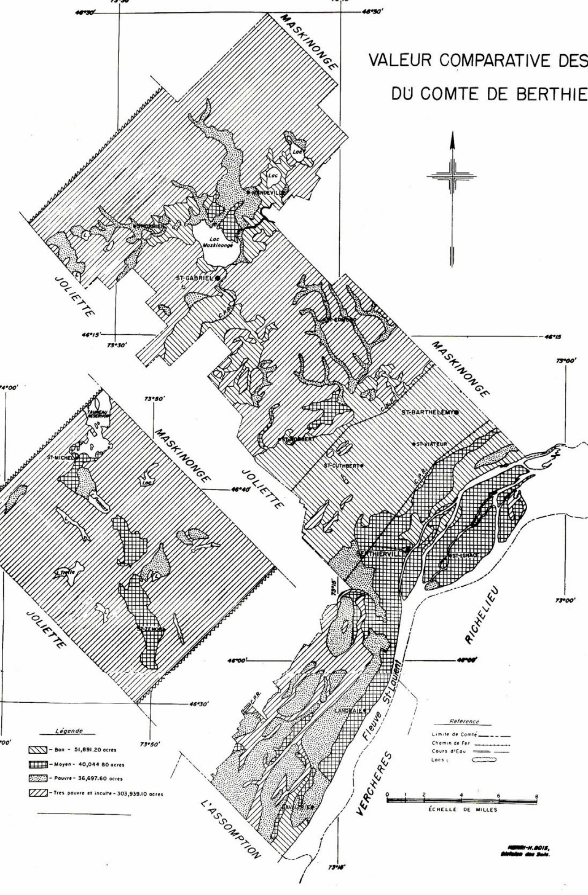
Carte de la valeur comparative des sols du comté de Berthier, indiquant la distribution des sols bons, moyens, pauvres et très pauvres/incultes, ainsi que les principaux toponymes (Maskinongé, St-Gabriel, Berthierville, etc.) et cours d'eau (Fleuve St-Laurent).
RESEAU HYDROGRAPHIQUE
DU COMTE DE BERTHIER
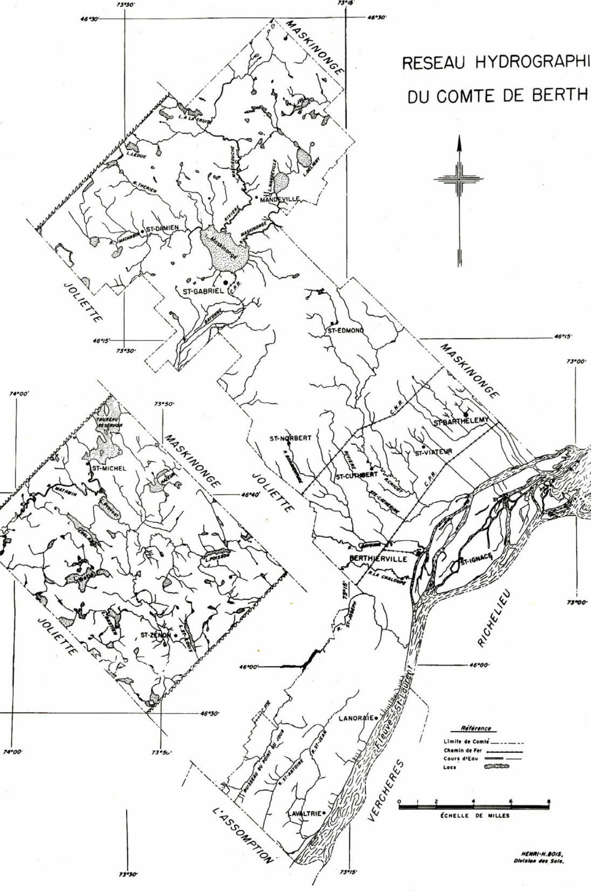
Réseau hydrographique du comté de Berthier
Référence
--- Limite de Comté
--- Chemin de Fer
— — — Cours d'Eau
■ Lacs
ÉCHELLE DE MILLES
HENRI-H. BOIS, Division des Sols.
Géomorphologie du Comté de Berthier
GEOMORPHOLOGIE
DU COMTE DE BERTHIER
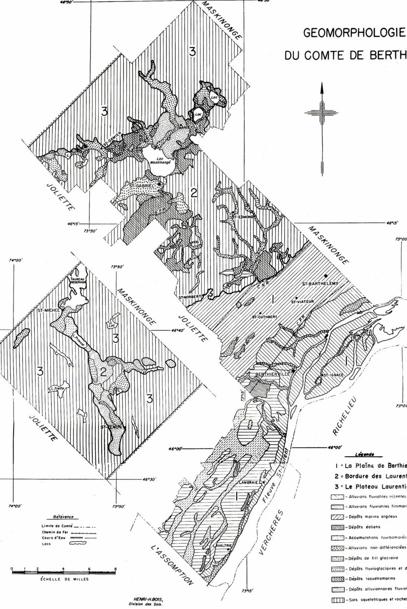
Carte géomorphologique du comté de Berthier
Légende
1 = La Plaine de Berthier
2 = Bordure des Laurentides
3 = Le Plateau Laurentien
[ ] - Alluvions fluviatiles récentes
[ ] - Alluvions fluviatiles finimarines
[ ] - Dépôts marins argileux
[ ] - Dépôts éoliens
[ ] - Accumulations tourbomarécageuses
[ ] - Alluvions non-différenciées
[ ] - Dépôts de till glaciaire
[ ] - Dépôts fluvioglaciaires et deltaïques
[ ] - Dépôts lacustromarins
[ ] - Dépôts alluvionnaires fluviomarins
[ ] - Sols squelettiques et roches en place
Référence
Limite de Comté : -------
Chemin de Fer : +++
Cours d'Eau : ~~~~
LocS : [Courbes/Formes]
ECHELLE DE MILLES
0 1 2 4 6 8
ETAT DE DRAINAGE DES SOLS
DU COMTE DE BERTHIER
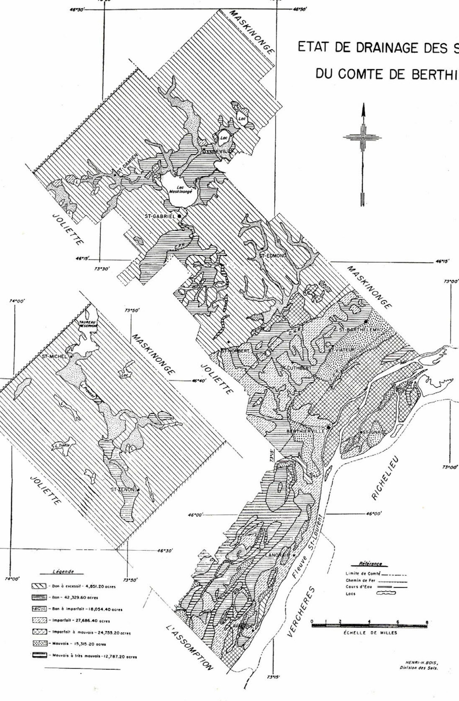
Carte de l'état de drainage des sols du comté de Berthier
CLASSES TEXTURALES DES SOLS
DU COMTE DE BERTHIER
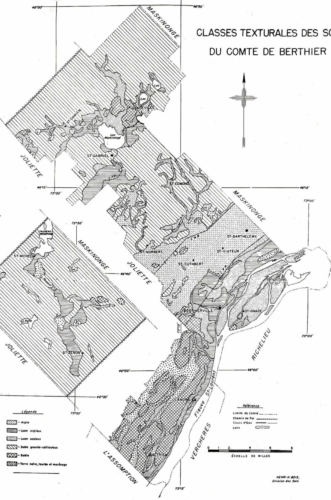
Carte des classes texturales des sols du comté de Berthier